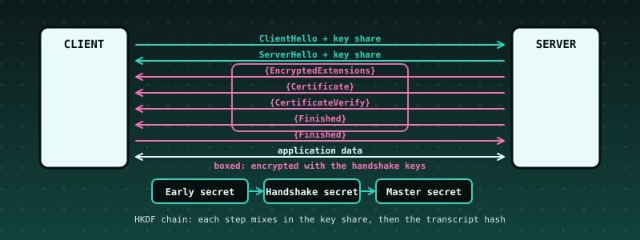

54. TLS 1.3 From Scratch: X25519, the HKDF Key Schedule, AES-GCM Records, and a Handshake Checked Against RFC 8448¶

What you will understand: how the protocol that secures most of the web turns a few public messages into keys only the two ends know, and how to check an implementation of it instead of trusting it. A TLS 1.3 client (054_tls.h/054_tls.c) builds a ClientHello with an X25519 key share, reads the server's, and runs the key schedule: HKDF-Extract and HKDF-Expand-Label chain an Early Secret, a Handshake Secret and a Master Secret, each step mixing in the key share or the transcript hash (a running SHA-256 of every handshake message). It then opens the server's encrypted flight (EncryptedExtensions, Certificate, CertificateVerify, Finished) with AES-128-GCM under sequence-numbered nonces, verifies the RSA-PSS signature in CertificateVerify and the server's Finished MAC, sends its own Finished, and switches to application keys. The kernel replays the recorded handshake of RFC 8448 section 3: every byte the client sends equals the record, and 14 attacks on the same recorded bytes are each refused with the alert the protocol demands.
What you need to know first: Chapter 30's SHA-256 and Chapter 47's HMAC and AES (the block cipher), 64-bit integer arithmetic, and the cumulative kernel. No TLS knowledge is assumed.
Scope: three confirmed choices before writing any code¶
Second of two further case studies. One AskUserQuestion round: core "Handshake + key schedule + record layer, RFC 8448 trace" (recommended; a smaller key-schedule-and-records-only version and a version adding the ChaCha20-Poly1305 suite were offered and not chosen); hardening "Full discipline".
Where the data comes from, said plainly¶
The RFC itself was not reachable from the sandbox that built this book (rfc-editor.org and datatracker.ietf.org are blocked). The recorded handshake comes from the test data of the Botan cryptography library (src/tests/data/tls_13_rfc8448/transcripts.vec, Simplified BSD licence, commit bd6f6c55481125b876d1ef3e4720eab87a422d17), which reproduces the records of RFC 8448 section 3 ("Simple 1-RTT Handshake"): the ClientHello, ServerHello, the server's encrypted flight, the client Finished, a NewSessionTicket, application data in both directions and close_notify, plus the client's random and X25519 private key. The same directory holds the RSA key and certificate that RFC's server used, so the independent Python server in the differential tests can sign with it. What is not in that file is the RFC's list of intermediate secrets; they were not checked against the RFC's text. Instead, each is checked two stronger ways: the recorded server flight can only be decrypted if the handshake traffic keys are right, and an independent Python key schedule must produce the same values. (The early secret 33ad0a1c..., the handshake secret 1dc826e9... and the master secret 18df0684... are values the author remembers from the RFC; they matched, which is a coincidence worth noting but not a check.)
What the client does and does not do¶
Read this before anything else: this client does not validate the server's certificate chain and does not check the host name. It takes the RSA public key from the server's leaf certificate only to verify that whoever sent this handshake holds the matching private key. Without a trust anchor that proves nothing about who the server is: an attacker with any certificate of their own would pass. This is a chapter about the cryptographic core, not a secure TLS library. Do not use it to protect anything.
- Does:
TLS_AES_128_GCM_SHA256(0x1301); X25519; the RSA-PSS (rsa_pss_rsae_sha256, 0x0804) CertificateVerify, verified with its own big-number code (moduli of 1024 to 2048 bits); the server Finished, verified in constant time; strict parsing of every record and message; the alert the protocol prescribes for each failure (t->alert); handshake messages split across records or several to a record; zero padding in records; sequence numbers that are never reused or wrapped (the 2^64-1th record is refused). - Offers but cannot use: the ClientHello lists the two other TLS 1.3 suites (0x1303, 0x1302) so that it is byte-identical to the RFC's; a server that selects one is refused.
- Does not: validate certificate chains, host names, expiry or revocation; HelloRetryRequest (refused); PSK, resumption, 0-RTT; client certificates; KeyUpdate; ECDSA or RSA-PKCS1 signatures; any group but X25519; record padding on send; session ticket storage; a network (the kernel replays recorded bytes).
- Is not constant time everywhere: the GHASH multiplication branches on bits of the data, and the big-number code works on public values only. These are acceptable for a teaching client that replays a recording and wrong for anything exposed to an attacker's timing.
The protocol in ten steps¶
- The client picks a random 32-byte value and an X25519 private key, and sends the ClientHello with the matching public key.
- The server answers with a ServerHello carrying its own X25519 public key. Both compute the same shared secret:
X25519(my private, your public). A peer that sends a low-order point makes this secret all zero; the client refuses it. - Early Secret =
HKDF-Extract(0, 0)(no pre-shared key). Handshake Secret =HKDF-Extract(Derive-Secret(Early, "derived", ""), shared secret). - The client and server handshake traffic secrets are
Derive-Secret(Handshake, "c hs traffic" / "s hs traffic", H(ClientHello..ServerHello)), whereHis SHA-256 of the messages so far. From each traffic secret come an AES key (16 bytes, labelkey) and an IV (12 bytes, labeliv). - Everything after the ServerHello is encrypted: each record's nonce is the IV XOR the 64-bit record sequence number, the header is the associated data, the real content type is appended inside the encryption, and the outer type is always
application_data. - The server sends EncryptedExtensions, its Certificate, a CertificateVerify (an RSA-PSS signature over 64 spaces, the string
TLS 1.3, server CertificateVerify, a zero byte and the transcript hash so far) and Finished (an HMAC over the transcript hash, keyed from the server's handshake secret). - The client verifies the signature and the Finished MAC, then computes the Master Secret =
HKDF-Extract(Derive-Secret(Handshake, "derived", ""), 0)and the application traffic secrets from the transcript hash through the server Finished. - The client sends its own Finished (the same construction, keyed from the client's handshake secret) under the client handshake keys, and both ends switch to application keys with sequence numbers back at zero.
- Application data flows both ways; the server sends a NewSessionTicket.
- Either side ends with a
close_notifyalert; any other alert is fatal.
The client: 054_tls.h and 054_tls.c¶
/* Chapter 54: a TLS 1.3 CLIENT (RFC 8446), small enough to read in one sitting, checked against the handshake of RFC 8448 section 3 ("Simple 1-RTT Handshake").
*
* ClientHello (X25519 key share) -> <- ServerHello (the server's X25519 share)
* both sides compute the same shared secret and run the KEY SCHEDULE: HKDF-Extract and HKDF-Expand-Label chain Early Secret -> Handshake Secret -> Master Secret,
* with a running hash (the TRANSCRIPT) of every handshake message mixed into each traffic secret
* <- {EncryptedExtensions} {Certificate} {CertificateVerify} {Finished} (protected with the server's handshake traffic keys, AES-128-GCM)
* {Finished} -> (protected with the client's handshake traffic keys) then both directions switch to APPLICATION traffic keys
* <-> application data records, a NewSessionTicket, close_notify
*
* WHAT IT DOES: TLS_AES_128_GCM_SHA256 (0x1301) only; key exchange X25519 only; server authentication by an RSA-PSS (rsa_pss_rsae_sha256, 0x0804) CertificateVerify, whose signature IS verified
* against the key in the server's leaf certificate (own 2048-bit-capable big-number code); the server's Finished is verified; records are protected and opened with sequence-numbered nonces; every received record is
* strictly parsed, and any failure sets the alert the protocol would send (t->alert).
* WHAT IT DOES NOT DO (the chapter page lists the consequences): NO X.509 CHAIN VALIDATION and no host-name check (the leaf certificate is used only to obtain the key that must have signed the handshake: without a trust anchor this
* proves nothing about WHO the server is), no HelloRetryRequest (refused), no PSK or 0-RTT or resumption, no client certificates, no KeyUpdate, no other cipher suites or groups, no record padding on send, no session ticket storage.
* Not a secure TLS library: do not use it to protect anything. */
#ifndef TLS_H
#define TLS_H
#include <stdint.h>
#include "054_sha256.h"
enum { TLS_OK = 0, TLS_ERR_ARG = -1, TLS_ERR_STATE = -2, TLS_ERR_RECORD = -3, TLS_ERR_DECRYPT = -4, TLS_ERR_HANDSHAKE = -5, TLS_ERR_VERSION = -6, TLS_ERR_SUITE = -7, TLS_ERR_HRR = -8, TLS_ERR_KEY = -9,
TLS_ERR_CERT = -10, TLS_ERR_SIG = -11, TLS_ERR_FINISHED = -12, TLS_ERR_SPACE = -13, TLS_ERR_ALERT = -14, TLS_ERR_SEQ = -15, TLS_ERR_CLOSED = -16 };
enum { TLS_ST_START = 0, TLS_ST_WAIT_SH, TLS_ST_WAIT_FLIGHT, TLS_ST_CONNECTED, TLS_ST_CLOSED, TLS_ST_FAILED };
/* alert descriptions (RFC 8446 section 6) the client would send for each failure */
enum { TLS_ALERT_CLOSE_NOTIFY = 0, TLS_ALERT_UNEXPECTED_MESSAGE = 10, TLS_ALERT_BAD_RECORD_MAC = 20, TLS_ALERT_RECORD_OVERFLOW = 22, TLS_ALERT_HANDSHAKE_FAILURE = 40, TLS_ALERT_BAD_CERTIFICATE = 42,
TLS_ALERT_ILLEGAL_PARAMETER = 47, TLS_ALERT_DECODE_ERROR = 50, TLS_ALERT_DECRYPT_ERROR = 51, TLS_ALERT_PROTOCOL_VERSION = 70, TLS_ALERT_INTERNAL_ERROR = 80, TLS_ALERT_MISSING_EXTENSION = 109, TLS_ALERT_UNSUPPORTED_EXTENSION = 110 };
#define TLS_MAX_PLAIN 16384u
#define TLS_HS_BUF 8192u
typedef struct {
int state, alert; uint8_t priv[32], pub[32], random[32]; sha256_ctx_t th; /* the transcript hash: every handshake message, in order */
uint8_t hs_secret[32], master[32], c_hs[32], s_hs[32], c_ap[32], s_ap[32], th_sf[32]; /* secrets; th_sf = transcript hash through the server's Finished */
uint8_t wkey[16], wiv[12], rkey[16], riv[12]; uint64_t wseq, rseq; /* the keys and sequence numbers in use: w = what we send, r = what we receive */
uint8_t hs[TLS_HS_BUF]; uint32_t hs_len; uint8_t saw_ee, saw_cert, saw_cv, saw_ccs; uint8_t rsa_n[256]; uint32_t rsa_nlen, rsa_e; uint32_t tickets, records_in, records_out;
} tls_t;
/* primitives, exported so the chapter's tests can check each one against RFC vectors and an independent library */
void tls_x25519(uint8_t out[32], const uint8_t scalar[32], const uint8_t point[32]);
void tls_hkdf_extract(const uint8_t *salt, uint32_t slen, const uint8_t *ikm, uint32_t ilen, uint8_t out[32]);
void tls_hkdf_expand_label(const uint8_t secret[32], const char *label, const uint8_t *ctx, uint32_t clen, uint8_t *out, uint32_t olen);
void tls_derive_secret(const uint8_t secret[32], const char *label, const uint8_t th[32], uint8_t out[32]);
void tls_gcm_seal(const uint8_t key[16], const uint8_t iv[12], const uint8_t *aad, uint32_t alen, const uint8_t *pt, uint32_t plen, uint8_t *out); /* out = ciphertext (plen bytes) then the 16-byte tag */
int tls_gcm_open(const uint8_t key[16], const uint8_t iv[12], const uint8_t *aad, uint32_t alen, const uint8_t *ct, uint32_t clen, uint8_t *pt); /* clen includes the tag; 0 ok, -1 on a bad tag (pt is zeroed) */
int tls_rsa_pss_verify(const uint8_t *n, uint32_t nlen, uint32_t e, const uint8_t *sig, uint32_t slen, const uint8_t mhash[32]); /* RSASSA-PSS, SHA-256, MGF1-SHA-256, 32-byte salt: 0 valid */
void tls_init(tls_t *t);
int tls_client_hello(tls_t *t, const uint8_t random[32], const uint8_t priv[32], const char *sni, uint8_t *rec, uint32_t cap, uint32_t *len);
/* one complete record received from the server; out receives records to send back (the client Finished), app receives decrypted application data */
int tls_receive(tls_t *t, const uint8_t *rec, uint32_t len, uint8_t *out, uint32_t outcap, uint32_t *outlen, uint8_t *app, uint32_t appcap, uint32_t *applen);
int tls_send(tls_t *t, const uint8_t *data, uint32_t n, uint8_t *rec, uint32_t cap, uint32_t *len); /* one application-data record */
int tls_close(tls_t *t, uint8_t *rec, uint32_t cap, uint32_t *len); /* a close_notify alert record */
const char *tls_strerror(int rc);
#endif
/* Chapter 54: the TLS 1.3 client (see 054_tls.h). Freestanding: no libc, no libgcc (64-bit multiplication and shifts only; no 64-bit division). */
#include "054_tls.h"
#include "054_aes.h"
#include "054_hmac.h"
static void cpy(uint8_t *d, const uint8_t *s, uint32_t n) { for (uint32_t i = 0; i < n; i++) { d[i] = s[i]; } }
static void zero(uint8_t *d, uint32_t n) { for (uint32_t i = 0; i < n; i++) { d[i] = 0; } }
static int ct_eq(const uint8_t *a, const uint8_t *b, uint32_t n) { uint8_t d = 0; for (uint32_t i = 0; i < n; i++) { d |= (uint8_t)(a[i] ^ b[i]); } return d == 0; }
static uint32_t g16(const uint8_t *p) { return ((uint32_t)p[0] << 8) | p[1]; }
static uint32_t g24(const uint8_t *p) { return ((uint32_t)p[0] << 16) | ((uint32_t)p[1] << 8) | p[2]; }
static void p16(uint8_t *p, uint32_t v) { p[0] = (uint8_t)(v >> 8); p[1] = (uint8_t)v; }
static void p24(uint8_t *p, uint32_t v) { p[0] = (uint8_t)(v >> 16); p[1] = (uint8_t)(v >> 8); p[2] = (uint8_t)v; }
/* ---- X25519 (RFC 7748): the Montgomery ladder over GF(2^255 - 19) in sixteen 16-bit limbs, after the public-domain TweetNaCl formulation ---- */
typedef int64_t gf[16];
static void car25519(gf o) { for (int i = 0; i < 16; i++) { o[i] += 65536; int64_t c = o[i] >> 16; o[(i + 1) * (i < 15)] += c - 1 + 37 * (c - 1) * (i == 15); o[i] -= c * 65536; } }
static void sel25519(gf p, gf q, int b) { int64_t c = ~((int64_t)b - 1); for (int i = 0; i < 16; i++) { int64_t t = c & (p[i] ^ q[i]); p[i] ^= t; q[i] ^= t; } }
static void pack25519(uint8_t *o, const gf n) {
gf m, t; for (int i = 0; i < 16; i++) { t[i] = n[i]; } car25519(t); car25519(t); car25519(t);
for (int j = 0; j < 2; j++) { m[0] = t[0] - 0xffed; for (int i = 1; i < 15; i++) { m[i] = t[i] - 0xffff - ((m[i - 1] >> 16) & 1); m[i - 1] &= 0xffff; } m[15] = t[15] - 0x7fff - ((m[14] >> 16) & 1); int b = (int)((m[15] >> 16) & 1); m[14] &= 0xffff; sel25519(t, m, 1 - b); }
for (int i = 0; i < 16; i++) { o[2 * i] = (uint8_t)(t[i] & 0xff); o[2 * i + 1] = (uint8_t)(t[i] >> 8); }
}
static void unpack25519(gf o, const uint8_t *n) { for (int i = 0; i < 16; i++) { o[i] = n[2 * i] + ((int64_t)n[2 * i + 1] * 256); } o[15] &= 0x7fff; }
static void fa(gf o, const gf a, const gf b) { for (int i = 0; i < 16; i++) { o[i] = a[i] + b[i]; } }
static void fz(gf o, const gf a, const gf b) { for (int i = 0; i < 16; i++) { o[i] = a[i] - b[i]; } }
static void fm(gf o, const gf a, const gf b) { int64_t t[31]; for (int i = 0; i < 31; i++) { t[i] = 0; } for (int i = 0; i < 16; i++) { for (int j = 0; j < 16; j++) { t[i + j] += a[i] * b[j]; } } for (int i = 0; i < 15; i++) { t[i] += 38 * t[i + 16]; } for (int i = 0; i < 16; i++) { o[i] = t[i]; } car25519(o); car25519(o); }
static void fs(gf o, const gf a) { fm(o, a, a); }
static void finv(gf o, const gf in) { gf c; for (int a = 0; a < 16; a++) { c[a] = in[a]; } for (int a = 253; a >= 0; a--) { fs(c, c); if (a != 2 && a != 4) { fm(c, c, in); } } for (int a = 0; a < 16; a++) { o[a] = c[a]; } }
void tls_x25519(uint8_t out[32], const uint8_t scalar[32], const uint8_t point[32]) {
static const gf k121665 = {0xDB41, 1}; uint8_t z[32]; int64_t x[80]; gf a, b, c, d, e, f;
for (int i = 0; i < 31; i++) { z[i] = scalar[i]; } z[31] = (uint8_t)((scalar[31] & 127) | 64); z[0] &= 248; unpack25519(x, point);
for (int i = 0; i < 16; i++) { b[i] = x[i]; d[i] = a[i] = c[i] = 0; } a[0] = d[0] = 1;
for (int i = 254; i >= 0; --i) { int r = (z[i >> 3] >> (i & 7)) & 1; sel25519(a, b, r); sel25519(c, d, r); fa(e, a, c); fz(a, a, c); fa(c, b, d); fz(b, b, d); fs(d, e); fs(f, a); fm(a, c, a); fm(c, b, e); fa(e, a, c); fz(a, a, c); fs(b, a); fz(c, d, f); fm(a, c, k121665); fa(a, a, d); fm(c, c, a); fm(a, d, f); fm(d, b, x); fs(b, e); sel25519(a, b, r); sel25519(c, d, r); }
for (int i = 0; i < 16; i++) { x[i + 16] = a[i]; x[i + 32] = c[i]; x[i + 48] = b[i]; x[i + 64] = d[i]; }
finv(x + 32, x + 32); fm(x + 16, x + 16, x + 32); pack25519(out, x + 16);
}
/* ---- HKDF (RFC 5869) and the TLS 1.3 label construction (RFC 8446 section 7.1) ---- */
void tls_hkdf_extract(const uint8_t *salt, uint32_t slen, const uint8_t *ikm, uint32_t ilen, uint8_t out[32]) { uint8_t z[32]; if (slen == 0) { zero(z, 32); salt = z; slen = 32; } hmac_sha256(salt, slen, ikm, ilen, out); }
static void hkdf_expand(const uint8_t prk[32], const uint8_t *info, uint32_t ilen, uint8_t *out, uint32_t olen) {
uint8_t t[32], buf[32 + 520 + 1]; uint32_t tl = 0, o = 0; for (uint32_t c = 1; o < olen; c++) { cpy(buf, t, tl); cpy(buf + tl, info, ilen); buf[tl + ilen] = (uint8_t)c; hmac_sha256(prk, 32, buf, tl + ilen + 1, t); tl = 32; for (uint32_t i = 0; i < 32 && o < olen; i++) { out[o++] = t[i]; } }
}
void tls_hkdf_expand_label(const uint8_t secret[32], const char *label, const uint8_t *ctx, uint32_t clen, uint8_t *out, uint32_t olen) {
uint8_t info[520]; uint32_t n = 0, ll = 0; while (label[ll]) { ll++; } if (ll > 249u || clen > 255u || olen > 255u * 32u || olen == 0) { zero(out, olen > 255u * 32u ? 0u : olen); return; } /* outside what the encoding can express: a caller bug, answered with zeros */ p16(info, olen); info[2] = (uint8_t)(6 + ll); n = 3; const char *pre = "tls13 "; for (int i = 0; i < 6; i++) { info[n++] = (uint8_t)pre[i]; } for (uint32_t i = 0; i < ll; i++) { info[n++] = (uint8_t)label[i]; }
info[n++] = (uint8_t)clen; for (uint32_t i = 0; i < clen; i++) { info[n++] = ctx[i]; } hkdf_expand(secret, info, n, out, olen);
}
void tls_derive_secret(const uint8_t secret[32], const char *label, const uint8_t th[32], uint8_t out[32]) { tls_hkdf_expand_label(secret, label, th, 32, out, 32); }
/* ---- AES-128-GCM (NIST SP 800-38D) with a 96-bit nonce; GHASH multiplies bit by bit ---- */
static void gmul(uint8_t x[16], const uint8_t h[16]) {
uint8_t z[16], v[16]; zero(z, 16); cpy(v, h, 16);
for (int i = 0; i < 128; i++) { if ((x[i >> 3] >> (7 - (i & 7))) & 1) { for (int k = 0; k < 16; k++) { z[k] ^= v[k]; } } int lsb = v[15] & 1; for (int k = 15; k > 0; k--) { v[k] = (uint8_t)((v[k] >> 1) | (v[k - 1] << 7)); } v[0] >>= 1; if (lsb) { v[0] ^= 0xe1; } }
cpy(x, z, 16);
}
static void ghash_update(uint8_t y[16], const uint8_t h[16], const uint8_t *d, uint32_t n) { while (n) { uint32_t k = n < 16 ? n : 16; for (uint32_t i = 0; i < k; i++) { y[i] ^= d[i]; } gmul(y, h); d += k; n -= k; } }
static void gcm_core(const uint8_t key[16], const uint8_t iv[12], const uint8_t *aad, uint32_t alen, const uint8_t *in, uint32_t n, uint8_t *out, const uint8_t *ghash_over, uint8_t tag[16]) {
uint8_t rk[176], h[16], z[16], j0[16], y[16], ks[16], ctr[16]; aes128_key_expand(key, rk); zero(z, 16); aes128_encrypt_block(z, h, rk); cpy(j0, iv, 12); j0[12] = j0[13] = j0[14] = 0; j0[15] = 1; cpy(ctr, j0, 16);
for (uint32_t off = 0; off < n; off += 16) { for (int k = 15; k >= 12; k--) { if (++ctr[k]) { break; } } aes128_encrypt_block(ctr, ks, rk); uint32_t k = n - off < 16 ? n - off : 16; for (uint32_t i = 0; i < k; i++) { out[off + i] = (uint8_t)(in[off + i] ^ ks[i]); } }
zero(y, 16); ghash_update(y, h, aad, alen); ghash_update(y, h, ghash_over, n); uint8_t lb[16]; zero(lb, 16); uint64_t ab = (uint64_t)alen * 8u, cb = (uint64_t)n * 8u; for (int i = 0; i < 8; i++) { lb[7 - i] = (uint8_t)(ab >> (8 * i)); lb[15 - i] = (uint8_t)(cb >> (8 * i)); } for (int i = 0; i < 16; i++) { y[i] ^= lb[i]; } gmul(y, h);
aes128_encrypt_block(j0, ks, rk); for (int i = 0; i < 16; i++) { tag[i] = (uint8_t)(y[i] ^ ks[i]); }
}
void tls_gcm_seal(const uint8_t key[16], const uint8_t iv[12], const uint8_t *aad, uint32_t alen, const uint8_t *pt, uint32_t plen, uint8_t *out) { uint8_t tag[16]; gcm_core(key, iv, aad, alen, pt, plen, out, out, tag); cpy(out + plen, tag, 16); }
int tls_gcm_open(const uint8_t key[16], const uint8_t iv[12], const uint8_t *aad, uint32_t alen, const uint8_t *ct, uint32_t clen, uint8_t *pt) {
if (clen < 16) { return -1; } uint32_t n = clen - 16; uint8_t tag[16]; gcm_core(key, iv, aad, alen, ct, n, pt, ct, tag); if (!ct_eq(tag, ct + n, 16)) { zero(pt, n); return -1; } return 0;
}
/* ---- big numbers and RSA-PSS verification (RFC 8017 sections 8.1.2 and 9.1.2) ---- */
#define BN_MAX 64u /* limbs: 2048 bits */
static uint32_t bn_load(uint32_t *l, const uint8_t *be, uint32_t n) { uint32_t nl = (n + 3u) / 4u; for (uint32_t i = 0; i < BN_MAX; i++) { l[i] = 0; } for (uint32_t i = 0; i < n; i++) { l[i / 4u] |= (uint32_t)be[n - 1u - i] << (8u * (i % 4u)); } return nl; }
static int bn_cmp(const uint32_t *a, const uint32_t *b, uint32_t nl) { for (uint32_t i = nl; i > 0; i--) { if (a[i - 1] != b[i - 1]) { return a[i - 1] < b[i - 1] ? -1 : 1; } } return 0; }
static void bn_sub(uint32_t *a, const uint32_t *b, uint32_t nl) { uint32_t br = 0; for (uint32_t i = 0; i < nl; i++) { uint32_t x = a[i], y = b[i]; uint32_t d = x - y - br; br = (x < y || (x == y && br)) ? 1u : 0u; a[i] = d; } }
static void bn_addmod(uint32_t *r, const uint32_t *a, const uint32_t *b, const uint32_t *n, uint32_t nl) { uint32_t c = 0; for (uint32_t i = 0; i < nl; i++) { uint32_t s = a[i] + b[i]; uint32_t c1 = s < a[i]; uint32_t s2 = s + c; c1 |= s2 < s; r[i] = s2; c = c1; } if (c || bn_cmp(r, n, nl) >= 0) { bn_sub(r, n, nl); } }
static void bn_mulmod(uint32_t *r, const uint32_t *a, const uint32_t *b, const uint32_t *n, uint32_t nl) { uint32_t acc[BN_MAX]; for (uint32_t i = 0; i < nl; i++) { acc[i] = 0; } for (int bit = (int)nl * 32 - 1; bit >= 0; bit--) { bn_addmod(acc, acc, acc, n, nl); if ((b[bit / 32] >> (bit % 32)) & 1u) { bn_addmod(acc, acc, a, n, nl); } } for (uint32_t i = 0; i < nl; i++) { r[i] = acc[i]; } }
static void mgf1(const uint8_t seed[32], uint8_t *out, uint32_t olen) { uint8_t buf[36], h[32]; cpy(buf, seed, 32); for (uint32_t c = 0, o = 0; o < olen; c++) { buf[32] = (uint8_t)(c >> 24); buf[33] = (uint8_t)(c >> 16); buf[34] = (uint8_t)(c >> 8); buf[35] = (uint8_t)c; sha256_hash(buf, 36, h); for (uint32_t i = 0; i < 32 && o < olen; i++) { out[o++] = h[i]; } } }
int tls_rsa_pss_verify(const uint8_t *n, uint32_t nlen, uint32_t e, const uint8_t *sig, uint32_t slen, const uint8_t mhash[32]) {
if (nlen < 128u || nlen > 256u || n[0] == 0 || (n[nlen - 1] & 1u) == 0 || e < 3 || (e & 1u) == 0 || slen != nlen) { return -1; }
uint32_t N[BN_MAX], S[BN_MAX], R[BN_MAX]; uint32_t nl = bn_load(N, n, nlen); bn_load(S, sig, slen); if (bn_cmp(S, N, nl) >= 0) { return -1; }
for (uint32_t i = 0; i < nl; i++) { R[i] = S[i]; } int top = 31; while (top > 0 && !((e >> top) & 1u)) { top--; } for (int bit = top - 1; bit >= 0; bit--) { bn_mulmod(R, R, R, N, nl); if ((e >> bit) & 1u) { bn_mulmod(R, R, S, N, nl); } }
uint8_t em[256]; uint32_t modbits = nlen * 8u; uint32_t b = n[0]; while (!(b & 0x80u)) { b <<= 1; modbits--; } uint32_t embits = modbits - 1u, emlen = (embits + 7u) / 8u; /* emlen = nlen or nlen - 1 */
for (uint32_t i = 0; i < nlen; i++) { em[nlen - 1u - i] = (uint8_t)(R[i / 4u] >> (8u * (i % 4u))); } const uint8_t *EM = em + (nlen - emlen);
if (nlen > emlen && em[0] != 0) { return -1; } if (emlen < 32u + 32u + 2u || EM[emlen - 1] != 0xbc) { return -1; }
uint32_t dblen = emlen - 32u - 1u; const uint8_t *H = EM + dblen; uint8_t db[256], mask[256]; mgf1(H, mask, dblen); for (uint32_t i = 0; i < dblen; i++) { db[i] = (uint8_t)(EM[i] ^ mask[i]); }
uint32_t unused = 8u * emlen - embits; if (unused) { db[0] &= (uint8_t)(0xFFu >> unused); } if (EM[0] & (uint8_t)(0xFFu << (8u - unused)) && unused) { return -1; }
uint32_t ps = dblen - 32u - 1u; for (uint32_t i = 0; i < ps; i++) { if (db[i] != 0) { return -1; } } if (db[ps] != 0x01) { return -1; }
uint8_t mp[8 + 32 + 32], hh[32]; zero(mp, 8); cpy(mp + 8, mhash, 32); cpy(mp + 40, db + ps + 1, 32); sha256_hash(mp, 72, hh); return ct_eq(hh, H, 32) ? 0 : -1;
}
/* ---- DER: just enough to find the RSA public key in a certificate ---- */
static int der_tlv(const uint8_t *b, uint32_t len, uint32_t *pos, uint8_t *tag, uint32_t *vlen) { /* on success *pos is the start of the value */
if (*pos + 2u > len) { return -1; } *tag = b[*pos]; uint32_t l = b[*pos + 1], p = *pos + 2u; if (l & 0x80u) { uint32_t nb = l & 0x7Fu; if (nb < 1 || nb > 2 || p + nb > len) { return -1; } l = 0; for (uint32_t i = 0; i < nb; i++) { l = (l << 8) | b[p++]; } } if (l > len - p) { return -1; } *pos = p; *vlen = l; return 0;
}
static int der_into(const uint8_t *b, uint32_t len, uint32_t *pos, uint8_t want, uint32_t *vlen) { uint8_t tag; if (der_tlv(b, len, pos, &tag, vlen) || tag != want) { return -1; } return 0; }
static int der_skip(const uint8_t *b, uint32_t len, uint32_t *pos, uint8_t want) { uint32_t v; if (der_into(b, len, pos, want, &v)) { return -1; } *pos += v; return 0; }
static int cert_rsa_key(const uint8_t *c, uint32_t len, uint8_t *n, uint32_t *nlen, uint32_t *e) {
uint32_t p = 0, v; if (der_into(c, len, &p, 0x30, &v)) { return -1; } if (der_into(c, len, &p, 0x30, &v)) { return -1; } /* certificate, tbsCertificate */
if (p < len && c[p] == 0xa0) { if (der_skip(c, len, &p, 0xa0)) { return -1; } } /* version */
if (der_skip(c, len, &p, 0x02) || der_skip(c, len, &p, 0x30) || der_skip(c, len, &p, 0x30) || der_skip(c, len, &p, 0x30) || der_skip(c, len, &p, 0x30)) { return -1; } /* serial, signature alg, issuer, validity, subject */
if (der_into(c, len, &p, 0x30, &v)) { return -1; } /* subjectPublicKeyInfo */
uint32_t q = p; if (der_into(c, len, &q, 0x30, &v)) { return -1; } static const uint8_t oid[11] = {0x06, 0x09, 0x2a, 0x86, 0x48, 0x86, 0xf7, 0x0d, 0x01, 0x01, 0x01}; if (v < 11 || q + 11 > len) { return -1; } for (int i = 0; i < 11; i++) { if (c[q + i] != oid[i]) { return -1; } } q += v;
if (der_into(c, len, &q, 0x03, &v) || v < 1 || c[q] != 0) { return -1; } q++; if (der_into(c, len, &q, 0x30, &v)) { return -1; }
uint8_t tag; uint32_t nl; if (der_tlv(c, len, &q, &tag, &nl) || tag != 0x02 || nl < 2) { return -1; } uint32_t ns = q; q += nl; while (nl > 0 && c[ns] == 0) { ns++; nl--; } if (nl < 128 || nl > 256) { return -1; } cpy(n, c + ns, nl); *nlen = nl;
uint32_t el; if (der_tlv(c, len, &q, &tag, &el) || tag != 0x02 || el < 1 || el > 4) { return -1; } uint32_t ev = 0; for (uint32_t i = 0; i < el; i++) { ev = (ev << 8) | c[q + i]; } *e = ev; return 0;
}
/* ---- records ---- */
static void make_nonce(const uint8_t iv[12], uint64_t seq, uint8_t nonce[12]) { cpy(nonce, iv, 12); for (int i = 0; i < 8; i++) { nonce[11 - i] ^= (uint8_t)(seq >> (8 * i)); } }
static int seal_record(const uint8_t key[16], const uint8_t iv[12], uint64_t *seq, uint8_t type, const uint8_t *data, uint32_t n, uint8_t *rec, uint32_t cap, uint32_t *len) {
if (n > TLS_MAX_PLAIN) { return TLS_ERR_ARG; } if (cap < 5u + n + 1u + 16u) { return TLS_ERR_SPACE; } if (*seq == 0xFFFFFFFFFFFFFFFFull) { return TLS_ERR_SEQ; }
uint8_t inner[TLS_MAX_PLAIN + 1], nonce[12]; cpy(inner, data, n); inner[n] = type; rec[0] = 23; rec[1] = 3; rec[2] = 3; p16(rec + 3, n + 1u + 16u); make_nonce(iv, *seq, nonce); tls_gcm_seal(key, nonce, rec, 5, inner, n + 1u, rec + 5); (*seq)++; *len = 5u + n + 1u + 16u; return TLS_OK;
}
static int fail(tls_t *t, int rc, int alert) { t->state = TLS_ST_FAILED; t->alert = alert; return rc; }
static void th_hash(const tls_t *t, uint8_t out[32]) { sha256_ctx_t c = t->th; sha256_final(&c, out); }
static void th_add(tls_t *t, const uint8_t *m, uint32_t n) { sha256_update(&t->th, m, n); }
static void set_keys(const uint8_t secret[32], uint8_t key[16], uint8_t iv[12]) { tls_hkdf_expand_label(secret, "key", 0, 0, key, 16); tls_hkdf_expand_label(secret, "iv", 0, 0, iv, 12); }
void tls_init(tls_t *t) { uint8_t *p = (uint8_t *)t; for (uint32_t i = 0; i < sizeof *t; i++) { p[i] = 0; } t->state = TLS_ST_START; sha256_init(&t->th); }
const char *tls_strerror(int rc) {
switch (rc) { case TLS_OK: return "ok"; case TLS_ERR_ARG: return "bad argument"; case TLS_ERR_STATE: return "record not allowed in this state"; case TLS_ERR_RECORD: return "malformed record"; case TLS_ERR_DECRYPT: return "record failed authentication (bad_record_mac)";
case TLS_ERR_HANDSHAKE: return "unexpected or malformed handshake message"; case TLS_ERR_VERSION: return "not TLS 1.3"; case TLS_ERR_SUITE: return "cipher suite not offered"; case TLS_ERR_HRR: return "HelloRetryRequest is not supported"; case TLS_ERR_KEY: return "unusable key share";
case TLS_ERR_CERT: return "certificate not understood"; case TLS_ERR_SIG: return "CertificateVerify signature invalid"; case TLS_ERR_FINISHED: return "Finished verify_data wrong"; case TLS_ERR_SPACE: return "output buffer too small"; case TLS_ERR_ALERT: return "alert received";
case TLS_ERR_SEQ: return "sequence number exhausted"; case TLS_ERR_CLOSED: return "connection closed"; } return "?";
}
int tls_client_hello(tls_t *t, const uint8_t random[32], const uint8_t priv[32], const char *sni, uint8_t *rec, uint32_t cap, uint32_t *len) {
if (t->state != TLS_ST_START) { return TLS_ERR_STATE; } uint32_t sl = 0; while (sni && sni[sl]) { sl++; } if (sl == 0 || sl > 200) { return TLS_ERR_ARG; }
static const uint8_t base[32] = {9}; cpy(t->priv, priv, 32); cpy(t->random, random, 32); tls_x25519(t->pub, priv, base);
uint8_t m[400]; uint32_t o = 4; p16(m + o, 0x0303); o += 2; cpy(m + o, random, 32); o += 32; m[o++] = 0; /* legacy_version, random, empty legacy_session_id */
p16(m + o, 6); o += 2; p16(m + o, 0x1301); p16(m + o + 2, 0x1303); p16(m + o + 4, 0x1302); o += 6; m[o++] = 1; m[o++] = 0; /* cipher suites (the two we do not implement are offered, as in RFC 8448, but a server that picks one is refused), compression null */
uint32_t extlen_at = o; o += 2; uint32_t es = o;
p16(m + o, 0x0000); p16(m + o + 2, sl + 5u); p16(m + o + 4, sl + 3u); m[o + 6] = 0; p16(m + o + 7, sl); o += 9; cpy(m + o, (const uint8_t *)sni, sl); o += sl; /* server_name */
p16(m + o, 0xff01); p16(m + o + 2, 1); m[o + 4] = 0; o += 5; /* renegotiation_info */
p16(m + o, 0x000a); p16(m + o + 2, 0x0014); p16(m + o + 4, 0x0012); o += 6; static const uint16_t groups[9] = {0x001d, 0x0017, 0x0018, 0x0019, 0x0100, 0x0101, 0x0102, 0x0103, 0x0104}; for (int i = 0; i < 9; i++) { p16(m + o, groups[i]); o += 2; } /* supported_groups */
p16(m + o, 0x0023); p16(m + o + 2, 0); o += 4; /* session_ticket */
p16(m + o, 0x0033); p16(m + o + 2, 0x0026); p16(m + o + 4, 0x0024); p16(m + o + 6, 0x001d); p16(m + o + 8, 32); cpy(m + o + 10, t->pub, 32); o += 42; /* key_share: x25519 */
p16(m + o, 0x002b); p16(m + o + 2, 3); m[o + 4] = 2; p16(m + o + 5, 0x0304); o += 7; /* supported_versions: TLS 1.3 only */
p16(m + o, 0x000d); p16(m + o + 2, 0x0020); p16(m + o + 4, 0x001e); o += 6; static const uint16_t sa[15] = {0x0403, 0x0503, 0x0603, 0x0203, 0x0804, 0x0805, 0x0806, 0x0401, 0x0501, 0x0601, 0x0201, 0x0402, 0x0502, 0x0602, 0x0202}; for (int i = 0; i < 15; i++) { p16(m + o, sa[i]); o += 2; } /* signature_algorithms */
p16(m + o, 0x002d); p16(m + o + 2, 2); m[o + 4] = 1; m[o + 5] = 1; o += 6; /* psk_key_exchange_modes: psk_dhe_ke (we never offer a PSK) */
p16(m + o, 0x001c); p16(m + o + 2, 2); p16(m + o + 4, 0x4001); o += 6; /* record_size_limit */
p16(m + extlen_at, o - es); m[0] = 1; p24(m + 1, o - 4u);
if (cap < 5u + o) { return TLS_ERR_SPACE; } rec[0] = 22; rec[1] = 3; rec[2] = 1; p16(rec + 3, o); cpy(rec + 5, m, o); *len = 5u + o; th_add(t, m, o); t->state = TLS_ST_WAIT_SH; t->records_out++; return TLS_OK;
}
static int process_server_hello(tls_t *t, const uint8_t *m, uint32_t n) { /* m: the whole handshake message including its 4-byte header */
if (n < 4u + 2u + 32u + 1u + 2u + 1u + 2u) { return fail(t, TLS_ERR_HANDSHAKE, TLS_ALERT_DECODE_ERROR); } if (m[0] != 2) { return fail(t, TLS_ERR_HANDSHAKE, TLS_ALERT_UNEXPECTED_MESSAGE); } if (g24(m + 1) != n - 4u) { return fail(t, TLS_ERR_HANDSHAKE, TLS_ALERT_DECODE_ERROR); }
uint32_t o = 4; if (g16(m + o) != 0x0303) { return fail(t, TLS_ERR_VERSION, TLS_ALERT_PROTOCOL_VERSION); } o += 2; const uint8_t *srandom = m + o; o += 32;
static const uint8_t hrr[32] = {0xcf, 0x21, 0xad, 0x74, 0xe5, 0x9a, 0x61, 0x11, 0xbe, 0x1d, 0x8c, 0x02, 0x1e, 0x65, 0xb8, 0x91, 0xc2, 0xa2, 0x11, 0x16, 0x7a, 0xbb, 0x8c, 0x5e, 0x07, 0x9e, 0x09, 0xe2, 0xc8, 0xa8, 0x33, 0x9c};
if (ct_eq(srandom, hrr, 32)) { return fail(t, TLS_ERR_HRR, TLS_ALERT_HANDSHAKE_FAILURE); }
if (m[o] != 0) { return fail(t, TLS_ERR_HANDSHAKE, TLS_ALERT_ILLEGAL_PARAMETER); } o++; /* we sent an empty session id, so the echo must be empty */
if (g16(m + o) != 0x1301) { return fail(t, TLS_ERR_SUITE, TLS_ALERT_ILLEGAL_PARAMETER); } o += 2; if (m[o] != 0) { return fail(t, TLS_ERR_HANDSHAKE, TLS_ALERT_ILLEGAL_PARAMETER); } o++;
uint32_t el = g16(m + o); o += 2; if (el != n - o) { return fail(t, TLS_ERR_HANDSHAKE, TLS_ALERT_DECODE_ERROR); }
int saw_ver = 0, saw_ks = 0; const uint8_t *share = 0;
while (o < n) {
if (n - o < 4u) { return fail(t, TLS_ERR_HANDSHAKE, TLS_ALERT_DECODE_ERROR); } uint32_t ty = g16(m + o), l = g16(m + o + 2); o += 4; if (l > n - o) { return fail(t, TLS_ERR_HANDSHAKE, TLS_ALERT_DECODE_ERROR); }
if (ty == 0x002b) { if (saw_ver || l != 2 || g16(m + o) != 0x0304) { return fail(t, TLS_ERR_VERSION, TLS_ALERT_ILLEGAL_PARAMETER); } saw_ver = 1; }
else if (ty == 0x0033) { if (saw_ks || l != 36 || g16(m + o) != 0x001d || g16(m + o + 2) != 32) { return fail(t, TLS_ERR_KEY, TLS_ALERT_ILLEGAL_PARAMETER); } saw_ks = 1; share = m + o + 4; }
else { return fail(t, TLS_ERR_HANDSHAKE, TLS_ALERT_UNSUPPORTED_EXTENSION); }
o += l;
}
if (!saw_ver) { return fail(t, TLS_ERR_VERSION, TLS_ALERT_MISSING_EXTENSION); } if (!saw_ks) { return fail(t, TLS_ERR_KEY, TLS_ALERT_MISSING_EXTENSION); }
static const uint8_t dg[8] = {'D', 'O', 'W', 'N', 'G', 'R', 'D', 1}; int sentinel = 1; for (int i = 0; i < 7; i++) { if (srandom[24 + i] != dg[i]) { sentinel = 0; } } if (sentinel && srandom[31] <= 1) { return fail(t, TLS_ERR_VERSION, TLS_ALERT_ILLEGAL_PARAMETER); }
uint8_t shared[32], any = 0; tls_x25519(shared, t->priv, share); for (int i = 0; i < 32; i++) { any |= shared[i]; } if (!any) { return fail(t, TLS_ERR_KEY, TLS_ALERT_ILLEGAL_PARAMETER); } /* a low-order point gives the all-zero secret */
th_add(t, m, n); uint8_t early[32], derived[32], zeros[32], eh[32], th[32]; zero(zeros, 32); tls_hkdf_extract(0, 0, zeros, 32, early); sha256_hash(0, 0, eh); tls_derive_secret(early, "derived", eh, derived);
tls_hkdf_extract(derived, 32, shared, 32, t->hs_secret); th_hash(t, th); tls_derive_secret(t->hs_secret, "c hs traffic", th, t->c_hs); tls_derive_secret(t->hs_secret, "s hs traffic", th, t->s_hs);
tls_derive_secret(t->hs_secret, "derived", eh, derived); tls_hkdf_extract(derived, 32, zeros, 32, t->master);
set_keys(t->s_hs, t->rkey, t->riv); t->rseq = 0; set_keys(t->c_hs, t->wkey, t->wiv); t->wseq = 0; t->state = TLS_ST_WAIT_FLIGHT; return TLS_OK;
}
static int process_flight_message(tls_t *t, const uint8_t *m, uint32_t n, uint8_t *out, uint32_t outcap, uint32_t *outlen, int *done) {
uint32_t body = n - 4u; const uint8_t *b = m + 4; uint8_t ty = m[0];
if (ty == 8) { /* EncryptedExtensions */
if (t->saw_ee) { return fail(t, TLS_ERR_HANDSHAKE, TLS_ALERT_UNEXPECTED_MESSAGE); } if (body < 2u || g16(b) != body - 2u) { return fail(t, TLS_ERR_HANDSHAKE, TLS_ALERT_DECODE_ERROR); }
for (uint32_t o = 2; o < body;) { if (body - o < 4u) { return fail(t, TLS_ERR_HANDSHAKE, TLS_ALERT_DECODE_ERROR); } uint32_t l = g16(b + o + 2); o += 4; if (l > body - o) { return fail(t, TLS_ERR_HANDSHAKE, TLS_ALERT_DECODE_ERROR); } o += l; }
t->saw_ee = 1; th_add(t, m, n); return TLS_OK;
}
if (ty == 11) { /* Certificate */
if (!t->saw_ee || t->saw_cert) { return fail(t, TLS_ERR_HANDSHAKE, TLS_ALERT_UNEXPECTED_MESSAGE); } if (body < 4u || b[0] != 0 || g24(b + 1) != body - 4u) { return fail(t, TLS_ERR_HANDSHAKE, TLS_ALERT_DECODE_ERROR); }
uint32_t o = 4; int first = 1; while (o < body) { if (body - o < 3u) { return fail(t, TLS_ERR_HANDSHAKE, TLS_ALERT_DECODE_ERROR); } uint32_t cl = g24(b + o); o += 3; if (cl == 0 || cl > body - o) { return fail(t, TLS_ERR_HANDSHAKE, TLS_ALERT_DECODE_ERROR); }
if (first) { if (cert_rsa_key(b + o, cl, t->rsa_n, &t->rsa_nlen, &t->rsa_e)) { return fail(t, TLS_ERR_CERT, TLS_ALERT_BAD_CERTIFICATE); } first = 0; } o += cl; if (body - o < 2u) { return fail(t, TLS_ERR_HANDSHAKE, TLS_ALERT_DECODE_ERROR); } uint32_t xl = g16(b + o); o += 2; if (xl > body - o) { return fail(t, TLS_ERR_HANDSHAKE, TLS_ALERT_DECODE_ERROR); } o += xl; }
if (first) { return fail(t, TLS_ERR_CERT, TLS_ALERT_BAD_CERTIFICATE); } t->saw_cert = 1; th_add(t, m, n); return TLS_OK;
}
if (ty == 15) { /* CertificateVerify */
if (!t->saw_cert || t->saw_cv) { return fail(t, TLS_ERR_HANDSHAKE, TLS_ALERT_UNEXPECTED_MESSAGE); } if (body < 4u || g16(b + 2) != body - 4u) { return fail(t, TLS_ERR_HANDSHAKE, TLS_ALERT_DECODE_ERROR); } if (g16(b) != 0x0804) { return fail(t, TLS_ERR_SIG, TLS_ALERT_ILLEGAL_PARAMETER); }
uint8_t th[32], msg[64 + 33 + 1 + 32], mh[32]; th_hash(t, th); for (int i = 0; i < 64; i++) { msg[i] = 0x20; } static const char ctx[] = "TLS 1.3, server CertificateVerify"; for (int i = 0; i < 33; i++) { msg[64 + i] = (uint8_t)ctx[i]; } msg[97] = 0; cpy(msg + 98, th, 32); sha256_hash(msg, 130, mh);
if (tls_rsa_pss_verify(t->rsa_n, t->rsa_nlen, t->rsa_e, b + 4, body - 4u, mh)) { return fail(t, TLS_ERR_SIG, TLS_ALERT_DECRYPT_ERROR); } t->saw_cv = 1; th_add(t, m, n); return TLS_OK;
}
if (ty == 20) { /* Finished */
if (!t->saw_cv) { return fail(t, TLS_ERR_HANDSHAKE, TLS_ALERT_UNEXPECTED_MESSAGE); } if (body != 32u) { return fail(t, TLS_ERR_HANDSHAKE, TLS_ALERT_DECODE_ERROR); }
uint8_t th[32], fk[32], vd[32]; th_hash(t, th); tls_hkdf_expand_label(t->s_hs, "finished", 0, 0, fk, 32); hmac_sha256(fk, 32, th, 32, vd); if (!ct_eq(vd, b, 32)) { return fail(t, TLS_ERR_FINISHED, TLS_ALERT_DECRYPT_ERROR); }
if (t->hs_len != n) { return fail(t, TLS_ERR_HANDSHAKE, TLS_ALERT_UNEXPECTED_MESSAGE); } /* nothing may follow the server Finished in the same key epoch */
th_add(t, m, n); th_hash(t, t->th_sf); tls_derive_secret(t->master, "c ap traffic", t->th_sf, t->c_ap); tls_derive_secret(t->master, "s ap traffic", t->th_sf, t->s_ap);
uint8_t cf[36]; cf[0] = 20; p24(cf + 1, 32); tls_hkdf_expand_label(t->c_hs, "finished", 0, 0, fk, 32); hmac_sha256(fk, 32, t->th_sf, 32, cf + 4); th_add(t, cf, 36);
int rc = seal_record(t->wkey, t->wiv, &t->wseq, 22, cf, 36, out, outcap, outlen); if (rc) { return fail(t, rc, TLS_ALERT_INTERNAL_ERROR); } t->records_out++;
set_keys(t->s_ap, t->rkey, t->riv); t->rseq = 0; set_keys(t->c_ap, t->wkey, t->wiv); t->wseq = 0; *done = 1; return TLS_OK;
}
return fail(t, TLS_ERR_HANDSHAKE, ty == 13 ? TLS_ALERT_HANDSHAKE_FAILURE : TLS_ALERT_UNEXPECTED_MESSAGE); /* CertificateRequest (client auth) and anything else is not supported */
}
int tls_receive(tls_t *t, const uint8_t *rec, uint32_t len, uint8_t *out, uint32_t outcap, uint32_t *outlen, uint8_t *app, uint32_t appcap, uint32_t *applen) {
*outlen = 0; if (applen) { *applen = 0; } if (t->state == TLS_ST_FAILED) { return TLS_ERR_STATE; } if (t->state == TLS_ST_CLOSED) { return TLS_ERR_CLOSED; } if (t->state == TLS_ST_START) { return TLS_ERR_STATE; }
if (len < 5u) { return fail(t, TLS_ERR_RECORD, TLS_ALERT_DECODE_ERROR); } uint8_t type = rec[0]; uint32_t ver = g16(rec + 1), rl = g16(rec + 3); if (len != 5u + rl) { return fail(t, TLS_ERR_RECORD, TLS_ALERT_DECODE_ERROR); }
if (ver != 0x0303) { return fail(t, TLS_ERR_RECORD, TLS_ALERT_PROTOCOL_VERSION); } t->records_in++;
if (t->state == TLS_ST_WAIT_SH) {
if (type == 20) { if (rl != 1 || rec[5] != 1 || t->saw_ccs) { return fail(t, TLS_ERR_RECORD, TLS_ALERT_UNEXPECTED_MESSAGE); } t->saw_ccs = 1; return TLS_OK; } /* a compatibility-mode change_cipher_spec is ignored */
if (type != 22) { return fail(t, TLS_ERR_STATE, TLS_ALERT_UNEXPECTED_MESSAGE); } if (rl == 0 || rl > TLS_MAX_PLAIN) { return fail(t, TLS_ERR_RECORD, TLS_ALERT_RECORD_OVERFLOW); } return process_server_hello(t, rec + 5, rl);
}
if (type == 20) { if (rl != 1 || rec[5] != 1 || t->saw_ccs || t->state != TLS_ST_WAIT_FLIGHT) { return fail(t, TLS_ERR_RECORD, TLS_ALERT_UNEXPECTED_MESSAGE); } t->saw_ccs = 1; return TLS_OK; }
if (type != 23) { return fail(t, TLS_ERR_STATE, TLS_ALERT_UNEXPECTED_MESSAGE); } /* after the ServerHello everything must be protected */
if (rl < 17u || rl > TLS_MAX_PLAIN + 256u) { return fail(t, TLS_ERR_RECORD, TLS_ALERT_RECORD_OVERFLOW); } if (t->rseq == 0xFFFFFFFFFFFFFFFFull) { return fail(t, TLS_ERR_SEQ, TLS_ALERT_INTERNAL_ERROR); }
static uint8_t inner[TLS_MAX_PLAIN + 256]; uint8_t nonce[12]; make_nonce(t->riv, t->rseq, nonce); if (tls_gcm_open(t->rkey, nonce, rec, 5, rec + 5, rl, inner)) { return fail(t, TLS_ERR_DECRYPT, TLS_ALERT_BAD_RECORD_MAC); } t->rseq++;
uint32_t pl = rl - 16u; while (pl > 0 && inner[pl - 1] == 0) { pl--; } if (pl == 0) { return fail(t, TLS_ERR_RECORD, TLS_ALERT_UNEXPECTED_MESSAGE); } uint8_t itype = inner[pl - 1]; pl--; if (pl > TLS_MAX_PLAIN) { return fail(t, TLS_ERR_RECORD, TLS_ALERT_RECORD_OVERFLOW); }
if (itype == 21) { if (pl != 2) { return fail(t, TLS_ERR_RECORD, TLS_ALERT_DECODE_ERROR); } if (inner[1] == 0) { t->state = TLS_ST_CLOSED; t->alert = TLS_ALERT_CLOSE_NOTIFY; return TLS_OK; } t->alert = inner[1]; t->state = TLS_ST_FAILED; return TLS_ERR_ALERT; }
if (itype == 22) {
if (pl == 0) { return fail(t, TLS_ERR_RECORD, TLS_ALERT_UNEXPECTED_MESSAGE); } if (t->hs_len + pl > TLS_HS_BUF) { return fail(t, TLS_ERR_HANDSHAKE, TLS_ALERT_INTERNAL_ERROR); } cpy(t->hs + t->hs_len, inner, pl); t->hs_len += pl;
for (;;) {
if (t->hs_len < 4u) { break; } uint32_t ml = g24(t->hs + 1); if (ml > TLS_HS_BUF - 4u) { return fail(t, TLS_ERR_HANDSHAKE, TLS_ALERT_ILLEGAL_PARAMETER); } if (t->hs_len < 4u + ml) { break; }
uint32_t mn = 4u + ml; int done = 0, rc;
if (t->state == TLS_ST_WAIT_FLIGHT) { rc = process_flight_message(t, t->hs, mn, out, outcap, outlen, &done); if (rc) { return rc; } }
else if (t->state == TLS_ST_CONNECTED) { if (t->hs[0] != 4) { return fail(t, TLS_ERR_HANDSHAKE, TLS_ALERT_UNEXPECTED_MESSAGE); } t->tickets++; /* NewSessionTicket: parsed no further, not stored */ }
else { return fail(t, TLS_ERR_STATE, TLS_ALERT_UNEXPECTED_MESSAGE); }
uint32_t rest = t->hs_len - mn; for (uint32_t i = 0; i < rest; i++) { t->hs[i] = t->hs[mn + i]; } t->hs_len = rest;
if (done) { if (t->hs_len != 0) { return fail(t, TLS_ERR_HANDSHAKE, TLS_ALERT_UNEXPECTED_MESSAGE); } t->state = TLS_ST_CONNECTED; break; }
}
return TLS_OK;
}
if (itype == 23) { if (t->state != TLS_ST_CONNECTED) { return fail(t, TLS_ERR_STATE, TLS_ALERT_UNEXPECTED_MESSAGE); } if (pl > appcap) { return fail(t, TLS_ERR_SPACE, TLS_ALERT_INTERNAL_ERROR); } cpy(app, inner, pl); if (applen) { *applen = pl; } return TLS_OK; }
return fail(t, TLS_ERR_RECORD, TLS_ALERT_UNEXPECTED_MESSAGE);
}
int tls_send(tls_t *t, const uint8_t *data, uint32_t n, uint8_t *rec, uint32_t cap, uint32_t *len) { if (t->state != TLS_ST_CONNECTED) { return TLS_ERR_STATE; } int rc = seal_record(t->wkey, t->wiv, &t->wseq, 23, data, n, rec, cap, len); if (!rc) { t->records_out++; } return rc; }
int tls_close(tls_t *t, uint8_t *rec, uint32_t cap, uint32_t *len) { if (t->state != TLS_ST_CONNECTED) { return TLS_ERR_STATE; } static const uint8_t al[2] = {1, 0}; int rc = seal_record(t->wkey, t->wiv, &t->wseq, 21, al, 2, rec, cap, len); if (!rc) { t->state = TLS_ST_CLOSED; t->records_out++; } return rc; }
The data: make_tls_data.py, 054_tlsdata_data.asm¶
#!/usr/bin/env python3
"""Chapter 54: extracts the "Simple_1RTT_Handshake" section of the Botan test data (data/tls/botan_rfc8448_transcripts.vec, BSD licence; the handshake of RFC 8448 section 3) into data/tls/rfc8448_simple.txt, the small file the kernel embeds
with incbin. Each line is "Name = hex". Only the fields the kernel replays are kept."""
import os
here = os.path.dirname(os.path.abspath(__file__)); keep = ["Client_RNG_Pool", "Record_ClientHello_1", "Record_ServerHello", "Record_ServerHandshakeMessages", "Record_ClientFinished", "Record_NewSessionTicket", "Client_AppData", "Record_Client_AppData", "Server_AppData", "Record_Server_AppData", "Record_Client_CloseNotify", "Record_Server_CloseNotify"]
sec = None; out = []
for l in open(os.path.join(here, "data/tls/botan_rfc8448_transcripts.vec")):
l = l.strip()
if l.startswith("["): sec = l; continue
if sec == "[Simple_1RTT_Handshake]" and " = " in l and not l.startswith("#"):
k, v = l.split(" = ", 1)
if k in keep: out.append(f"{k} = {v}")
open(os.path.join(here, "data/tls/rfc8448_simple.txt"), "w").write("\n".join(out) + "\n"); print(len(out), "fields")
; Chapter 54: the recorded handshake of RFC 8448 section 3 (as in the Botan test data), baked into the kernel image with NASM's incbin (path relative to the chapter's code directory). Made by make_tls_data.py.
BITS 32
section .rodata
global tls_trace_start, tls_trace_end
tls_trace_start: incbin "data/tls/rfc8448_simple.txt"
tls_trace_end:
054_kmain.c: the TLS demo¶
The demo needs no network: the kernel plays the client against the server's recorded bytes. Attacks 8 to 10 need a flight that is damaged but still validly encrypted, so the demo decrypts the recorded flight with the derived server handshake keys, changes the plaintext, and encrypts it again.
/* =====================================================================================================================
* Chapter 54: the TLS 1.3 demo. (1) The client performs the handshake of RFC 8448 section 3 against the SERVER'S RECORDED BYTES (data/tls/rfc8448_simple.txt, from the Botan test data): it builds the ClientHello from the recorded random and X25519 key and must produce
* the recorded bytes; it accepts the recorded ServerHello and server flight (which needs the key schedule, AES-128-GCM, the RSA-PSS CertificateVerify and the server Finished all to be right); its own Finished, application data and close_notify records must equal the
* recorded ones. The secrets and records are printed between @@ markers for verify_054.py. (2) Fourteen attacks: the same recorded bytes damaged in a way a real attacker or a broken server could, each of which the client must refuse with the right reason and alert.
* Some attacks need a flight that is damaged but still validly ENCRYPTED: the demo decrypts the recorded flight with the derived server handshake keys, changes it, and encrypts it again. */
extern const char tls_trace_start[], tls_trace_end[];
static uint8_t g_tr_rng[64], g_tr_ch[300], g_tr_sh[200], g_tr_fl[800], g_tr_cf[100], g_tr_nst[300], g_tr_cad[100], g_tr_ca[100], g_tr_sad[100], g_tr_sa[100], g_tr_ccn[40], g_tr_scn[40];
static uint32_t g_tr_chl, g_tr_shl, g_tr_fll, g_tr_cfl, g_tr_nstl, g_tr_cadl, g_tr_cal, g_tr_sadl, g_tr_sal, g_tr_ccnl, g_tr_scnl;
static tls_t g_tls; static uint8_t g_tls_out[2000], g_tls_app[2000], g_tls_rec[2000];
static uint32_t g_tls_steps, g_tls_refused, g_tls_fail;
static int tr_nib(char c) { return c >= '0' && c <= '9' ? c - '0' : (c >= 'a' && c <= 'f' ? c - 'a' + 10 : -1); }
static uint32_t tr_get(const char *key, uint8_t *out, uint32_t cap) { const char *p = tls_trace_start, *end = tls_trace_end; uint32_t kl = 0; while (key[kl]) { kl++; }
while (p < end) { int match = 1; for (uint32_t i = 0; i < kl; i++) { if (p + i >= end || p[i] != key[i]) { match = 0; break; } } if (match && p + kl + 3 <= end && p[kl] == ' ' && p[kl + 1] == '=' && p[kl + 2] == ' ') { p += kl + 3; uint32_t n = 0; while (p + 1 < end && tr_nib(p[0]) >= 0 && n < cap) { out[n++] = (uint8_t)(tr_nib(p[0]) * 16 + tr_nib(p[1])); p += 2; } return n; } while (p < end && *p != '\n') { p++; } p++; } return 0; }
static void tr_hex(const char *label, const uint8_t *p, uint32_t n) { static const char H[] = "0123456789abcdef"; char b[1700]; uint32_t k = 0; for (uint32_t i = 0; i < n && k < sizeof b - 3; i++) { b[k++] = H[p[i] >> 4]; b[k++] = H[p[i] & 15]; } b[k] = 0; kprintf("%s %s\n", label, b); }
static int tr_same(const uint8_t *a, const uint8_t *b, uint32_t n) { for (uint32_t i = 0; i < n; i++) { if (a[i] != b[i]) { return 0; } } return 1; }
static void tr_step(const char *what, int ok) { g_tls_steps++; if (!ok) { g_tls_fail++; } kprintf(" %s: %s\n", what, ok ? "yes" : "NO (BUG)"); }
static void tr_load(void) { tr_get("Client_RNG_Pool", g_tr_rng, 64); g_tr_chl = tr_get("Record_ClientHello_1", g_tr_ch, sizeof g_tr_ch); g_tr_shl = tr_get("Record_ServerHello", g_tr_sh, sizeof g_tr_sh); g_tr_fll = tr_get("Record_ServerHandshakeMessages", g_tr_fl, sizeof g_tr_fl); g_tr_cfl = tr_get("Record_ClientFinished", g_tr_cf, sizeof g_tr_cf);
g_tr_nstl = tr_get("Record_NewSessionTicket", g_tr_nst, sizeof g_tr_nst); g_tr_cadl = tr_get("Client_AppData", g_tr_cad, sizeof g_tr_cad); g_tr_cal = tr_get("Record_Client_AppData", g_tr_ca, sizeof g_tr_ca); g_tr_sadl = tr_get("Server_AppData", g_tr_sad, sizeof g_tr_sad); g_tr_sal = tr_get("Record_Server_AppData", g_tr_sa, sizeof g_tr_sa);
g_tr_ccnl = tr_get("Record_Client_CloseNotify", g_tr_ccn, sizeof g_tr_ccn); g_tr_scnl = tr_get("Record_Server_CloseNotify", g_tr_scn, sizeof g_tr_scn); }
static int tr_rx(const uint8_t *rec, uint32_t n) { uint32_t ol = 0, al = 0; return tls_receive(&g_tls, rec, n, g_tls_out, sizeof g_tls_out, &ol, g_tls_app, sizeof g_tls_app, &al); }
static void tr_hello(void) { uint32_t l = 0; tls_init(&g_tls); tls_client_hello(&g_tls, g_tr_rng, g_tr_rng + 32, "server", g_tls_rec, sizeof g_tls_rec, &l); }
/* decrypt the recorded flight with the derived server handshake keys, let `how` change the plaintext, and encrypt it again as a genuine server would; returns the new record length */
static uint8_t g_tr_pt[800];
static uint32_t tr_reseal(int how) {
uint8_t k[16], iv[12]; tls_hkdf_expand_label(g_tls.s_hs, "key", 0, 0, k, 16); tls_hkdf_expand_label(g_tls.s_hs, "iv", 0, 0, iv, 12); uint32_t cl = g_tr_fll - 5; tls_gcm_open(k, iv, g_tr_fl, 5, g_tr_fl + 5, cl, g_tr_pt); uint32_t pl = cl - 16; /* includes the inner type byte */
uint32_t ee = 4 + (((uint32_t)g_tr_pt[1] << 16) | ((uint32_t)g_tr_pt[2] << 8) | g_tr_pt[3]); uint32_t ce = ee + 4 + (((uint32_t)g_tr_pt[ee + 1] << 16) | ((uint32_t)g_tr_pt[ee + 2] << 8) | g_tr_pt[ee + 3]); uint32_t cv = ce + 4 + (((uint32_t)g_tr_pt[ce + 1] << 16) | ((uint32_t)g_tr_pt[ce + 2] << 8) | g_tr_pt[ce + 3]); uint32_t fn = pl - 1 - 36;
if (how == 1) { g_tr_pt[ce + 8 + 20] ^= 1; (void)cv; } /* a bit inside the CertificateVerify signature */ else if (how == 2) { g_tr_pt[fn + 10] ^= 1; } /* a bit of the server Finished verify_data */
else if (how == 3) { uint8_t t[600]; uint32_t el = ee, cl2 = ce - ee; for (uint32_t i = 0; i < el; i++) { t[i] = g_tr_pt[i]; } for (uint32_t i = 0; i < cl2; i++) { g_tr_pt[i] = g_tr_pt[el + i]; } for (uint32_t i = 0; i < el; i++) { g_tr_pt[cl2 + i] = t[i]; } } /* EncryptedExtensions and Certificate swapped */
g_tls_rec[0] = 23; g_tls_rec[1] = 3; g_tls_rec[2] = 3; g_tls_rec[3] = g_tr_fl[3]; g_tls_rec[4] = g_tr_fl[4]; tls_gcm_seal(k, iv, g_tls_rec, 5, g_tr_pt, pl, g_tls_rec + 5); return 5 + pl + 16;
}
static void tr_attack(int n, const char *what, int rc, int want_rc, int want_alert) { int ok = rc == want_rc && g_tls.alert == want_alert && g_tls.state == TLS_ST_FAILED; g_tls_refused += ok ? 1u : 0u; if (!ok) { g_tls_fail++; }
kprintf(" attack %d: %s\n -> client says \"%s\" (alert %d), connection %s%s\n", n, what, tls_strerror(rc), g_tls.alert, g_tls.state == TLS_ST_FAILED ? "failed" : "NOT FAILED", ok ? "" : " (BUG: expected a different result)"); }
static void tls_demo(void) {
kprintf("\nStarting this chapter's own TLS 1.3 demo (a client that completes the handshake of RFC 8448 section 3 and refuses damaged ones)...\n");
__asm__ volatile ("cli"); tr_load();
kprintf("The recorded handshake is the one in RFC 8448 section 3 as written down in the test data of the Botan library. This client does NOT validate the server's certificate chain, so it proves nothing about who the server is.\n");
kprintf("\n== Part 1. The handshake against the recorded server\n@@TLS TRACE BEGIN\n"); int rc;
tr_hello(); int ch_ok = g_tr_chl == 201 && tr_same(g_tls_rec, g_tr_ch, g_tr_chl); tr_hex("client_x25519_public", g_tls.pub, 32); tr_hex("client_hello_record", g_tls_rec, g_tr_chl); tr_hex("random", g_tls.random, 32); tr_hex("x25519_private", g_tls.priv, 32);
rc = tr_rx(g_tr_sh, g_tr_shl); tr_hex("server_hello_record", g_tr_sh, g_tr_shl);
{ uint8_t z[32], early[32]; for (int i = 0; i < 32; i++) { z[i] = 0; } tls_hkdf_extract(0, 0, z, 32, early); tr_hex("early_secret", early, 32); }
tr_hex("handshake_secret", g_tls.hs_secret, 32); tr_hex("client_handshake_traffic_secret", g_tls.c_hs, 32); tr_hex("server_handshake_traffic_secret", g_tls.s_hs, 32); int sh_ok = rc == 0 && g_tls.state == TLS_ST_WAIT_FLIGHT;
rc = tr_rx(g_tr_fl, g_tr_fll); tr_hex("server_flight_record", g_tr_fl, g_tr_fll); int fl_ok = rc == 0 && g_tls.state == TLS_ST_CONNECTED; tr_hex("client_finished_record", g_tls_out, 58); int cf_ok = fl_ok && tr_same(g_tls_out, g_tr_cf, g_tr_cfl) && g_tr_cfl == 58;
tr_hex("transcript_hash_through_server_finished", g_tls.th_sf, 32); tr_hex("master_secret", g_tls.master, 32); tr_hex("client_application_traffic_secret", g_tls.c_ap, 32); tr_hex("server_application_traffic_secret", g_tls.s_ap, 32);
kprintf("rsa_modulus_bits %u rsa_exponent %u\n", (unsigned)g_tls.rsa_nlen * 8u, (unsigned)g_tls.rsa_e);
int nst_ok = 0, sa_ok = 0, ca_ok = 0, cn_ok = 0, sc_ok = 0; uint32_t l = 0, ol = 0, al = 0;
if (fl_ok) { rc = tr_rx(g_tr_nst, g_tr_nstl); nst_ok = rc == 0 && g_tls.tickets == 1; rc = tls_receive(&g_tls, g_tr_sa, g_tr_sal, g_tls_out, sizeof g_tls_out, &ol, g_tls_app, sizeof g_tls_app, &al); sa_ok = rc == 0 && al == g_tr_sadl && tr_same(g_tls_app, g_tr_sad, al); tr_hex("server_application_data", g_tls_app, al);
rc = tls_send(&g_tls, g_tr_cad, g_tr_cadl, g_tls_rec, sizeof g_tls_rec, &l); ca_ok = rc == 0 && l == g_tr_cal && tr_same(g_tls_rec, g_tr_ca, l); tr_hex("client_application_record", g_tls_rec, l);
rc = tls_close(&g_tls, g_tls_rec, sizeof g_tls_rec, &l); cn_ok = rc == 0 && l == g_tr_ccnl && tr_same(g_tls_rec, g_tr_ccn, l); tr_hex("client_close_notify_record", g_tls_rec, l);
g_tls.state = TLS_ST_CONNECTED; rc = tr_rx(g_tr_scn, g_tr_scnl); sc_ok = rc == 0 && g_tls.state == TLS_ST_CLOSED; }
kprintf("@@TLS TRACE END\n");
tr_step("the ClientHello record the client builds equals the recorded one (201 bytes)", ch_ok);
tr_step("the recorded ServerHello is accepted and the handshake secrets are derived", sh_ok);
tr_step("the recorded server flight is accepted: certificate key found, CertificateVerify signature verified, server Finished verified", fl_ok);
tr_step("the client Finished record the client sends equals the recorded one (58 bytes)", cf_ok);
tr_step("the NewSessionTicket record is accepted", nst_ok); tr_step("the server's application data decrypts to the recorded 50 bytes", sa_ok); tr_step("the client's application data record equals the recorded one (72 bytes)", ca_ok);
tr_step("the client's close_notify equals the recorded one (24 bytes)", cn_ok); tr_step("the server's close_notify closes the connection", sc_ok);
kprintf("\n== Part 2. Fourteen attacks on the same recorded handshake (each must be refused, with the right reason and alert)\n");
{ uint8_t t[800]; for (uint32_t i = 0; i < g_tr_fll; i++) { t[i] = g_tr_fl[i]; }
tr_hello(); tr_rx(g_tr_sh, g_tr_shl); t[g_tr_fll - 1] ^= 1; tr_attack(1, "one bit of the authentication tag of the server's encrypted flight flipped", tr_rx(t, g_tr_fll), TLS_ERR_DECRYPT, TLS_ALERT_BAD_RECORD_MAC); t[g_tr_fll - 1] ^= 1;
tr_hello(); tr_rx(g_tr_sh, g_tr_shl); t[200] ^= 0x80; tr_attack(2, "one bit of the ciphertext in the middle of the flight flipped", tr_rx(t, g_tr_fll), TLS_ERR_DECRYPT, TLS_ALERT_BAD_RECORD_MAC); t[200] ^= 0x80;
tr_hello(); tr_rx(g_tr_sh, g_tr_shl); t[4] ^= 1; tr_attack(3, "the flight record's length field changed by one (the record is shorter than it claims)", tr_rx(t, g_tr_fll), TLS_ERR_RECORD, TLS_ALERT_DECODE_ERROR); t[4] ^= 1; }
{ uint8_t t[200]; for (uint32_t i = 0; i < g_tr_shl; i++) { t[i] = g_tr_sh[i]; }
tr_hello(); t[5 + 4 + 2 + 32 + 1 + 1] = 0x02; tr_attack(4, "the ServerHello names cipher suite 0x1302 (TLS_AES_256_GCM_SHA384), which this client cannot use", tr_rx(t, g_tr_shl), TLS_ERR_SUITE, TLS_ALERT_ILLEGAL_PARAMETER); t[5 + 4 + 2 + 32 + 1 + 1] = 0x01;
tr_hello(); { static const uint8_t hrr[32] = {0xcf, 0x21, 0xad, 0x74, 0xe5, 0x9a, 0x61, 0x11, 0xbe, 0x1d, 0x8c, 0x02, 0x1e, 0x65, 0xb8, 0x91, 0xc2, 0xa2, 0x11, 0x16, 0x7a, 0xbb, 0x8c, 0x5e, 0x07, 0x9e, 0x09, 0xe2, 0xc8, 0xa8, 0x33, 0x9c}; for (int i = 0; i < 32; i++) { t[5 + 4 + 2 + i] = hrr[i]; } } tr_attack(5, "the ServerHello carries the special HelloRetryRequest random (retry is not supported)", tr_rx(t, g_tr_shl), TLS_ERR_HRR, TLS_ALERT_HANDSHAKE_FAILURE);
for (uint32_t i = 0; i < g_tr_shl; i++) { t[i] = g_tr_sh[i]; } tr_hello(); { uint32_t ks = 0; for (uint32_t i = 5; i + 6 < g_tr_shl; i++) { if (t[i] == 0x00 && t[i + 1] == 0x33 && t[i + 2] == 0x00 && t[i + 3] == 0x24) { ks = i + 8; break; } } for (int i = 0; i < 32; i++) { t[ks + i] = 0; } } tr_attack(6, "the server's X25519 key share is the all-zero point (the shared secret would be all zero)", tr_rx(t, g_tr_shl), TLS_ERR_KEY, TLS_ALERT_ILLEGAL_PARAMETER);
for (uint32_t i = 0; i < g_tr_shl; i++) { t[i] = g_tr_sh[i]; } tr_hello(); t[0] = 23; tr_attack(7, "the ServerHello arrives as an application_data record before any keys exist", tr_rx(t, g_tr_shl), TLS_ERR_STATE, TLS_ALERT_UNEXPECTED_MESSAGE); }
tr_hello(); tr_rx(g_tr_sh, g_tr_shl); { uint32_t n = tr_reseal(1); tr_attack(8, "a validly encrypted flight whose CertificateVerify signature has one bit flipped", tr_rx(g_tls_rec, n), TLS_ERR_SIG, TLS_ALERT_DECRYPT_ERROR); }
tr_hello(); tr_rx(g_tr_sh, g_tr_shl); { uint32_t n = tr_reseal(2); tr_attack(9, "a validly encrypted flight whose server Finished verify_data has one bit flipped", tr_rx(g_tls_rec, n), TLS_ERR_FINISHED, TLS_ALERT_DECRYPT_ERROR); }
tr_hello(); tr_rx(g_tr_sh, g_tr_shl); { uint32_t n = tr_reseal(3); tr_attack(10, "a validly encrypted flight in which EncryptedExtensions and Certificate are swapped", tr_rx(g_tls_rec, n), TLS_ERR_HANDSHAKE, TLS_ALERT_UNEXPECTED_MESSAGE); }
tr_hello(); tr_rx(g_tr_sh, g_tr_shl); tr_rx(g_tr_fl, g_tr_fll); tr_rx(g_tr_nst, g_tr_nstl); tr_rx(g_tr_sa, g_tr_sal); tr_attack(11, "the server's application data record delivered a second time (a replay)", tr_rx(g_tr_sa, g_tr_sal), TLS_ERR_DECRYPT, TLS_ALERT_BAD_RECORD_MAC);
tr_hello(); tr_rx(g_tr_sh, g_tr_shl); tr_rx(g_tr_fl, g_tr_fll); tr_attack(12, "the application data record delivered before the NewSessionTicket that precedes it (out of order)", tr_rx(g_tr_sa, g_tr_sal), TLS_ERR_DECRYPT, TLS_ALERT_BAD_RECORD_MAC);
tr_hello(); tr_rx(g_tr_sh, g_tr_shl); tr_rx(g_tr_fl, g_tr_fll); { uint8_t k[16], iv[12], n12[12], rec[40]; tls_hkdf_expand_label(g_tls.s_ap, "key", 0, 0, k, 16); tls_hkdf_expand_label(g_tls.s_ap, "iv", 0, 0, iv, 12); for (int i = 0; i < 12; i++) { n12[i] = iv[i]; } /* sequence 0 */ uint8_t inner[3] = {2, 40, 21}; rec[0] = 23; rec[1] = 3; rec[2] = 3; rec[3] = 0; rec[4] = 19; tls_gcm_seal(k, n12, rec, 5, inner, 3, rec + 5);
tr_attack(13, "a genuine fatal alert (handshake_failure) from the server under the application keys", tr_rx(rec, 24), TLS_ERR_ALERT, 40); }
tr_hello(); tr_rx(g_tr_sh, g_tr_shl); tr_rx(g_tr_fl, g_tr_fll); tr_attack(14, "a record cut short by one byte", tr_rx(g_tr_nst, g_tr_nstl - 1), TLS_ERR_RECORD, TLS_ALERT_DECODE_ERROR);
kprintf("\nChapter 54 TLS demo complete: %u handshake steps verified, %u attacks refused, %u failures\n", (unsigned)g_tls_steps, (unsigned)g_tls_refused, (unsigned)g_tls_fail);
}
Building and booting it, for real¶
#!/bin/sh
# Usage: build.sh PREFIX [OUTDIR] e.g. build.sh 046 (run inside the chapter's code directory)
# Builds the cumulative kernel for one chapter: assembles every .asm, compiles every .c with the flags Chapter 1 introduced, links with PREFIX_linker.ld, builds the ring-3 user program as a
# separate ELF (boot module "user_program"), checks Multiboot2, and packs a GRUB ISO. Boot it with run.sh.
set -e
P=${1:?prefix}; OUT=${2:-build}; mkdir -p "$OUT/iso/boot/grub"
echo "=== Assembling ASM ==="
for f in ${P}_*.asm; do nasm -f elf32 "$f" -o "$OUT/$(basename "$f" .asm).o"; done
echo "=== Compiling C ==="
for f in ${P}_*.c; do [ "$f" = "${P}_user_program.c" ] && continue; gcc -m32 -ffreestanding -fno-stack-protector -fno-pic -Wall -Wextra -c "$f" -o "$OUT/$(basename "$f" .c).o"; done
echo "=== Linking kernel ==="
ld -m elf_i386 -T ${P}_linker.ld -o "$OUT/kernel.bin" $(ls "$OUT"/*.o | grep -v "${P}_user_program.o")
echo "=== Building user program ==="
gcc -m32 -ffreestanding -fno-stack-protector -fno-pic -c ${P}_user_program.c -o "$OUT/${P}_user_program.o"
ld -m elf_i386 -T ${P}_user_program.ld -o "$OUT/user_program" "$OUT/${P}_user_program.o" 2>/dev/null
echo "=== Checking multiboot2 ==="
grub-file --is-x86-multiboot2 "$OUT/kernel.bin" && echo MULTIBOOT_OK
cp "$OUT/kernel.bin" "$OUT/iso/boot/kernel.bin"; cp "$OUT/user_program" "$OUT/iso/boot/user_program"
printf 'set timeout=0\nset default=0\n\nmenuentry "Unix OS from Scratch" {\n multiboot2 /boot/kernel.bin\n module2 /boot/user_program user_program\n boot\n}\n' > "$OUT/iso/boot/grub/grub.cfg"
echo "=== Building ISO ==="
grub-mkrescue -o "$OUT/os.iso" "$OUT/iso" 2>&1 | tail -3
echo "=== DONE ==="
#!/bin/sh
# Usage: capture.sh [OUTDIR] -- boots OUTDIR/os.iso in QEMU (8 MiB raw disk, RTL8139 card, serial to OUTDIR/serial.txt), waits until the kernel prints this chapter's completion marker, then
# stops QEMU. The disk image OUTDIR/disk.img is KEPT: after the boot it holds the FAT16 volume with the report files, which verify_052.py reads from outside the kernel.
OUT=${1:-build}; MARK="Chapter 54 TLS demo complete"
rm -f "$OUT/disk.img" "$OUT/serial.txt"; qemu-img create -q -f raw "$OUT/disk.img" 8M
qemu-system-x86_64 -cdrom "$OUT/os.iso" -drive file="$OUT/disk.img",format=raw,if=ide,index=0 -serial file:"$OUT/serial.txt" -display none -no-reboot -m 64M \
-netdev user,id=n0 -device rtl8139,netdev=n0 &
PID=$!; i=0
while [ $i -lt ${WAIT:-170} ]; do
if grep -q "$MARK" "$OUT/serial.txt" 2>/dev/null; then break; fi
sleep 1; i=$((i + 1))
done
kill $PID 2>/dev/null; wait $PID 2>/dev/null
grep -q "$MARK" "$OUT/serial.txt" && echo "boot finished after about $i s: marker found" || echo "marker NOT found after $i s"
Output (cloud sandbox -- live-executed build output)
=== Assembling ASM ===
=== Compiling C ===
054_kmain.c:5994:17: warning: 'g_bk_cmds' defined but not used [-Wunused-variable]
5994 | static uint32_t g_bk_cmds, g_bk_trades_total, g_bk_files, g_bk_refused;
| ^~~~~~~~~
=== Linking kernel ===
ld: warning: build/054_usermode.o: missing .note.GNU-stack section implies executable stack
ld: NOTE: This behaviour is deprecated and will be removed in a future version of the linker
ld: warning: build/kernel.bin has a LOAD segment with RWX permissions
=== Building user program ===
=== Checking multiboot2 ===
MULTIBOOT_OK
=== Building ISO ===
Written to medium : 3122 sectors at LBA 0
Writing to 'stdio:build/os.iso' completed successfully.
=== DONE ===
Real output¶
Output (cloud sandbox -- live-executed serial capture, QEMU 8.2.2; Chapters 8-53's output elided)
Unix OS from Scratch -- Chapter 54: kernel entry reached
Multiboot2 magic confirmed in EAX: 0x36d76289
Multiboot2 memory map: 7 real entries, 24 bytes each
[... 3,541 lines of Chapters 8-53's own demos elided: this chapter's demo follows from its first line to its last; the longest hex lines are shortened here, the full values are what verify_054.py compares ...]
Starting this chapter's own TLS 1.3 demo (a client that completes the handshake of RFC 8448 section 3 and refuses damaged ones)...
The recorded handshake is the one in RFC 8448 section 3 as written down in the test data of the Botan library. This client does NOT validate the server's certificate chain, so it proves nothing about who the server is.
== Part 1. The handshake against the recorded server
@@TLS TRACE BEGIN
client_x25519_public 99381de560e4bd43d23d8e435a7dbafeb3c06e51c13cae4d5413691e529aaf2c
client_hello_record 16030100c4010000c00303cb34ecb1e78163ba1c38c6dacb196a6dffa21a8d9912ec18a2ef6283024dece70000061301... (201 bytes)
random cb34ecb1e78163ba1c38c6dacb196a6dffa21a8d9912ec18a2ef6283024dece7
x25519_private 49af42ba7f7994852d713ef2784bcbcaa7911de26adc5642cb634540e7ea5005
server_hello_record 160303005a020000560303a6af06a4121860dc5e6e60249cd34c95930c8ac5cb1434dac155772ed3e269280013010000... (95 bytes)
early_secret 33ad0a1c607ec03b09e6cd9893680ce210adf300aa1f2660e1b22e10f170f92a
handshake_secret 1dc826e93606aa6fdc0aadc12f741b01046aa6b99f691ed221a9f0ca043fbeac
client_handshake_traffic_secret b3eddb126e067f35a780b3abf45e2d8f3b1a950738f52e9600746a0e27a55a21
server_handshake_traffic_secret b67b7d690cc16c4e75e54213cb2d37b4e9c912bcded9105d42befd59d391ad38
server_flight_record 17030302a2d1ff334a56f5bff6594a07cc87b580233f500f45e489e7f33af35edf7869fcf40aa40aa2b8ea73f848a7ca... (679 bytes)
client_finished_record 170303003575ec4dc238cce60b298044a71e219c56cc77b0517fe9b93c7a4bfc44d87f38f80338ac98fc46deb384bd1caeacab6867d726c40546
transcript_hash_through_server_finished 9608102a0f1ccc6db6250b7b7e417b1a000eaada3daae4777a7686c9ff83df13
master_secret 18df06843d13a08bf2a449844c5f8a478001bc4d4c627984d5a41da8d0402919
client_application_traffic_secret 9e40646ce79a7f9dc05af8889bce6552875afa0b06df0087f792ebb7c17504a5
server_application_traffic_secret a11af9f05531f856ad47116b45a950328204b4f44bfb6b3a4b4f1f3fcb631643
rsa_modulus_bits 1024 rsa_exponent 65537
server_application_data 000102030405060708090a0b0c0d0e0f101112131415161718191a1b1c1d1e1f202122232425262728292a2b2c2d2e2f3031
client_application_record 1703030043a23f7054b62c94d0affafe8228ba55cbefacea42f914aa66bcab3f2b9819a8a5b46b395bd54a9a20441e2b... (72 bytes)
client_close_notify_record 1703030013c9872760655666b74d7ff1153efd6db6d0b0e3
@@TLS TRACE END
the ClientHello record the client builds equals the recorded one (201 bytes): yes
the recorded ServerHello is accepted and the handshake secrets are derived: yes
the recorded server flight is accepted: certificate key found, CertificateVerify signature verified, server Finished verified: yes
the client Finished record the client sends equals the recorded one (58 bytes): yes
the NewSessionTicket record is accepted: yes
the server's application data decrypts to the recorded 50 bytes: yes
the client's application data record equals the recorded one (72 bytes): yes
the client's close_notify equals the recorded one (24 bytes): yes
the server's close_notify closes the connection: yes
== Part 2. Fourteen attacks on the same recorded handshake (each must be refused, with the right reason and alert)
attack 1: one bit of the authentication tag of the server's encrypted flight flipped
-> client says "record failed authentication (bad_record_mac)" (alert 20), connection failed
attack 2: one bit of the ciphertext in the middle of the flight flipped
-> client says "record failed authentication (bad_record_mac)" (alert 20), connection failed
attack 3: the flight record's length field changed by one (the record is shorter than it claims)
-> client says "malformed record" (alert 50), connection failed
attack 4: the ServerHello names cipher suite 0x1302 (TLS_AES_256_GCM_SHA384), which this client cannot use
-> client says "cipher suite not offered" (alert 47), connection failed
attack 5: the ServerHello carries the special HelloRetryRequest random (retry is not supported)
-> client says "HelloRetryRequest is not supported" (alert 40), connection failed
attack 6: the server's X25519 key share is the all-zero point (the shared secret would be all zero)
-> client says "unusable key share" (alert 47), connection failed
attack 7: the ServerHello arrives as an application_data record before any keys exist
-> client says "record not allowed in this state" (alert 10), connection failed
attack 8: a validly encrypted flight whose CertificateVerify signature has one bit flipped
-> client says "CertificateVerify signature invalid" (alert 51), connection failed
attack 9: a validly encrypted flight whose server Finished verify_data has one bit flipped
-> client says "Finished verify_data wrong" (alert 51), connection failed
attack 10: a validly encrypted flight in which EncryptedExtensions and Certificate are swapped
-> client says "unexpected or malformed handshake message" (alert 10), connection failed
attack 11: the server's application data record delivered a second time (a replay)
-> client says "record failed authentication (bad_record_mac)" (alert 20), connection failed
attack 12: the application data record delivered before the NewSessionTicket that precedes it (out of order)
-> client says "record failed authentication (bad_record_mac)" (alert 20), connection failed
attack 13: a genuine fatal alert (handshake_failure) from the server under the application keys
-> client says "alert received" (alert 40), connection failed
attack 14: a record cut short by one byte
-> client says "malformed record" (alert 50), connection failed
Chapter 54 TLS demo complete: 9 handshake steps verified, 14 attacks refused, 0 failures
Reading it¶
- The ClientHello the client builds from the recorded random (
cb34ecb1...) and private key (49af42ba...) is the recorded 201 bytes; its public key is the recorded99381de5.... - The secrets are the whole key schedule made visible: early secret, handshake secret, the two handshake traffic secrets, then (after the flight) the transcript hash through the server Finished, the master secret and the two application traffic secrets. The RSA key found in the certificate is 1024 bits with exponent 65537.
- The client Finished (58 bytes), the client's application record (72 bytes) and the close_notify (24 bytes) are byte-for-byte the recorded ones: AES-GCM, the nonce construction, the sequence numbers and the key schedule all agree with an implementation that is not this book's.
- The fourteen attacks: two flipped bits in the encrypted flight (the tag, and a ciphertext byte) both fail authentication (
bad_record_mac, alert 20); a wrong record length is a decode error; a ServerHello choosing another suite, announcing HelloRetryRequest, or carrying the all-zero key share is refused; attacks 8 and 9 are validly encrypted and only the cryptography catches them: a flipped signature bit gives "CertificateVerify signature invalid" and a flipped Finished bit gives "Finished verify_data wrong"; swapped messages are "unexpected message"; a replayed record and an out-of-order record fail authentication because the sequence number no longer matches; a server's fatal alert is reported with its description (40).
Independent verification¶
tls_ref.py is a second TLS 1.3 implementation, with both a client side and a server side, written from RFC 8446 on the primitives of Python's cryptography library (X25519, AES-GCM, HMAC, HKDF-Expand, RSA-PSS). verify_054.py checks, from outside the kernel: the ClientHello equals the one Python builds; every kernel secret equals Python's key schedule computed from the X25519 shared secret and the transcript; Python decrypts the recorded flight, verifies the CertificateVerify signature against the certificate's public key and the server Finished MAC itself, and derives the master and application secrets; the client's three records equal Python's; and each of the fourteen attacks is judged independently (would an AEAD open succeed? is the signature valid? does the MAC match?), and the kernel's verdict and alert must agree.
#!/usr/bin/env python3
"""Chapter 54: an independent TLS 1.3 implementation in Python, built on the `cryptography` library's primitives (X25519, AES-GCM, HMAC, HKDF-Expand, RSA-PSS) and written from RFC 8446, NOT from the C code. It contains BOTH ends of the handshake:
a client (so the C client's output can be compared byte for byte) and a server (so the C client can be handed servers that are correct, and servers that have been damaged in every way). Also the line-protocol drivers for the C tools.
Usage as a module (see native/diff_tls.py and verify_054.py)."""
import hashlib, hmac, struct
from cryptography.hazmat.primitives import hashes, serialization
from cryptography.hazmat.primitives.asymmetric import padding, rsa, x25519 as _x25519
from cryptography.hazmat.primitives.ciphers.aead import AESGCM
from cryptography.hazmat.primitives.kdf.hkdf import HKDFExpand
def H(b): return hashlib.sha256(b).digest()
def extract(salt, ikm): return hmac.new(salt if salt else b"\0" * 32, ikm, hashlib.sha256).digest()
def expand_label(secret, label, ctx, n):
full = b"tls13 " + label.encode(); info = struct.pack(">HB", n, len(full)) + full + bytes([len(ctx)]) + ctx
return HKDFExpand(hashes.SHA256(), n, info).derive(secret)
def derive_secret(secret, label, th): return expand_label(secret, label, th, 32)
def x25519(scalar, point):
try: return _x25519.X25519PrivateKey.from_private_bytes(scalar).exchange(_x25519.X25519PublicKey.from_public_bytes(point))
except ValueError: return b"\0" * 32
def pub_of(priv): return _x25519.X25519PrivateKey.from_private_bytes(priv).public_key().public_bytes(serialization.Encoding.Raw, serialization.PublicFormat.Raw)
def gcm_seal(key, iv, aad, pt): return AESGCM(key).encrypt(iv, pt, aad)
def gcm_open(key, iv, aad, ct):
try: return AESGCM(key).decrypt(iv, ct, aad)
except Exception: return None
def nonce(iv, seq): return bytes(a ^ b for a, b in zip(iv, b"\0" * 4 + struct.pack(">Q", seq)))
def u16(n): return struct.pack(">H", n)
def u24(n): return struct.pack(">I", n)[1:]
def traffic(secret): return expand_label(secret, "key", b"", 16), expand_label(secret, "iv", b"", 12)
class Keys:
def __init__(s, secret): s.secret = secret; s.key, s.iv = traffic(secret); s.seq = 0
def seal(s, typ, data):
inner = data + bytes([typ]); hdr = b"\x17\x03\x03" + u16(len(inner) + 16); ct = gcm_seal(s.key, nonce(s.iv, s.seq), hdr, inner); s.seq += 1; return hdr + ct
def open(s, rec):
pt = gcm_open(s.key, nonce(s.iv, s.seq), rec[:5], rec[5:])
if pt is None: return None
s.seq += 1; pt = pt.rstrip(b"\0"); return pt[-1], pt[:-1]
def client_hello(rnd, priv, sni):
"""The ClientHello handshake message, as RFC 8448 shows it (same extensions, same order)."""
pub = pub_of(priv); name = sni.encode()
ext = (u16(0) + u16(len(name) + 5) + u16(len(name) + 3) + b"\0" + u16(len(name)) + name + u16(0xff01) + u16(1) + b"\0"
+ u16(10) + u16(0x14) + u16(0x12) + b"".join(u16(g) for g in (0x1d, 0x17, 0x18, 0x19, 0x100, 0x101, 0x102, 0x103, 0x104)) + u16(0x23) + u16(0)
+ u16(0x33) + u16(0x26) + u16(0x24) + u16(0x1d) + u16(32) + pub + u16(0x2b) + u16(3) + b"\2" + u16(0x304)
+ u16(0x0d) + u16(0x20) + u16(0x1e) + b"".join(u16(a) for a in (0x403, 0x503, 0x603, 0x203, 0x804, 0x805, 0x806, 0x401, 0x501, 0x601, 0x201, 0x402, 0x502, 0x602, 0x202))
+ u16(0x2d) + u16(2) + b"\1\1" + u16(0x1c) + u16(2) + u16(0x4001))
body = u16(0x303) + rnd + b"\0" + u16(6) + u16(0x1301) + u16(0x1303) + u16(0x1302) + b"\1\0" + u16(len(ext)) + ext
return b"\1" + u24(len(body)) + body
def record(typ, ver, payload): return bytes([typ]) + u16(ver) + u16(len(payload)) + payload
class Schedule:
"""The key schedule, from the ECDHE secret and the transcript, exactly as RFC 8446 section 7.1 lays it out."""
def __init__(s, shared, th_sh):
z = b"\0" * 32; s.early = extract(b"", z); d = derive_secret(s.early, "derived", H(b"")); s.hs = extract(d, shared)
s.c_hs = derive_secret(s.hs, "c hs traffic", th_sh); s.s_hs = derive_secret(s.hs, "s hs traffic", th_sh)
d2 = derive_secret(s.hs, "derived", H(b"")); s.master = extract(d2, z)
def app(s, th_sf): s.c_ap = derive_secret(s.master, "c ap traffic", th_sf); s.s_ap = derive_secret(s.master, "s ap traffic", th_sf)
def finished_key(secret): return expand_label(secret, "finished", b"", 32)
def pss_sign(key, msg): return key.sign(msg, padding.PSS(padding.MGF1(hashes.SHA256()), 32), hashes.SHA256())
def cert_verify_message(th): return b"\x20" * 64 + b"TLS 1.3, server CertificateVerify\0" + th
class Server:
"""A TLS 1.3 server (TLS_AES_128_GCM_SHA256, X25519, rsa_pss_rsae_sha256) that answers a ClientHello message. Hooks let the tests damage any part of its flight."""
def __init__(s, rsa_key, cert_der, srandom, spriv): s.key = rsa_key; s.cert = cert_der; s.srandom = srandom; s.spriv = spriv
def respond(s, ch_msg, ee=None, tamper=None):
cpub = None; o = 4 + 2 + 32; o += 1 + ch_msg[o]; cs = struct.unpack(">H", ch_msg[o:o + 2])[0]; o += 2 + cs; o += 1 + ch_msg[o]; el = struct.unpack(">H", ch_msg[o:o + 2])[0]; o += 2; end = o + el
while o < end:
ty, l = struct.unpack(">HH", ch_msg[o:o + 4]); o += 4
if ty == 0x33: cpub = ch_msg[o + 6:o + 6 + 32]
o += l
shared = x25519(s.spriv, cpub); spub = pub_of(s.spriv)
sh_body = u16(0x303) + s.srandom + b"\0" + u16(0x1301) + b"\0" + u16(0x2e) + u16(0x33) + u16(0x24) + u16(0x1d) + u16(32) + spub + u16(0x2b) + u16(2) + u16(0x304)
sh = b"\2" + u24(len(sh_body)) + sh_body; tr = ch_msg + sh; sch = Schedule(shared, H(tr)); sk = Keys(sch.s_hs)
ee_msg = b"\x08" + u24(len(ee if ee is not None else b"\0\0")) + (ee if ee is not None else b"\0\0")
cert_entry = u24(len(s.cert)) + s.cert + u16(0); cert_body = b"\0" + u24(len(cert_entry)) + cert_entry; cert_msg = b"\x0b" + u24(len(cert_body)) + cert_body
tr += ee_msg + cert_msg; sig = pss_sign(s.key, cert_verify_message(H(tr))); cv_body = u16(0x0804) + u16(len(sig)) + sig; cv_msg = b"\x0f" + u24(len(cv_body)) + cv_body; tr += cv_msg
fin = hmac.new(finished_key(sch.s_hs), H(tr), hashlib.sha256).digest(); fin_msg = b"\x14" + u24(32) + fin; tr += fin_msg
sch.app(H(tr)); flight = {"sh": record(22, 0x303, sh), "ee": ee_msg, "cert": cert_msg, "cv": cv_msg, "fin": fin_msg}
if tamper: tamper(flight, sch)
cf_expected = hmac.new(finished_key(sch.c_hs), H(tr), hashlib.sha256).digest()
return {"sh": flight["sh"], "msgs": [flight["ee"], flight["cert"], flight["cv"], flight["fin"]], "sch": sch, "sk": sk, "tr": tr, "cf": cf_expected, "sh_msg": sh, "spub": spub}
#!/usr/bin/env python3
"""Chapter 54: verification FROM OUTSIDE THE KERNEL. It reads the serial capture and the recorded RFC 8448 handshake, and shares no code with the kernel: tls_ref.py is a separate implementation of TLS 1.3 on the `cryptography` library's X25519, AES-GCM, HMAC, HKDF and RSA-PSS.
1. the ClientHello the kernel built equals the one Python builds from the same random and key, and the recorded one;
2. the kernel's early, handshake and handshake-traffic secrets equal Python's key schedule, computed from the X25519 shared secret and the transcript hash;
3. Python decrypts the recorded server flight, checks the CertificateVerify signature against the certificate's public key and the Finished MAC itself, and derives the master secret and the application traffic secrets: all must equal what the kernel printed;
4. the client Finished, the client application record and the close_notify the kernel built equal the records Python builds; Python decrypts the server's ticket and data records;
5. each of the fourteen attacks is judged independently by Python (would an AEAD open succeed? is the signature valid? does the transcript MAC match? ...), and the kernel's verdict and alert must agree.
Usage: verify_054.py SERIAL_TXT"""
import hashlib, hmac, os, re, struct, sys
here = os.path.dirname(os.path.abspath(__file__)); sys.path.insert(0, here)
import tls_ref as T
from cryptography import x509
from cryptography.hazmat.primitives import hashes
from cryptography.hazmat.primitives.asymmetric import padding
fails = 0; serial = open(sys.argv[1], errors="replace").read().replace("\r", "")
def report(ok, msg):
global fails; fails += not ok; print((" ok " if ok else " FAIL ") + msg)
vec = {}; sec = None
for l in open(os.path.join(here, "data/tls/botan_rfc8448_transcripts.vec")):
l = l.strip()
if l.startswith("["): sec = l; continue
if sec == "[Simple_1RTT_Handshake]" and " = " in l and not l.startswith("#"): k, v = l.split(" = ", 1); vec[k] = bytes.fromhex(v) if re.fullmatch(r"([0-9a-fA-F]{2})+", v) else None
blk = re.search(r"@@TLS TRACE BEGIN\n(.*?)@@TLS TRACE END", serial, re.S).group(1); K = {}
for l in blk.splitlines():
w = l.split()
if len(w) == 2: K[w[0]] = w[1]
elif len(w) == 4: K["rsa"] = (int(w[1]), int(w[3]))
b = lambda name: bytes.fromhex(K[name])
rnd, priv = vec["Client_RNG_Pool"][:32], vec["Client_RNG_Pool"][32:]
print("-- 1. the ClientHello")
ch = T.client_hello(rnd, priv, "server"); chrec = T.record(22, 0x301, ch)
report(b("client_x25519_public") == T.pub_of(priv), "the X25519 public key the kernel computed from the recorded private key equals Python's")
report(b("client_hello_record") == chrec == vec["Record_ClientHello_1"], f"the kernel's ClientHello record ({len(chrec)} bytes) equals the one Python builds and the recorded one")
print("-- 2. the key schedule up to the handshake traffic secrets")
sh_rec = vec["Record_ServerHello"]; sh = sh_rec[5:]; ks = sh.index(b"\x00\x33\x00\x24\x00\x1d\x00\x20") + 8; spub = sh[ks:ks + 32]; shared = T.x25519(priv, spub); sch = T.Schedule(shared, T.H(ch + sh))
report(b("server_hello_record") == sh_rec, "the ServerHello record the kernel fed itself is the recorded one")
report(b("early_secret") == sch.early, "early secret equals Python's: " + sch.early.hex()[:16] + "...")
report(b("handshake_secret") == sch.hs, "handshake secret equals Python's (from X25519 and the transcript): " + sch.hs.hex()[:16] + "...")
report(b("client_handshake_traffic_secret") == sch.c_hs and b("server_handshake_traffic_secret") == sch.s_hs, "client and server handshake traffic secrets equal Python's")
print("-- 3. the server's flight, decrypted and checked by Python")
fl_rec = vec["Record_ServerHandshakeMessages"]; got = T.Keys(sch.s_hs).open(fl_rec); report(got is not None and got[0] == 22, "Python decrypts the recorded flight with the server handshake keys (inner type 22)")
pt = got[1]; msgs = []; o = 0
while o < len(pt): l = int.from_bytes(pt[o + 1:o + 4], "big"); msgs.append(pt[o:o + 4 + l]); o += 4 + l
report([m[0] for m in msgs] == [8, 11, 15, 20], "it holds EncryptedExtensions, Certificate, CertificateVerify, Finished, in that order")
cert_der = msgs[1][11:11 + int.from_bytes(msgs[1][8:11], "big")]; cert = x509.load_der_x509_certificate(cert_der); pub = cert.public_key(); nums = pub.public_numbers()
report(K["rsa"] == (nums.n.bit_length(), nums.e), f"the key the kernel read from the certificate has the size and exponent Python reads: {nums.n.bit_length()} bits, e = {nums.e}")
th_cv = T.H(ch + sh + msgs[0] + msgs[1]); sig = msgs[2][8:]
try: pub.verify(sig, T.cert_verify_message(th_cv), padding.PSS(padding.MGF1(hashes.SHA256()), 32), hashes.SHA256()); sigok = True
except Exception: sigok = False
report(sigok, "Python verifies the CertificateVerify signature (RSA-PSS, SHA-256) over the transcript hash with the certificate's key")
th_fin = T.H(ch + sh + msgs[0] + msgs[1] + msgs[2]); report(hmac.new(T.finished_key(sch.s_hs), th_fin, hashlib.sha256).digest() == msgs[3][4:], "Python verifies the server's Finished MAC")
tr = ch + sh + b"".join(msgs); th_sf = T.H(tr); sch.app(th_sf)
report(b("transcript_hash_through_server_finished") == th_sf, "the transcript hash through the server Finished equals Python's")
report(b("master_secret") == sch.master, "master secret equals Python's: " + sch.master.hex()[:16] + "...")
report(b("client_application_traffic_secret") == sch.c_ap and b("server_application_traffic_secret") == sch.s_ap, "client and server application traffic secrets equal Python's")
print("-- 4. the client's records and the server's application records")
cf = T.Keys(sch.c_hs).seal(22, b"\x14\0\0\x20" + hmac.new(T.finished_key(sch.c_hs), th_sf, hashlib.sha256).digest()); report(b("client_finished_record") == cf == vec["Record_ClientFinished"], f"the client Finished record ({len(cf)} bytes) equals the one Python builds and the recorded one")
sk, ck = T.Keys(sch.s_ap), T.Keys(sch.c_ap); nst = sk.open(vec["Record_NewSessionTicket"]); report(nst is not None and nst[0] == 22 and nst[1][0] == 4, "Python decrypts the NewSessionTicket under the server application keys (sequence 0)")
sa = sk.open(vec["Record_Server_AppData"]); report(sa is not None and sa[0] == 23 and sa[1] == vec["Server_AppData"] == b("server_application_data"), "Python decrypts the server's application record (sequence 1) to the 50 bytes the kernel printed")
car = ck.seal(23, vec["Client_AppData"]); report(b("client_application_record") == car == vec["Record_Client_AppData"], f"the client's application record ({len(car)} bytes) equals the one Python builds")
ccn = ck.seal(21, b"\x01\x00"); report(b("client_close_notify_record") == ccn == vec["Record_Client_CloseNotify"], "the client's close_notify record equals the one Python builds")
scn = sk.open(vec["Record_Server_CloseNotify"]); report(scn == (21, b"\x01\x00"), "Python decrypts the server's close_notify to the warning alert 'close_notify'")
print("-- 5. the fourteen attacks, each judged independently")
att = {int(m.group(1)): (m.group(2), m.group(3), int(m.group(4))) for m in re.finditer(r"attack (\d+): (.*)\n -> client says \"(.*?)\" \(alert (\d+)\), connection failed", serial)}
def mutated_sh(pos, val): x = bytearray(sh_rec); x[pos] = val; return bytes(x)
fl = bytearray(fl_rec); a1 = bytearray(fl_rec); a1[-1] ^= 1; a2 = bytearray(fl_rec); a2[200] ^= 0x80
hrr = bytes.fromhex("cf21ad74e59a6111be1d8c021e65b891c2a211167abb8c5e079e09e2c8a8339c")
cv_off = len(msgs[0]) + len(msgs[1]); flipped = bytearray(pt); flipped[len(msgs[0]) + len(msgs[1]) + 8 + 20] ^= 1; cv_bad = bytes(flipped[len(msgs[0]) + len(msgs[1]):len(msgs[0]) + len(msgs[1]) + len(msgs[2])])
try: pub.verify(cv_bad[8:], T.cert_verify_message(th_cv), padding.PSS(padding.MGF1(hashes.SHA256()), 32), hashes.SHA256()); sig_flip_ok = True
except Exception: sig_flip_ok = False
fin_bad = bytearray(msgs[3]); fin_bad[4 + 10] ^= 1
checks = {
1: ("record failed authentication (bad_record_mac)", 20, lambda: T.Keys(sch.s_hs).open(bytes(a1)) is None),
2: ("record failed authentication (bad_record_mac)", 20, lambda: T.Keys(sch.s_hs).open(bytes(a2)) is None),
3: ("malformed record", 50, lambda: (int.from_bytes(fl_rec[3:5], "big") ^ 1) != len(fl_rec) - 5),
4: ("cipher suite not offered", 47, lambda: (lambda x: int.from_bytes(x[5 + 4 + 2 + 32 + 1:5 + 4 + 2 + 32 + 3], "big") == 0x1302 != 0x1301)(mutated_sh(5 + 4 + 2 + 32 + 1 + 1, 2))),
5: ("HelloRetryRequest is not supported", 40, lambda: hashlib.sha256(b"HelloRetryRequest").digest() == hrr),
6: ("unusable key share", 47, lambda: T.x25519(priv, b"\0" * 32) == b"\0" * 32),
7: ("record not allowed in this state", 10, lambda: b"\x17" + sh_rec[1:] != sh_rec),
8: ("CertificateVerify signature invalid", 51, lambda: not sig_flip_ok),
9: ("Finished verify_data wrong", 51, lambda: hmac.new(T.finished_key(sch.s_hs), th_fin, hashlib.sha256).digest() != bytes(fin_bad[4:])),
10: ("unexpected or malformed handshake message", 10, lambda: msgs[1][0] != 8),
11: ("record failed authentication (bad_record_mac)", 20, lambda: (lambda k: (setattr(k, "seq", 2), k.open(vec["Record_Server_AppData"]))[1] is None)(T.Keys(sch.s_ap))),
12: ("record failed authentication (bad_record_mac)", 20, lambda: T.Keys(sch.s_ap).open(vec["Record_Server_AppData"]) is None),
13: ("alert received", 40, lambda: T.Keys(sch.s_ap).open(T.Keys(sch.s_ap).seal(21, b"\x02\x28")) == (21, b"\x02\x28")),
14: ("malformed record", 50, lambda: len(vec["Record_NewSessionTicket"]) - 1 != 5 + int.from_bytes(vec["Record_NewSessionTicket"][3:5], "big")),
}
for i in range(1, 15):
if i not in att: report(False, f"attack {i}: no result line in the kernel's output"); continue
reason, alert, indep = checks[i]; kr, ka = att[i][1], att[i][2]
report(kr == reason and ka == alert and bool(indep()), f"attack {i}: kernel '{kr}' (alert {ka}); Python's independent check agrees the damaged input is bad")
t = re.search(r"TLS demo complete: (\d+) handshake steps verified, (\d+) attacks refused, (\d+) failures", serial); report(t and tuple(map(int, t.groups())) == (9, 14, 0), "final tally: 9 handshake steps verified, 14 attacks refused, 0 failures")
print(f"\n{'ALL CHECKS PASSED' if not fails else str(fails) + ' CHECK(S) FAILED'}"); sys.exit(1 if fails else 0)
Output (cloud sandbox -- live-executed)
-- 1. the ClientHello
ok the X25519 public key the kernel computed from the recorded private key equals Python's
ok the kernel's ClientHello record (201 bytes) equals the one Python builds and the recorded one
-- 2. the key schedule up to the handshake traffic secrets
ok the ServerHello record the kernel fed itself is the recorded one
ok early secret equals Python's: 33ad0a1c607ec03b...
ok handshake secret equals Python's (from X25519 and the transcript): 1dc826e93606aa6f...
ok client and server handshake traffic secrets equal Python's
-- 3. the server's flight, decrypted and checked by Python
ok Python decrypts the recorded flight with the server handshake keys (inner type 22)
ok it holds EncryptedExtensions, Certificate, CertificateVerify, Finished, in that order
ok the key the kernel read from the certificate has the size and exponent Python reads: 1024 bits, e = 65537
ok Python verifies the CertificateVerify signature (RSA-PSS, SHA-256) over the transcript hash with the certificate's key
ok Python verifies the server's Finished MAC
ok the transcript hash through the server Finished equals Python's
ok master secret equals Python's: 18df06843d13a08b...
ok client and server application traffic secrets equal Python's
-- 4. the client's records and the server's application records
ok the client Finished record (58 bytes) equals the one Python builds and the recorded one
ok Python decrypts the NewSessionTicket under the server application keys (sequence 0)
ok Python decrypts the server's application record (sequence 1) to the 50 bytes the kernel printed
ok the client's application record (72 bytes) equals the one Python builds
ok the client's close_notify record equals the one Python builds
ok Python decrypts the server's close_notify to the warning alert 'close_notify'
-- 5. the fourteen attacks, each judged independently
ok attack 1: kernel 'record failed authentication (bad_record_mac)' (alert 20); Python's independent check agrees the damaged input is bad
ok attack 2: kernel 'record failed authentication (bad_record_mac)' (alert 20); Python's independent check agrees the damaged input is bad
ok attack 3: kernel 'malformed record' (alert 50); Python's independent check agrees the damaged input is bad
ok attack 4: kernel 'cipher suite not offered' (alert 47); Python's independent check agrees the damaged input is bad
ok attack 5: kernel 'HelloRetryRequest is not supported' (alert 40); Python's independent check agrees the damaged input is bad
ok attack 6: kernel 'unusable key share' (alert 47); Python's independent check agrees the damaged input is bad
ok attack 7: kernel 'record not allowed in this state' (alert 10); Python's independent check agrees the damaged input is bad
ok attack 8: kernel 'CertificateVerify signature invalid' (alert 51); Python's independent check agrees the damaged input is bad
ok attack 9: kernel 'Finished verify_data wrong' (alert 51); Python's independent check agrees the damaged input is bad
ok attack 10: kernel 'unexpected or malformed handshake message' (alert 10); Python's independent check agrees the damaged input is bad
ok attack 11: kernel 'record failed authentication (bad_record_mac)' (alert 20); Python's independent check agrees the damaged input is bad
ok attack 12: kernel 'record failed authentication (bad_record_mac)' (alert 20); Python's independent check agrees the damaged input is bad
ok attack 13: kernel 'alert received' (alert 40); Python's independent check agrees the damaged input is bad
ok attack 14: kernel 'malformed record' (alert 50); Python's independent check agrees the damaged input is bad
ok final tally: 9 handshake steps verified, 14 attacks refused, 0 failures
ALL CHECKS PASSED
Host-side tests¶
All C is built with AddressSanitizer and UBSan from the same 054_tls.c the kernel links. Five tools:
tls_test.c: 27 checks from RFC 7748 (the two test vectors, the iterated vectors including 1,000 iterations, the Alice and Bob exchange), RFC 5869 (test case 1), the GCM specification (test cases 1, 2 and 4) and the client's API (refusals, buffer sizes, the maximum record, sequence-number exhaustion).tls_trace.c: the recorded RFC 8448 handshake, 17 checks, including an independent decryption of the flight, the 130-byte message that was signed, and every record the client sends.diff_prims.pywithtls_prim.c: X25519 (random inputs, the eight low-order points, non-canonical encodings), HKDF (random labels, contexts and lengths), AES-GCM (every length from 0 to 70, then every kind of damage), RSA-PSS (keys of 1008, 1024, 1536, 2048 and 3072 bits, damaged signatures, wrong hashes and keys): C against the independent library.diff_tls.pywithtls_hs.c: full handshakes against the independent Python server (1024- and 2048-bit keys; the flight in one record, in two, and one byte per record; with padding), application data both ways from 0 to 16,384 bytes, then the attack catalogue (over 80 damaged servers and records, each with the alert the protocol demands), then every byte of the ServerHello and of the encrypted flight flipped, one at a time: the client must never reach the connected state.tls_fuzz.c: mutation fuzzing of the recorded handshake (bit flips, cuts, drops, duplicates, swaps, random bodies).
/* Chapter 54 host test: the TLS primitives and the client's API, worked by hand or from published vectors, under AddressSanitizer + UBSan. The values from RFC 5869, RFC 7748 and the GCM specification were written down from those documents and ALSO
* match Python's `cryptography` library (see diff_prims.py). PASS/FAIL per line; exit status 1 on any FAIL. */
#include <stdio.h>
#include <stdlib.h>
#include <string.h>
#include "../054_tls.h"
static int pass_n, fail_n;
static void check(const char *name, int ok) { printf("%s %s\n", ok ? "PASS" : "FAIL", name); if (ok) { pass_n++; } else { fail_n++; } }
static uint32_t hx(const char *s, uint8_t *o) { uint32_t n = 0; for (; s[0] && s[1]; s += 2) { unsigned v; sscanf(s, "%2x", &v); o[n++] = (uint8_t)v; } return n; }
static int eqhex(const uint8_t *p, uint32_t n, const char *h) { uint8_t w[600]; return hx(h, w) == n && !memcmp(p, w, n); }
int main(void) {
uint8_t a[300], b[300], c[300], o[600], o2[600];
printf("== 1. X25519 (RFC 7748) ==\n");
hx("a546e36bf0527c9d3b16154b82465edd62144c0ac1fc5a18506a2244ba449ac4", a); hx("e6db6867583030db3594c1a424b15f7c726624ec26b3353b10a903a6d0ab1c4c", b); tls_x25519(o, a, b);
check("RFC 7748 section 5.2, first test vector", eqhex(o, 32, "c3da55379de9c6908e94ea4df28d084f32eccf03491c71f754b4075577a28552"));
hx("4b66e9d4d1b4673c5ad22691957d6af5c11b6421e0ea01d42ca4169e7918ba0d", a); hx("e5210f12786811d3f4b7959d0538ae2c31dbe7106fc03c3efc4cd549c715a493", b); tls_x25519(o, a, b);
check("RFC 7748 section 5.2, second test vector (the high bit of the point is ignored)", eqhex(o, 32, "95cbde9476e8907d7aade45cb4b873f88b595a68799fa152e6f8f7647aac7957"));
memset(a, 0, 32); a[0] = 9; memcpy(b, a, 32); tls_x25519(o, a, b); check("RFC 7748 section 5.2, iterated once from k = u = 9", eqhex(o, 32, "422c8e7a6227d7bca1350b3e2bb7279f7897b87bb6854b783c60e80311ae3079"));
{ uint8_t k[32] = {9}, u[32] = {9}, t[32]; for (int i = 0; i < 1000; i++) { tls_x25519(t, k, u); memcpy(u, k, 32); memcpy(k, t, 32); } check("RFC 7748 section 5.2, iterated 1,000 times", eqhex(k, 32, "684cf59ba83309552800ef566f2f4d3c1c3887c49360e3875f2eb94d99532c51")); }
{ uint8_t ap[32], bp[32], base[32] = {9}, s1[32], s2[32]; hx("77076d0a7318a57d3c16c17251b26645df4c2f87ebc0992ab177fba51db92c2a", a); hx("5dab087e624a8a4b79e17f8b83800ee66f3bb1292618b6fd1c2f8b27ff88e0eb", b); tls_x25519(ap, a, base); tls_x25519(bp, b, base); tls_x25519(s1, a, bp); tls_x25519(s2, b, ap);
check("RFC 7748 section 6.1: Alice's and Bob's public keys, and both compute the same shared secret", eqhex(ap, 32, "8520f0098930a754748b7ddcb43ef75a0dbf3a0d26381af4eba4a98eaa9b4e6a") && eqhex(bp, 32, "de9edb7d7b7dc1b4d35b61c2ece435373f8343c85b78674dadfc7e146f882b4f") && !memcmp(s1, s2, 32) && eqhex(s1, 32, "4a5d9d5ba4ce2de1728e3bf480350f25e07e21c947d19e3376f09b3c1e161742")); }
printf("== 2. HKDF (RFC 5869 test case 1) and the TLS labels ==\n");
hx("0b0b0b0b0b0b0b0b0b0b0b0b0b0b0b0b0b0b0b0b0b0b", a); hx("000102030405060708090a0b0c", b); tls_hkdf_extract(b, 13, a, 22, o);
check("HKDF-Extract: PRK = 077709362c2e32df0ddc3f0dc47bba6390b6c73bb50f9c3122ec844ad7c2b3e5", eqhex(o, 32, "077709362c2e32df0ddc3f0dc47bba6390b6c73bb50f9c3122ec844ad7c2b3e5"));
tls_hkdf_extract(0, 0, a, 22, o); tls_hkdf_extract((const uint8_t[32]){0}, 32, a, 22, o2); check("HKDF-Extract with no salt equals a salt of 32 zero bytes (RFC 5869 section 2.2)", !memcmp(o, o2, 32));
{ uint8_t zeros[32] = {0}, early[32]; tls_hkdf_extract(0, 0, zeros, 32, early); check("TLS 1.3 early secret without a PSK = 33ad0a1c607ec03b09e6cd9893680ce210adf300aa1f2660e1b22e10f170f92a", eqhex(early, 32, "33ad0a1c607ec03b09e6cd9893680ce210adf300aa1f2660e1b22e10f170f92a"));
uint8_t eh[32]; sha256_hash(0, 0, eh); check("SHA-256 of the empty string = e3b0c44298fc1c149afbf4c8996fb92427ae41e4649b934ca495991b7852b855", eqhex(eh, 32, "e3b0c44298fc1c149afbf4c8996fb92427ae41e4649b934ca495991b7852b855"));
uint8_t d[32]; tls_derive_secret(early, "derived", eh, d); check("Derive-Secret(early, \"derived\", \"\") = 6f2615a108c702c5678f54fc9dbab69716c076189c48250cebeac3576c3611ba (the value in the RFC 8448 trace)", eqhex(d, 32, "6f2615a108c702c5678f54fc9dbab69716c076189c48250cebeac3576c3611ba")); }
check("an over-long label (250 bytes) is a caller bug answered with zeros, not a buffer overflow", ({ char lab[260]; memset(lab, 'a', 250); lab[250] = 0; memset(o, 0xAA, 32); tls_hkdf_expand_label(a, lab, 0, 0, o, 32); o[0] == 0 && o[31] == 0; }));
printf("== 3. AES-128-GCM (the GCM specification's test cases 1, 2 and 4) ==\n");
memset(a, 0, 16); memset(b, 0, 12); tls_gcm_seal(a, b, 0, 0, 0, 0, o); check("test case 1: empty plaintext, tag 58e2fccefa7e3061367f1d57a4e7455a", eqhex(o, 16, "58e2fccefa7e3061367f1d57a4e7455a"));
memset(c, 0, 16); tls_gcm_seal(a, b, 0, 0, c, 16, o); check("test case 2: sixteen zero bytes -> 0388dace60b6a392f328c2b971b2fe78, tag ab6e47d42cec13bdf53a67b21257bddf", eqhex(o, 32, "0388dace60b6a392f328c2b971b2fe78ab6e47d42cec13bdf53a67b21257bddf"));
{ uint8_t key[16], iv[12], aad[20], pt[60], ct[76]; hx("feffe9928665731c6d6a8f9467308308", key); hx("cafebabefacedbaddecaf888", iv); hx("feedfacedeadbeeffeedfacedeadbeefabaddad2", aad);
hx("d9313225f88406e5a55909c5aff5269a86a7a9531534f7da2e4c303d8a318a721c3c0c95956809532fcf0e2449a6b525b16aedf5aa0de657ba637b39", pt); tls_gcm_seal(key, iv, aad, 20, pt, 60, ct);
check("test case 4: 60 bytes of plaintext and 20 of AAD", eqhex(ct, 76, "42831ec2217774244b7221b784d0d49ce3aa212f2c02a4e035c17e2329aca12e21d514b25466931c7d8f6a5aac84aa051ba30b396a0aac973d58e091" "5bc94fbc3221a5db94fae95ae7121a47"));
uint8_t back[60]; check("and it opens again", tls_gcm_open(key, iv, aad, 20, ct, 76, back) == 0 && !memcmp(back, pt, 60)); ct[75] ^= 1; memset(back, 0xAA, 60); check("with one tag bit flipped it is refused and NO plaintext is released (the output is zeroed)", tls_gcm_open(key, iv, aad, 20, ct, 76, back) != 0 && back[0] == 0 && back[59] == 0); }
check("a ciphertext shorter than the 16-byte tag is refused", tls_gcm_open(a, b, 0, 0, c, 15, o) != 0);
printf("== 4. the client's API ==\n");
{ static tls_t t; uint8_t rnd[32] = {1}, priv[32] = {2}, rec[1000], out[100], app[100]; uint32_t l = 0, ol = 0, al = 0;
tls_init(&t); check("a record before the ClientHello is refused", tls_receive(&t, (const uint8_t *)"\x16\x03\x03\0\1\0", 6, out, sizeof out, &ol, app, sizeof app, &al) == TLS_ERR_STATE);
check("tls_send and tls_close before the handshake are refused", tls_send(&t, app, 1, rec, sizeof rec, &l) == TLS_ERR_STATE && tls_close(&t, rec, sizeof rec, &l) == TLS_ERR_STATE);
check("an empty server name is refused", tls_client_hello(&t, rnd, priv, "", rec, sizeof rec, &l) == TLS_ERR_ARG && t.state == TLS_ST_START);
check("a ClientHello needs 201 bytes for the name \"server\": 200 is refused with TLS_ERR_SPACE", tls_client_hello(&t, rnd, priv, "server", rec, 200, &l) == TLS_ERR_SPACE);
tls_init(&t); check("a ClientHello is built (a record of type 22, version 0x0301, 201 bytes)", tls_client_hello(&t, rnd, priv, "server", rec, sizeof rec, &l) == 0 && l == 201 && rec[0] == 22 && rec[1] == 3 && rec[2] == 1 && rec[3] == 0 && rec[4] == 196 && rec[5] == 1);
check("its random is at offset 11 and its X25519 key share at offset 114, where RFC 8446 puts them (checked against the recorded RFC 8448 ClientHello in the trace test)", !memcmp(rec + 11, rnd, 32) && !memcmp(rec + 114, t.pub, 32));
check("a second ClientHello on the same connection is refused", tls_client_hello(&t, rnd, priv, "server", rec, sizeof rec, &l) == TLS_ERR_STATE);
tls_init(&t); t.state = TLS_ST_CONNECTED; t.wseq = 0xFFFFFFFFFFFFFFFFull; check("a send with the sequence number at 2^64 - 1 is refused, never wrapped", tls_send(&t, app, 1, rec, sizeof rec, &l) == TLS_ERR_SEQ);
t.wseq = 0; check("a 16,384-byte send is accepted, a 16,385-byte send is not", ({ static uint8_t big[20000], r2[20000]; uint32_t l2; tls_send(&t, big, 16384, r2, sizeof r2, &l2) == 0 && l2 == 16384 + 22 && tls_send(&t, big, 16385, r2, sizeof r2, &l2) == TLS_ERR_ARG; }));
check("a send into a too-small buffer is refused with TLS_ERR_SPACE and consumes no sequence number", ({ uint64_t before = t.wseq; uint32_t l2; int rc = tls_send(&t, app, 10, rec, 20, &l2); rc == TLS_ERR_SPACE && t.wseq == before; })); }
printf("\n%d passed, %d failed\n", pass_n, fail_n); return fail_n ? 1 : 0;
}
/* Chapter 54 host test: the TLS 1.3 client against the recorded handshake of RFC 8448 section 3 ("Simple 1-RTT Handshake"), as written down in the test data of the Botan library (data/tls/botan_rfc8448_transcripts.vec, BSD licence).
* The client is given the client's random and X25519 private key from that file and is then fed the recorded SERVER records one by one. Every byte the client sends must equal the recorded bytes; every message the server sent must be accepted, which
* needs the whole key schedule, the AES-128-GCM record layer, the RSA-PSS CertificateVerify and the Finished check to be right. Built with AddressSanitizer + UBSan. Usage: tls_trace VECFILE */
#include <stdio.h>
#include <stdlib.h>
#include <string.h>
#include "../054_tls.h"
static int pass_n, fail_n;
static void check(const char *name, int ok) { printf("%s %s\n", ok ? "PASS" : "FAIL", name); if (ok) { pass_n++; } else { fail_n++; } }
static char *filetext; static const char *sect;
static uint32_t get(const char *key, uint8_t *out, uint32_t cap) { /* hex value of "key = ..." in the Simple_1RTT section */
const char *p = strstr(filetext, "[Simple_1RTT_Handshake]"); char pat[96]; snprintf(pat, sizeof pat, "\n%s = ", key); p = strstr(p, pat); if (!p) { return 0; } p += strlen(pat); uint32_t n = 0; while (p[0] && p[1] && p[0] != '\n' && n < cap) { unsigned v; sscanf(p, "%2x", &v); out[n++] = (uint8_t)v; p += 2; } return n; }
static void hexp(const char *label, const uint8_t *p, uint32_t n) { printf(" %s ", label); for (uint32_t i = 0; i < n; i++) { printf("%02x", p[i]); } printf("\n"); }
static tls_t T; static uint8_t buf[20000], rec[20000], out[20000], app[20000], want[20000], pt[20000];
int main(int argc, char **argv) {
if (argc < 2) { return 2; } FILE *f = fopen(argv[1], "rb"); if (!f) { return 2; } filetext = malloc(200000); size_t fl = fread(filetext, 1, 199999, f); filetext[fl] = 0; fclose(f); (void)sect;
uint8_t rng[64]; uint32_t n = get("Client_RNG_Pool", rng, 64); check("the client's random number pool is 64 bytes: a 32-byte ClientHello random then the 32-byte X25519 private key", n == 64);
printf("== 1. the ClientHello ==\n"); tls_init(&T); uint32_t rl = 0; int rc = tls_client_hello(&T, rng, rng + 32, "server", rec, sizeof rec, &rl); n = get("Record_ClientHello_1", want, sizeof want);
check("the X25519 public key computed from the recorded private key is the recorded key share (99381de5...)", T.pub[0] == 0x99 && T.pub[1] == 0x38 && T.pub[2] == 0x1d && T.pub[3] == 0xe5 && T.pub[31] == 0x2c);
check("the ClientHello record the client builds equals the recorded one, byte for byte (201 bytes)", rc == 0 && rl == n && n == 201 && !memcmp(rec, want, n));
printf("== 2. the ServerHello ==\n"); n = get("Record_ServerHello", buf, sizeof buf); rc = tls_receive(&T, buf, n, out, sizeof out, &rl, app, sizeof app, &n);
check("the recorded ServerHello record is accepted", rc == 0 && T.state == TLS_ST_WAIT_FLIGHT);
uint8_t zeros[32] = {0}, early[32], eh[32], derived[32]; tls_hkdf_extract(0, 0, zeros, 32, early); sha256_hash(0, 0, eh); tls_derive_secret(early, "derived", eh, derived);
hexp("early secret: ", early, 32); hexp("handshake secret: ", T.hs_secret, 32); hexp("client hs traffic:", T.c_hs, 32); hexp("server hs traffic:", T.s_hs, 32);
check("the early secret (no PSK) is the well-known 33ad0a1c607ec03b09e6cd9893680ce210adf300aa1f2660e1b22e10f170f92a", early[0] == 0x33 && early[1] == 0xad && early[2] == 0x0a && early[31] == 0x2a);
printf("== 3. the server's encrypted flight ==\n");
uint32_t recl = get("Record_ServerHandshakeMessages", buf, sizeof buf); check("the recorded server flight is one 679-byte record", recl == 679);
{ uint8_t k[16], iv[12], nonce[12]; tls_hkdf_expand_label(T.s_hs, "key", 0, 0, k, 16); tls_hkdf_expand_label(T.s_hs, "iv", 0, 0, iv, 12); memcpy(nonce, iv, 12); int o = tls_gcm_open(k, nonce, buf, 5, buf + 5, recl - 5, pt);
uint32_t a = get("Message_EncryptedExtensions", want, 4000), b = get("Message_Server_Certificate", want + a, 4000), c = get("Message_Server_CertificateVerify", want + a + b, 4000), d = get("Message_Server_Finished", want + a + b + c, 4000);
check("independently decrypted, the record holds EncryptedExtensions, Certificate, CertificateVerify and Finished exactly as recorded, then the inner type byte 0x16 (handshake)", o == 0 && recl - 5 - 16 == a + b + c + d + 1 && !memcmp(pt, want, a + b + c + d) && pt[a + b + c + d] == 22);
uint32_t o2 = a + b + 4 + 4 + 0; (void)o2; /* CertificateVerify: scheme 0804 then a 128-byte signature */
uint8_t sig[256]; uint32_t sl = get("Server_MessageSignature", sig, 256); check("its signature field is the recorded 128-byte RSA-PSS signature", sl == 128 && !memcmp(pt + a + b + 4 + 4, sig, 128)); }
rc = tls_receive(&T, buf, recl, out, sizeof out, &rl, app, sizeof app, &n);
check("the client accepts it: the certificate's RSA key is found, the CertificateVerify signature is VERIFIED, the server Finished is verified", rc == 0 && T.state == TLS_ST_CONNECTED);
check("the RSA key taken from the certificate is a 1024-bit modulus with public exponent 65537", T.rsa_nlen == 128 && T.rsa_e == 65537);
{ uint8_t tosign[256]; uint32_t ts = get("Server_MessageToSign", tosign, 256); uint8_t th[32]; sha256_ctx_t c; sha256_init(&c); uint8_t ch[400], sh[400]; uint32_t chl = get("Record_ClientHello_1", ch, 400) - 5, shl = get("Message_ServerHello", sh, 400), a = get("Message_EncryptedExtensions", want, 4000), b = get("Message_Server_Certificate", want + a, 4000);
uint8_t chrec[400]; get("Record_ClientHello_1", chrec, 400); sha256_update(&c, chrec + 5, chl); sha256_update(&c, sh, shl); sha256_update(&c, want, a + b); sha256_final(&c, th);
check("the 130-byte message the server signed (64 spaces, \"TLS 1.3, server CertificateVerify\", a zero byte, the transcript hash) equals the recorded one, so the transcript hash is right", ts == 130 && !memcmp(tosign + 98, th, 32) && tosign[0] == 0x20 && tosign[97] == 0); }
printf("== 4. the client's Finished and the traffic keys ==\n"); n = get("Record_ClientFinished", want, sizeof want);
check("the client Finished record the client sends equals the recorded one, byte for byte (58 bytes)", rl == n && n == 58 && !memcmp(out, want, n));
hexp("master secret: ", T.master, 32); hexp("client ap traffic: ", T.c_ap, 32); hexp("server ap traffic: ", T.s_ap, 32);
printf("== 5. application data, the ticket, close_notify ==\n");
n = get("Record_NewSessionTicket", buf, sizeof buf); rc = tls_receive(&T, buf, n, out, sizeof out, &rl, app, sizeof app, &n); check("the NewSessionTicket record (227 bytes) is accepted and counted", rc == 0 && T.tickets == 1 && rl == 0);
uint32_t sdl = get("Server_AppData", want, sizeof want); n = get("Record_Server_AppData", buf, sizeof buf); rc = tls_receive(&T, buf, n, out, sizeof out, &rl, app, sizeof app, &n); check("the server's application data record decrypts to the recorded 50 bytes (00 01 02 ... 31)", rc == 0 && n == sdl && sdl == 50 && !memcmp(app, want, n));
uint32_t cdl = get("Client_AppData", pt, sizeof pt); rc = tls_send(&T, pt, cdl, rec, sizeof rec, &rl); n = get("Record_Client_AppData", want, sizeof want); check("the client's application data record equals the recorded one, byte for byte (72 bytes)", rc == 0 && rl == n && n == 72 && !memcmp(rec, want, n));
rc = tls_close(&T, rec, sizeof rec, &rl); n = get("Record_Client_CloseNotify", want, sizeof want); check("the client's close_notify record equals the recorded one (24 bytes)", rc == 0 && rl == n && !memcmp(rec, want, n));
T.state = TLS_ST_CONNECTED; n = get("Record_Server_CloseNotify", buf, sizeof buf); rc = tls_receive(&T, buf, n, out, sizeof out, &rl, app, sizeof app, &n); check("the server's close_notify record is accepted and closes the connection", rc == 0 && T.state == TLS_ST_CLOSED && T.alert == TLS_ALERT_CLOSE_NOTIFY);
printf("\n%d passed, %d failed\n", pass_n, fail_n); return fail_n ? 1 : 0;
}
/* Chapter 54 host tool: the TLS client's primitives behind a line protocol, for the differential test against an independent library (Python's `cryptography`). Built from the SAME 054_tls.c the kernel links, with AddressSanitizer + UBSan.
* One command per line, hex arguments ("-" is empty), one result line each:
* x25519 SCALAR POINT | extract SALT IKM | hkdfl SECRET LABEL CONTEXT LEN | gcm_seal KEY IV AAD PLAINTEXT | gcm_open KEY IV AAD CIPHERTEXT+TAG | pss N E SIG MHASH */
#include <stdio.h>
#include <stdlib.h>
#include <string.h>
#include "../054_tls.h"
static uint32_t hx(const char *s, uint8_t *o) { if (!strcmp(s, "-")) { return 0; } uint32_t n = 0; for (; s[0] && s[1]; s += 2) { unsigned v; sscanf(s, "%2x", &v); o[n++] = (uint8_t)v; } return n; }
static void hp(const uint8_t *p, uint32_t n) { for (uint32_t i = 0; i < n; i++) { printf("%02x", p[i]); } if (!n) { printf("-"); } }
int main(void) {
static char line[100000]; static uint8_t a[40000], b[40000], c[40000], d[40000], o[40000];
while (fgets(line, sizeof line, stdin)) {
char *w[6] = {0}; int nw = 0; for (char *t = strtok(line, " \r\n"); t && nw < 6; t = strtok(0, " \r\n")) { w[nw++] = t; } if (!nw) { continue; }
if (!strcmp(w[0], "x25519") && nw == 3) { hx(w[1], a); hx(w[2], b); tls_x25519(o, a, b); hp(o, 32); }
else if (!strcmp(w[0], "extract") && nw == 3) { uint32_t sl = hx(w[1], a), il = hx(w[2], b); tls_hkdf_extract(a, sl, b, il, o); hp(o, 32); }
else if (!strcmp(w[0], "hkdfl") && nw == 5) { hx(w[1], a); uint32_t cl = hx(w[3], b); uint32_t len = (uint32_t)atoi(w[4]); tls_hkdf_expand_label(a, w[2], b, cl, o, len); hp(o, len); }
else if (!strcmp(w[0], "gcm_seal") && nw == 5) { hx(w[1], a); hx(w[2], b); uint32_t al = hx(w[3], c), pl = hx(w[4], d); tls_gcm_seal(a, b, c, al, d, pl, o); hp(o, pl + 16); }
else if (!strcmp(w[0], "gcm_open") && nw == 5) { hx(w[1], a); hx(w[2], b); uint32_t al = hx(w[3], c), cl = hx(w[4], d); int rc = tls_gcm_open(a, b, c, al, d, cl, o); if (rc) { printf("bad"); } else { printf("ok "); hp(o, cl - 16); } }
else if (!strcmp(w[0], "pss") && nw == 5) { uint32_t nl = hx(w[1], a); uint32_t el = hx(w[2], b); uint32_t e = 0; for (uint32_t i = 0; i < el; i++) { e = (e << 8) | b[i]; } uint32_t sl = hx(w[3], c); hx(w[4], d); printf("%s", tls_rsa_pss_verify(a, nl, e, c, sl, d) == 0 ? "ok" : "bad"); }
else { printf("?"); }
printf("\n"); fflush(stdout);
}
return 0;
}
#!/usr/bin/env python3
"""Chapter 54: differential test of the primitives. The C functions (tls_prim, the SAME 054_tls.c the kernel links, with AddressSanitizer + UBSan) and Python's `cryptography` library (an independent implementation) are given the same inputs and must give the same answers:
X25519 (random inputs, the RFC 7748 vector, the eight low-order points, non-canonical encodings), HKDF-Extract and HKDF-Expand-Label (random labels, contexts and lengths), AES-128-GCM seal and open (every plaintext and AAD length from 0 to 70 plus random longer ones, then every damaged variant: a flipped ciphertext bit, a flipped tag bit, wrong
AAD, wrong nonce, truncation), and RSA-PSS verification (keys of 1024, 1536 and 2048 bits, random messages and salts, then damaged signatures, wrong hashes and wrong keys). Usage: diff_prims.py N [tool]"""
import hashlib, os, random, struct, subprocess, sys
here = os.path.dirname(os.path.abspath(__file__)); sys.path.insert(0, os.path.join(here, ".."))
import tls_ref
from cryptography.hazmat.primitives import serialization
from cryptography.hazmat.primitives.asymmetric import rsa
N = int(sys.argv[1]); tool = sys.argv[2] if len(sys.argv) > 2 else "/tmp/tprim"; R = random.Random(54); fails = 0; counts = {}
p = subprocess.Popen([tool], stdin=subprocess.PIPE, stdout=subprocess.PIPE, text=True, bufsize=1)
def ask(line): p.stdin.write(line + "\n"); p.stdin.flush(); return p.stdout.readline().strip()
def hx(b): return b.hex() if b else "-"
def rb(n): return bytes(R.randrange(256) for _ in range(n))
def check(kind, got, want, info):
global fails; counts[kind] = counts.get(kind, 0) + 1
if got != want: fails += 1; print(f"DIFFERENT {kind}: C={got[:80]} Py={want[:80]} ({info})") if fails <= 5 else None
# X25519
check("X25519: the RFC 7748 vector", ask("x25519 a546e36bf0527c9d3b16154b82465edd62144c0ac1fc5a18506a2244ba449ac4 e6db6867583030db3594c1a424b15f7c726624ec26b3353b10a903a6d0ab1c4c"), "c3da55379de9c6908e94ea4df28d084f32eccf03491c71f754b4075577a28552", "")
low = ["00" * 32, "01" + "00" * 31, "e0eb7a7c3b41b8ae1656e3faf19fc46ada098deb9c32b1fd866205165f49b800", "5f9c95bca3508c24b1d0b1559c83ef5b04445cc4581c8e86d8224eddd09f1157", "ecff" + "ff" * 29 + "7f", "edff" + "ff" * 29 + "7f", "eeff" + "ff" * 29 + "7f", "00" * 31 + "80", "01" + "00" * 30 + "80"]
for pt in low:
for _ in range(3):
sc = rb(32); check("X25519: low-order / non-canonical points (all-zero output)", ask(f"x25519 {sc.hex()} {pt}"), tls_ref.x25519(sc, bytes.fromhex(pt)).hex(), pt[:16])
for i in range(N * 4): sc, pt = rb(32), rb(32); check("X25519: random scalar and point", ask(f"x25519 {sc.hex()} {pt.hex()}"), tls_ref.x25519(sc, pt).hex(), "")
# HKDF
for i in range(N * 2):
salt, ikm = rb(R.choice([0, 1, 32, 32, 40, 64, 100])), rb(R.choice([0, 1, 32, 32, 48]))
check("HKDF-Extract (empty, short, block-length and long salts)", ask(f"extract {hx(salt)} {hx(ikm)}"), tls_ref.extract(salt, ikm).hex(), "")
sec = rb(32); label = "".join(R.choice("abcdefghijklmnopqrstuvwxyz ") for _ in range(R.choice([1, 3, 12, 20, 100, 249]))); ctx = rb(R.choice([0, 0, 1, 32, 32, 100, 255])); ln = R.choice([1, 12, 16, 32, 33, 64, 100, 255])
check("HKDF-Expand-Label (labels up to 249 bytes, contexts up to 255, outputs up to 255 bytes)", ask(f"hkdfl {sec.hex()} {label.replace(' ', '_')} {hx(ctx)} {ln}"), tls_ref.expand_label(sec, label.replace(" ", "_"), ctx, ln).hex(), label[:20])
# AES-GCM
def gseal(): return tls_ref.gcm_seal
for plen in list(range(0, 71)) + [R.randrange(71, 600) for _ in range(N)]:
key, iv, aad, pt = rb(16), rb(12), rb(R.choice([0, 5, 13, 16, 33, 70])), rb(plen); want = tls_ref.gcm_seal(key, iv, aad, pt)
got = ask(f"gcm_seal {key.hex()} {iv.hex()} {hx(aad)} {hx(pt)}"); check("AES-128-GCM seal (plaintext lengths 0-70 and random longer; AAD 0-70)", got, want.hex(), plen)
check("AES-128-GCM open of a genuine ciphertext", ask(f"gcm_open {key.hex()} {iv.hex()} {hx(aad)} {want.hex()}"), "ok " + hx(pt), plen)
bad = bytearray(want); k = R.randrange(len(bad)); bad[k] ^= 1 << R.randrange(8); check("AES-128-GCM open: a flipped bit anywhere in ciphertext or tag is refused", ask(f"gcm_open {key.hex()} {iv.hex()} {hx(aad)} {bytes(bad).hex()}"), "bad", k)
check("AES-128-GCM open: wrong AAD refused", ask(f"gcm_open {key.hex()} {iv.hex()} {hx(aad + b'x')} {want.hex()}"), "bad", plen)
iv2 = bytearray(iv); iv2[R.randrange(12)] ^= 1 << R.randrange(8); check("AES-128-GCM open: wrong nonce refused", ask(f"gcm_open {key.hex()} {bytes(iv2).hex()} {hx(aad)} {want.hex()}"), "bad", plen)
check("AES-128-GCM open: a truncated message (a missing tag byte) is refused", ask(f"gcm_open {key.hex()} {iv.hex()} {hx(aad)} {want[:-1].hex()}"), "bad", plen)
# RSA-PSS
keys = [serialization.load_pem_private_key(open(os.path.join(here, "..", "data/tls/botan_server_key.pem"), "rb").read(), None), serialization.load_pem_private_key(open(os.path.join(here, "..", "data/tls/test_rsa2048.pem"), "rb").read(), None), rsa.generate_private_key(65537, 1536), rsa.generate_private_key(65537, 3072), serialization.load_pem_private_key(open(os.path.join(here, "..", "data/tls/test_rsa1008.pem"), "rb").read(), None), rsa.generate_private_key(65537, 1025), rsa.generate_private_key(65537, 1030), rsa.generate_private_key(65537, 2041)]
def nb(k): n = k.public_key().public_numbers().n; return n.to_bytes((n.bit_length() + 7) // 8, "big")
for ki, key in enumerate(keys):
n = nb(key); e = key.public_key().public_numbers().e; eb = e.to_bytes(4, "big").lstrip(b"\0")
for i in range(max(8, N // 4)):
msg = rb(R.randrange(0, 200)); sig = tls_ref.pss_sign(key, msg); mh = hashlib.sha256(msg).digest(); supported = 128 <= len(n) <= 256
check(f"RSA-PSS verify, {len(n) * 8}-bit key, genuine signature" + ("" if supported else " (outside the supported 1024 to 2048 bits: refused)"), ask(f"pss {n.hex()} {eb.hex()} {sig.hex()} {mh.hex()}"), "ok" if supported else "bad", i)
if not supported: continue
bad = bytearray(sig); bad[R.randrange(len(bad))] ^= 1 << R.randrange(8); check("RSA-PSS verify: a flipped signature bit is refused", ask(f"pss {n.hex()} {eb.hex()} {bytes(bad).hex()} {mh.hex()}"), "bad", i)
mh2 = bytearray(mh); mh2[R.randrange(32)] ^= 1; check("RSA-PSS verify: a different message hash is refused", ask(f"pss {n.hex()} {eb.hex()} {sig.hex()} {bytes(mh2).hex()}"), "bad", i)
check("RSA-PSS verify: a signature as large as the modulus (s = n) is refused", ask(f"pss {n.hex()} {eb.hex()} {n.hex()} {mh.hex()}"), "bad", i)
check("RSA-PSS verify: a short signature is refused", ask(f"pss {n.hex()} {eb.hex()} {sig[1:].hex()} {mh.hex()}"), "bad", i)
other = nb(keys[(ki + 1) % 2]); check("RSA-PSS verify: another key's modulus refuses it", ask(f"pss {other.hex()} {eb.hex()} {sig.hex()} {mh.hex()}") if len(other) == len(n) or True else "bad", "bad", i)
check("RSA-PSS verify: a wrong public exponent (3) is refused", ask(f"pss {n.hex()} 03 {sig.hex()} {mh.hex()}"), "bad", i)
check("RSA-PSS verify: an even exponent is refused", ask(f"pss {n.hex()} 010000 {sig.hex()} {mh.hex()}"), "bad", i)
# RSA-PSS: hand-built encodings signed with the raw private operation, so that each rule of RFC 8017 section 9.1.2 can be broken on its own
def mgf1(seed, n):
out = b""; c = 0
while len(out) < n: out += hashlib.sha256(seed + struct.pack(">I", c)).digest(); c += 1
return out[:n]
def encode(mh, salt, embits, emlen, tweak_db=None, tweak_h=None, tweak_top=False, trailer=0xbc):
h = hashlib.sha256(b"\0" * 8 + mh + salt).digest()
if tweak_h: h = bytes(h[:-1]) + bytes([h[-1] ^ 1]) # the embedded H differs from the true hash in its last byte only; the mask is made from the embedded H, so the rest decodes cleanly
ps = emlen - 32 - 32 - 2; db = bytearray(b"\0" * ps + b"\x01" + salt)
if tweak_db: tweak_db(db, ps)
mask = mgf1(h, emlen - 33); masked = bytearray(a ^ b for a, b in zip(db, mask)); unused = 8 * emlen - embits
if unused: masked[0] &= 0xff >> unused
if tweak_top and unused: masked[0] |= 0x80
return bytes(masked) + h + bytes([trailer])
for ki, key in enumerate(keys):
n_int = key.public_key().public_numbers().n; nbytes = (n_int.bit_length() + 7) // 8; e = key.public_key().public_numbers().e; eb = e.to_bytes(4, "big").lstrip(b"\0")
if not 128 <= nbytes <= 256: continue
embits = n_int.bit_length() - 1; emlen = (embits + 7) // 8; d = key.private_numbers().d
def raw(em_int): return pow(em_int, d, n_int).to_bytes(nbytes, "big")
for i in range(6):
msg = rb(R.randrange(0, 80)); mh = hashlib.sha256(msg).digest(); salt = rb(32); nb_ = f"{n_int.bit_length()}-bit"
cases = [("a hand-built valid encoding", encode(mh, salt, embits, emlen), "ok"),
("the last padding byte nonzero", encode(mh, salt, embits, emlen, tweak_db=lambda db, ps: db.__setitem__(ps - 1, 0x55)), "bad"),
("the first padding byte nonzero", encode(mh, salt, embits, emlen, tweak_db=lambda db, ps: db.__setitem__(0, 0x01)), "bad"),
("a middle padding byte nonzero", encode(mh, salt, embits, emlen, tweak_db=lambda db, ps: db.__setitem__(ps // 2, 0x33)), "bad"),
("the 0x01 separator replaced by 0x02", encode(mh, salt, embits, emlen, tweak_db=lambda db, ps: db.__setitem__(ps, 0x02)), "bad"),
("the trailer 0xbd instead of 0xbc", encode(mh, salt, embits, emlen, trailer=0xbd), "bad"),
("the embedded H differing from the true hash in its LAST byte only", encode(mh, salt, embits, emlen, tweak_h=True), "bad"),
("the salt altered after hashing", encode(mh, salt, embits, emlen, tweak_db=lambda db, ps: db.__setitem__(len(db) - 1, db[-1] ^ 1)), "bad")]
if 8 * emlen != embits: cases.append(("a top bit of the masked DB set (beyond emBits)", encode(mh, salt, embits, emlen, tweak_top=True), "bad"))
for what, em, want in cases:
sig = raw(int.from_bytes(em, "big")); check(f"RSA-PSS verify, {nb_} key, {what}", ask(f"pss {n_int.to_bytes(nbytes, 'big').hex()} {eb.hex()} {sig.hex()} {mh.hex()}"), want, i)
while True: # a genuine signature whose first byte is 0: its short form (one byte stripped) and a long form (one 00 byte added) must both be refused
msg2 = rb(20); s2 = tls_ref.pss_sign(key, msg2)
if s2[0] == 0: break
mh2 = hashlib.sha256(msg2).digest(); nh = n_int.to_bytes(nbytes, "big").hex()
check(f"RSA-PSS verify, {n_int.bit_length()}-bit key, a genuine signature with its leading zero byte stripped (wrong length)", ask(f"pss {nh} {eb.hex()} {s2[1:].hex()} {mh2.hex()}"), "bad", i)
check(f"RSA-PSS verify, {n_int.bit_length()}-bit key, a genuine signature with an extra leading zero byte (wrong length)", ask(f"pss {nh} {eb.hex()} {('00' + s2.hex())} {mh2.hex()}"), "bad", i)
if nbytes > emlen: # a leading non-zero byte in EM (the modulus is 8k+1 bits long)
em = encode(mh, salt, embits, emlen); big = (1 << (8 * emlen)) + int.from_bytes(em, "big")
if big < n_int: check(f"RSA-PSS verify, {nb_} key, a non-zero leading byte before EM", ask(f"pss {n_int.to_bytes(nbytes, 'big').hex()} {eb.hex()} {raw(big).hex()} {mh.hex()}"), "bad", i)
p.stdin.close(); p.wait()
for k in sorted(counts): print(f" {k}: {counts[k]}")
print(f"{sum(counts.values())} comparisons, {fails} differences"); sys.exit(1 if fails else 0)
/* Chapter 54 host tool: the TLS client behind a line protocol, for the differential test against the independent Python client and server (tls_ref.py). Built from the SAME 054_tls.c the kernel links, with AddressSanitizer + UBSan.
* reset | hello RANDOM PRIV SNI | rec RECORD | send DATA | close | secrets | setseq W R
* Every command prints one line: "rc N alert A state S out HEX app HEX" (rc: see 054_tls.h; "-" is empty), or for hello/send/close "rc N rec HEX"; secrets prints seven hex strings. */
#include <stdio.h>
#include <stdlib.h>
#include <string.h>
#include "../054_tls.h"
static uint32_t hx(const char *s, uint8_t *o) { if (!strcmp(s, "-")) { return 0; } uint32_t n = 0; for (; s[0] && s[1]; s += 2) { unsigned v; sscanf(s, "%2x", &v); o[n++] = (uint8_t)v; } return n; }
static void hp(const uint8_t *p, uint32_t n) { for (uint32_t i = 0; i < n; i++) { printf("%02x", p[i]); } if (!n) { printf("-"); } }
static tls_t T;
int main(void) {
static char line[200000]; static uint8_t a[100000], out[100000], app[100000];
tls_init(&T);
while (fgets(line, sizeof line, stdin)) {
char *w[5] = {0}; int nw = 0; for (char *t = strtok(line, " \r\n"); t && nw < 5; t = strtok(0, " \r\n")) { w[nw++] = t; } if (!nw) { continue; }
if (!strcmp(w[0], "reset")) { tls_init(&T); printf("ok"); }
else if (!strcmp(w[0], "hello") && nw == 4) { uint8_t r[32], p[32]; hx(w[1], r); hx(w[2], p); uint32_t l = 0; int rc = tls_client_hello(&T, r, p, w[3], out, sizeof out, &l); printf("rc %d rec ", rc); hp(out, rc ? 0 : l); }
else if (!strcmp(w[0], "rec") && nw == 2) { uint32_t n = hx(w[1], a), ol = 0, al = 0; int rc = tls_receive(&T, a, n, out, sizeof out, &ol, app, sizeof app, &al); printf("rc %d alert %d state %d out ", rc, T.alert, T.state); hp(out, ol); printf(" app "); hp(app, al); }
else if (!strcmp(w[0], "send") && nw == 2) { uint32_t n = hx(w[1], a), l = 0; int rc = tls_send(&T, a, n, out, sizeof out, &l); printf("rc %d rec ", rc); hp(out, rc ? 0 : l); }
else if (!strcmp(w[0], "close")) { uint32_t l = 0; int rc = tls_close(&T, out, sizeof out, &l); printf("rc %d rec ", rc); hp(out, rc ? 0 : l); }
else if (!strcmp(w[0], "secrets")) { hp(T.hs_secret, 32); printf(" "); hp(T.c_hs, 32); printf(" "); hp(T.s_hs, 32); printf(" "); hp(T.master, 32); printf(" "); hp(T.c_ap, 32); printf(" "); hp(T.s_ap, 32); printf(" "); hp(T.th_sf, 32); }
else if (!strcmp(w[0], "setseq") && nw == 3) { T.wseq = strtoull(w[1], 0, 16); T.rseq = strtoull(w[2], 0, 16); printf("ok"); }
else { printf("?"); }
printf("\n"); fflush(stdout);
}
return 0;
}
#!/usr/bin/env python3
"""Chapter 54: the handshake differential test and the attack catalogue. The C client (tls_hs, the SAME 054_tls.c the kernel links, with AddressSanitizer + UBSan) talks to the independent Python server (tls_ref.py, built on the `cryptography` library) and must agree with the
independent Python client on every byte it sends and on every secret it derives.
A. N complete handshakes with random keys (1024- and 2048-bit server keys; the server's flight in one record, split in two, and split into one-byte records; with and without padding): the ClientHello record, the client Finished record, all secrets (handshake, master, the four traffic
secrets, the transcript hash), then application records both ways (lengths 0 to 16384), a NewSessionTicket and close_notify, every record compared byte for byte.
B. A catalogue of damaged servers, each with the alert the protocol demands: bad signature, bad Finished, messages in the wrong order, duplicated or missing messages, a CertificateRequest, a wrong or malformed certificate, a ServerHello with every kind of wrong field, a HelloRetryRequest,
low-order key shares, downgrade sentinels, replayed, reordered and truncated records, and a fatal alert.
C. Every byte of the ServerHello record and of the server's encrypted flight flipped, one at a time: the client must NEVER reach the connected state.
D. Random garbage records after a valid ServerHello: no crash, never connected. Usage: diff_tls.py N [tool]"""
import os, random, struct, subprocess, sys
from datetime import datetime, timedelta, timezone
here = os.path.dirname(os.path.abspath(__file__)); sys.path.insert(0, os.path.join(here, ".."))
import tls_ref as T
from cryptography import x509
from cryptography.hazmat.primitives import hashes, serialization
from cryptography.hazmat.primitives.asymmetric import rsa
N = int(sys.argv[1]); tool = sys.argv[2] if len(sys.argv) > 2 else "/tmp/ths"; R = random.Random(5454); fails = 0; counts = {}
OK, E_STATE, E_RECORD, E_DECRYPT, E_HS, E_VER, E_SUITE, E_HRR, E_KEY, E_CERT, E_SIG, E_FIN, E_SPACE, E_ALERT, E_SEQ, E_CLOSED = 0, -2, -3, -4, -5, -6, -7, -8, -9, -10, -11, -12, -13, -14, -15, -16
A_UNEXP, A_MAC, A_OVER, A_HSF, A_BADCERT, A_ILLEGAL, A_DECODE, A_DECRYPT, A_PROTO, A_INTERNAL, A_MISSING, A_UNSUPEXT = 10, 20, 22, 40, 42, 47, 50, 51, 70, 80, 109, 110
CONNECTED, CLOSED, FAILED = 3, 4, 5
p = subprocess.Popen([tool], stdin=subprocess.PIPE, stdout=subprocess.PIPE, text=True, bufsize=1)
def ask(line): p.stdin.write(line + "\n"); p.stdin.flush(); return p.stdout.readline().strip()
def hx(b): return b.hex() if b else "-"
def rb(n): return bytes(R.randrange(256) for _ in range(n))
def note(kind): counts[kind] = counts.get(kind, 0) + 1
def bad(kind, msg):
global fails; fails += 1
if fails <= 8: print(f"DIFFERENT [{kind}] {msg}")
def parse(line):
w = line.split(); d = {"raw": line}
for i in range(0, len(w) - 1, 2): d[w[i]] = w[i + 1]
d["rc"] = int(d["rc"]) if "rc" in d else None; d["alert"] = int(d.get("alert", -1)); d["state"] = int(d.get("state", -1)); return d
def hexb(s): return b"" if s in ("-", None) else bytes.fromhex(s)
def make_cert(key, cn="server"):
name = x509.Name([x509.NameAttribute(x509.oid.NameOID.COMMON_NAME, cn)]); now = datetime(2024, 1, 1, tzinfo=timezone.utc)
return x509.CertificateBuilder().subject_name(name).issuer_name(name).public_key(key.public_key()).serial_number(1000 + R.randrange(1000)).not_valid_before(now).not_valid_after(now + timedelta(days=3650)).sign(key, hashes.SHA256()).public_bytes(serialization.Encoding.DER)
def rfc_cert(): # the certificate RFC 8448's server sends: taken from the recorded Certificate message
for l in open(os.path.join(here, "..", "data/tls/botan_rfc8448_transcripts.vec")):
if l.startswith("Message_Server_Certificate = "): m = bytes.fromhex(l.split(" = ")[1].strip()); n = int.from_bytes(m[8:11], "big"); return m[11:11 + n]
K1024 = serialization.load_pem_private_key(open(os.path.join(here, "..", "data/tls/botan_server_key.pem"), "rb").read(), None); C1024 = rfc_cert()
K2048 = serialization.load_pem_private_key(open(os.path.join(here, "..", "data/tls/test_rsa2048.pem"), "rb").read(), None); C2048 = make_cert(K2048); KOTHER = rsa.generate_private_key(65537, 1024)
SNI = "server"
def start(seed=None):
rnd, priv = rb(32), rb(32); ask("reset"); r = parse(ask(f"hello {rnd.hex()} {priv.hex()} {SNI}")); ch = T.client_hello(rnd, priv, SNI); crec = T.record(22, 0x301, ch)
if r["rc"] != 0 or hexb(r["rec"]) != crec: bad("ClientHello", f"the C ClientHello differs from the Python one ({r['raw'][:60]})")
note("ClientHello records compared"); return rnd, priv, ch
def server(key=K1024, cert=C1024): return T.Server(key, cert, rb(32), rb(32))
def feed(rec): return parse(ask(f"rec {rec.hex()}"))
def expect(kind, r, rc, alert=None, state=FAILED):
ok = r["rc"] == rc and (alert is None or r["alert"] == alert) and r["state"] == state
note(kind + (" ... correct result" if ok else " ... WRONG"))
if not ok: bad(kind, f"expected rc {rc} alert {alert} state {state}, got {r['raw'][:90]}")
return ok
def flight_records(f, mode="one", pad=0):
pt = b"".join(f["msgs"]); sk = f["sk"]
if mode == "one": parts = [pt]
elif mode == "two": k = R.randrange(1, len(pt)); parts = [pt[:k], pt[k:]]
elif mode == "bytes": parts = [pt[i:i + 1] for i in range(len(pt))]
else: parts = [pt]
out = []
for part in parts:
inner = part + b"\x16" + b"\0" * pad; hdr = b"\x17\x03\x03" + T.u16(len(inner) + 16); out.append(hdr + T.gcm_seal(sk.key, T.nonce(sk.iv, sk.seq), hdr, inner)); sk.seq += 1
return out
def cli_secrets(): return ask("secrets").split()
# ---------------------------------------------------------------- A. complete handshakes
for i in range(N):
key, cert = (K1024, C1024) if i % 2 == 0 else (K2048, C2048); rnd, priv, ch = start(); srv = server(key, cert); f = srv.respond(ch); sch = f["sch"]
r = feed(f["sh"]);
if r["rc"] != 0: bad("ServerHello", f"valid ServerHello refused: {r['raw'][:80]}"); continue
sec = cli_secrets(); want = [sch.hs, sch.c_hs, sch.s_hs]
if [bytes.fromhex(x) for x in sec[:3]] != want: bad("key schedule", "handshake secret or handshake traffic secrets differ")
note("handshake-secret triples compared")
mode = ["one", "two", "bytes"][i % 3] if i % 7 else "one"; pad = [0, 0, 1, 17][i % 4]; recs = flight_records(f, mode, pad); last = None
for rec in recs:
last = feed(rec)
if last["rc"] != 0: break
if last["rc"] != 0 or last["state"] != CONNECTED: bad("flight", f"valid flight (mode {mode}, pad {pad}, {len(key.public_key().public_numbers().n.to_bytes(256, 'big').lstrip(bytes(1))) * 8}-bit key) refused: {last['raw'][:90]}"); continue
note(f"server flights accepted (all in one record / split in two / one byte per record / padded)")
cfin = T.Keys(sch.c_hs).seal(22, b"\x14\0\0\x20" + f["cf"])
if hexb(last["out"]) != cfin: bad("client Finished", "the client Finished record differs from the Python client's")
note("client Finished records compared")
sec = cli_secrets(); want = [sch.hs, sch.c_hs, sch.s_hs, sch.master, sch.c_ap, sch.s_ap, T.H(f["tr"])]
if [bytes.fromhex(x) for x in sec] != want: bad("key schedule", "master secret, application traffic secrets or the transcript hash differ")
note("full secret sets (7 values each) compared")
sk, ck = T.Keys(sch.s_ap), T.Keys(sch.c_ap)
nst = b"\x04" + T.u24(4 + 4 + 8 + 4 + 2 + 20 + 2) + struct.pack(">II", 7200, 1234) + b"\x08" + rb(8) + T.u16(20) + rb(20) + T.u16(0)
r = feed(sk.seal(22, nst));
if r["rc"] != 0: bad("NewSessionTicket", r["raw"][:80])
for ln in [0, 1, 50, 255, 1000, 16384, R.randrange(2, 5000)]:
d = rb(ln); r = feed(sk.seal(23, d));
if r["rc"] != 0 or hexb(r["app"]) != d: bad("application data", f"server record of {ln} bytes not delivered intact: {r['raw'][:80]}")
note("server application records delivered")
d = rb(ln); r = parse(ask(f"send {hx(d)}"))
if r["rc"] != 0 or hexb(r["rec"]) != ck.seal(23, d): bad("application data", f"client record of {ln} bytes differs from the Python client's")
note("client application records compared (byte for byte)")
r = parse(ask(f"send {hx(rb(16385))}")); note("a 16,385-byte send is refused" + (" ... correct result" if r["rc"] == -1 else " ... WRONG"))
if r["rc"] != -1: bad("send limit", r["raw"][:60])
r = parse(ask("close"));
if r["rc"] != 0 or hexb(r["rec"]) != ck.seal(21, b"\x01\x00"): bad("close_notify", "the client's close_notify differs")
note("client close_notify records compared")
r = parse(ask("send 00")); note("sending after close is refused" + (" ... correct result" if r["rc"] == -2 else " ... WRONG"))
r = feed(sk.seal(21, b"\x01\x00")); note("server close_notify after the client's own close is ignored without error" if r["rc"] in (0, -16) else "WRONG")
# ---------------------------------------------------------------- B. the attack catalogue
def attack(kind, tamper=None, rc=None, alert=None, key=K1024, cert=C1024, mutate_sh=None, seal_kw=None, modify_records=None, state=FAILED):
rnd, priv, ch = start(); srv = server(key, cert); f = srv.respond(ch, tamper=tamper); sh_rec = f["sh"]
if mutate_sh: sh_rec = mutate_sh(f)
r = feed(sh_rec)
if r["rc"] != 0 or modify_records == "sh_only":
return expect(kind, r, rc, alert, state) if r["rc"] != 0 or modify_records == "sh_only" else None
recs = flight_records(f)
if modify_records: recs = modify_records(f, recs)
for rec in recs:
r = feed(rec)
if r["rc"] != 0: break
return expect(kind, r, rc, alert, state)
def tamper_msgs(fn):
def t(flight, sch): fn(flight, sch)
return t
def swap(a, b):
def t(fl, sch): fl[a], fl[b] = fl[b], fl[a]
return t
def flipbit(msg_key, pos_from_end):
def t(fl, sch): m = bytearray(fl[msg_key]); m[len(m) - 1 - pos_from_end] ^= 1; fl[msg_key] = bytes(m)
return t
attack("flight: CertificateVerify signature with one bit flipped", flipbit("cv", 5), E_SIG, A_DECRYPT)
attack("flight: Finished verify_data with one bit flipped", flipbit("fin", 3), E_FIN, A_DECRYPT)
attack("flight: Certificate before EncryptedExtensions", swap("ee", "cert"), E_HS, A_UNEXP)
attack("flight: CertificateVerify before Certificate", swap("cert", "cv"), E_HS, A_UNEXP)
attack("flight: Finished before CertificateVerify", swap("cv", "fin"), E_HS, A_UNEXP)
attack("flight: EncryptedExtensions sent twice", lambda fl, s: fl.__setitem__("ee", fl["ee"] * 2), E_HS, A_UNEXP)
attack("flight: no Certificate and no CertificateVerify (EncryptedExtensions then Finished)", lambda fl, s: (fl.__setitem__("cert", b""), fl.__setitem__("cv", b"")), E_HS, A_UNEXP)
attack("flight: a CertificateRequest (client authentication) before the Certificate", lambda fl, s: fl.__setitem__("ee", fl["ee"] + b"\x0d\0\0\x04\0\0\0\0"), E_HS, A_HSF)
attack("flight: an unknown handshake type (99) after EncryptedExtensions", lambda fl, s: fl.__setitem__("ee", fl["ee"] + b"\x63\0\0\0"), E_HS, A_UNEXP)
attack("flight: a handshake message follows the server Finished in the same record", lambda fl, s: fl.__setitem__("fin", fl["fin"] + b"\x04\0\0\0"), E_HS, A_UNEXP)
attack("flight: EncryptedExtensions whose extension list overruns its message", lambda fl, s: fl.__setitem__("ee", b"\x08\0\0\x06\0\x08\0\x0a\0\x40\0\0"), E_HS, A_DECODE)
attack("flight: a Certificate with a non-zero request context", lambda fl, s: fl.__setitem__("cert", b"\x0b" + T.u24(len(fl["cert"]) - 3) + b"\x01" + fl["cert"][5:]), E_HS, A_DECODE)
attack("flight: a Certificate with an empty certificate list", lambda fl, s: fl.__setitem__("cert", b"\x0b\0\0\4\0\0\0\0"), E_CERT, A_BADCERT)
attack("flight: a Certificate whose first entry is not a certificate (garbage DER)", lambda fl, s: fl.__setitem__("cert", b"\x0b" + T.u24(4 + 3 + 40 + 2) + b"\0" + T.u24(3 + 40 + 2) + T.u24(40) + rb(40) + T.u16(0)), E_CERT, A_BADCERT)
attack("flight: a Certificate whose key is an EC key (not RSA)", lambda fl, s: fl.__setitem__("cert", b"\x0b" + T.u24(4 + 3 + 3 + 2) + b"\0" + T.u24(3 + 3 + 2) + T.u24(3) + b"\x30\x01\x00" + T.u16(0)), E_CERT, A_BADCERT)
def oid_changed(fl, sch):
c = fl["cert"]; i = c.index(bytes.fromhex("2a864886f70d010101")); fl["cert"] = c[:i + 8] + b"\x0a" + c[i + 9:]
attack("flight: a Certificate whose public key algorithm OID is rsassa-pss (1.2.840.113549.1.1.10), not rsaEncryption", oid_changed, E_CERT, A_BADCERT)
def bitstring_unused(fl, sch):
c = fl["cert"]; i = c.index(bytes.fromhex("2a864886f70d010101")); j = c.index(b"\x03\x81\x8d\x00", i); fl["cert"] = c[:j + 3] + b"\x01" + c[j + 4:]
attack("flight: a Certificate whose subjectPublicKey BIT STRING declares 1 unused bit", bitstring_unused, E_CERT, A_BADCERT)
def rebuild_cert(fl, der): # a Certificate message carrying `der` as its only entry
entry = T.u24(len(der)) + der + T.u16(0); body = b"\0" + T.u24(len(entry)) + entry; fl["cert"] = b"\x0b" + T.u24(len(body)) + body
def der_three_byte_len(fl, sch): rebuild_cert(fl, b"\x30\x83\x00" + C1024[2:4] + C1024[4:])
attack("flight: a Certificate whose outer DER length uses the three-byte form (unsupported)", der_three_byte_len, E_CERT, A_BADCERT)
def der_len_too_big(fl, sch): c = bytearray(C1024); c[6:8] = b"\xff\xff"; rebuild_cert(fl, bytes(c))
attack("flight: a Certificate whose tbsCertificate length claims more bytes than exist", der_len_too_big, E_CERT, A_BADCERT)
def exponent_5_bytes(fl, sch): c = C1024; i = c.index(b"\x02\x03\x01\x00\x01"); rebuild_cert(fl, c[:i] + b"\x02\x05\x01\x00\x00\x00\x01" + c[i + 5:])
attack("flight: a Certificate whose public exponent is five bytes long (2^32 + 1)", exponent_5_bytes, E_CERT, A_BADCERT)
KBIG = rsa.generate_private_key(65537, 2056); CBIG = make_cert(KBIG)
attack("flight: a Certificate holding a 2056-bit RSA key (larger than the 2048-bit limit)", None, E_CERT, A_BADCERT, key=KBIG, cert=CBIG)
KSMALL = serialization.load_pem_private_key(open(os.path.join(here, "..", "data/tls/test_rsa1008.pem"), "rb").read(), None); CSMALL = make_cert(KSMALL)
attack("flight: a Certificate holding a 1008-bit RSA key (smaller than the 1024-bit limit)", None, E_CERT, A_BADCERT, key=KSMALL, cert=CSMALL)
def huge_hs_len(fl, sch): fl["ee"] = b"\x08\xff\xff\xff" + fl["ee"][4:]
attack("flight: a handshake message header claiming 16,777,215 bytes", huge_hs_len, E_HS, A_ILLEGAL)
attack("flight: a CertificateVerify with signature scheme 0x0403 (ecdsa) instead of 0x0804", lambda fl, s: fl.__setitem__("cv", fl["cv"][:4] + b"\x04\x03" + fl["cv"][6:]), E_SIG, A_ILLEGAL)
attack("flight: a CertificateVerify whose signature length field is wrong", lambda fl, s: fl.__setitem__("cv", fl["cv"][:6] + b"\x00\x7f" + fl["cv"][8:]), E_HS, A_DECODE)
def wrongkey(fl, sch):
th = T.H(fl["tr_before_cv"]) if "tr_before_cv" in fl else None
sig = T.pss_sign(KOTHER, b"x"); fl["cv"] = b"\x0f" + T.u24(4 + len(sig)) + T.u16(0x0804) + T.u16(len(sig)) + sig
attack("flight: a CertificateVerify signed by a different RSA key than the certificate's", wrongkey, E_SIG, A_DECRYPT)
attack("flight: a CertificateVerify that signs the wrong transcript hash", lambda fl, s: fl.__setitem__("cv", b"\x0f" + T.u24(4 + 128) + T.u16(0x0804) + T.u16(128) + T.pss_sign(K1024, T.cert_verify_message(b"\0" * 32))), E_SIG, A_DECRYPT)
attack("flight: a Finished of the wrong length (31 bytes)", lambda fl, s: fl.__setitem__("fin", b"\x14\0\0\x1f" + fl["fin"][4:35]), E_HS, A_DECODE)
attack("flight: a Finished that is the client's key schedule value, not the server's", lambda fl, s: fl.__setitem__("fin", b"\x14\0\0\x20" + T.hmac.new(T.finished_key(s.c_hs), T.H(b""), T.hashlib.sha256).digest()), E_FIN, A_DECRYPT)
# ServerHello damage
def sh_with(f, **kw):
spub = f["spub"]; version = kw.get("version", 0x303); random_ = kw.get("random_", kw.get("random", f["sh_msg"][6:38])); sid = kw.get("sid", b""); suite = kw.get("suite", 0x1301); comp = kw.get("comp", 0)
ks = kw.get("ks", T.u16(0x33) + T.u16(36) + T.u16(0x1d) + T.u16(32) + spub); sv = kw.get("sv", T.u16(0x2b) + T.u16(2) + T.u16(0x304)); extra = kw.get("extra", b"")
ext = ks + sv + extra if not kw.get("order_sv_first") else sv + ks + extra; body = T.u16(version) + random_ + bytes([len(sid)]) + sid + T.u16(suite) + bytes([comp]) + T.u16(len(ext)) + ext
msg = b"\2" + T.u24(len(body)) + body; return T.record(22, 0x303, msg)
S = lambda **kw: (lambda f: sh_with(f, **kw))
attack("ServerHello: a HelloRetryRequest (the special random)", None, E_HRR, A_HSF, mutate_sh=S(random=bytes.fromhex("cf21ad74e59a6111be1d8c021e65b891c2a211167abb8c5e079e09e2c8a8339c")))
attack("ServerHello: cipher suite TLS_AES_256_GCM_SHA384 (not offered as usable)", None, E_SUITE, A_ILLEGAL, mutate_sh=S(suite=0x1302))
attack("ServerHello: cipher suite TLS_CHACHA20_POLY1305_SHA256 (offered, not implemented)", None, E_SUITE, A_ILLEGAL, mutate_sh=S(suite=0x1303))
attack("ServerHello: cipher suite 0x0000", None, E_SUITE, A_ILLEGAL, mutate_sh=S(suite=0))
attack("ServerHello: legacy_version 0x0302", None, E_VER, A_PROTO, mutate_sh=S(version=0x302))
attack("ServerHello: supported_versions says TLS 1.2 (0x0303)", None, E_VER, A_ILLEGAL, mutate_sh=S(sv=T.u16(0x2b) + T.u16(2) + T.u16(0x303)))
attack("ServerHello: no supported_versions extension", None, E_VER, A_MISSING, mutate_sh=S(sv=b""))
attack("ServerHello: no key_share extension", None, E_KEY, A_MISSING, mutate_sh=S(ks=b""))
attack("ServerHello: key_share for group secp256r1 (0x0017)", None, E_KEY, A_ILLEGAL, mutate_sh=lambda f: sh_with(f, ks=T.u16(0x33) + T.u16(4 + 65) + T.u16(0x17) + T.u16(65) + b"\4" + rb(64)))
attack("ServerHello: key_share for group secp256r1 whose data is 32 bytes long (right length, wrong group)", None, E_KEY, A_ILLEGAL, mutate_sh=lambda f: sh_with(f, ks=T.u16(0x33) + T.u16(36) + T.u16(0x17) + T.u16(32) + f["spub"]))
attack("ServerHello: key_share twice", None, E_KEY, A_ILLEGAL, mutate_sh=lambda f: sh_with(f, extra=T.u16(0x33) + T.u16(36) + T.u16(0x1d) + T.u16(32) + f["spub"]))
attack("ServerHello: key_share with a 31-byte X25519 key", None, E_KEY, A_ILLEGAL, mutate_sh=lambda f: sh_with(f, ks=T.u16(0x33) + T.u16(35) + T.u16(0x1d) + T.u16(31) + f["spub"][:31]))
for i, pt in enumerate(["00" * 32, "01" + "00" * 31, "e0eb7a7c3b41b8ae1656e3faf19fc46ada098deb9c32b1fd866205165f49b800", "5f9c95bca3508c24b1d0b1559c83ef5b04445cc4581c8e86d8224eddd09f1157"]):
attack(f"ServerHello: low-order X25519 key share #{i + 1} (the shared secret would be all zero)", None, E_KEY, A_ILLEGAL, mutate_sh=lambda f, pt=pt: sh_with(f, ks=T.u16(0x33) + T.u16(36) + T.u16(0x1d) + T.u16(32) + bytes.fromhex(pt)))
attack("ServerHello: a non-empty legacy_session_id_echo", None, E_HS, A_ILLEGAL, mutate_sh=S(sid=b"\1" * 32))
attack("ServerHello: compression method 1", None, E_HS, A_ILLEGAL, mutate_sh=S(comp=1))
attack("ServerHello: an unknown extension (0x1234)", None, E_HS, A_UNSUPEXT, mutate_sh=S(extra=T.u16(0x1234) + T.u16(0)))
attack("ServerHello: a pre_shared_key extension although none was offered", None, E_HS, A_UNSUPEXT, mutate_sh=S(extra=T.u16(0x29) + T.u16(2) + T.u16(0)))
attack("ServerHello: supported_versions twice", None, E_VER, A_ILLEGAL, mutate_sh=lambda f: sh_with(f, extra=T.u16(0x2b) + T.u16(2) + T.u16(0x304)))
attack("ServerHello: the downgrade sentinel 'DOWNGRD\\x01' in the random", None, E_VER, A_ILLEGAL, mutate_sh=lambda f: sh_with(f, random_=rb(24) + b"DOWNGRD\x01"))
attack("ServerHello: the downgrade sentinel 'DOWNGRD\\x00' in the random", None, E_VER, A_ILLEGAL, mutate_sh=lambda f: sh_with(f, random_=rb(24) + b"DOWNGRD\x00"))
attack("ServerHello: handshake length field one too large", None, E_HS, A_DECODE, mutate_sh=lambda f: f["sh"][:6] + bytes([f["sh"][6] + 1]) + f["sh"][7:])
attack("ServerHello: a record claiming a plaintext length over 16,384", None, E_RECORD, A_OVER, mutate_sh=lambda f: b"\x16\x03\x03" + T.u16(16385) + b"\0" * 16385)
attack("ServerHello: sent as an application_data record (before any keys exist)", None, E_STATE, A_UNEXP, mutate_sh=lambda f: b"\x17" + f["sh"][1:])
attack("ServerHello: a record whose legacy_version is 0x0301", None, E_RECORD, A_PROTO, mutate_sh=lambda f: f["sh"][:1] + b"\x03\x01" + f["sh"][3:])
attack("ServerHello: a record with trailing bytes beyond its length", None, E_RECORD, A_DECODE, mutate_sh=lambda f: f["sh"] + b"\0")
attack("ServerHello: a record cut short", None, E_RECORD, A_DECODE, mutate_sh=lambda f: f["sh"][:-1])
attack("ServerHello: a change_cipher_spec record carrying 02 instead of 01", None, E_RECORD, A_UNEXP, mutate_sh=lambda f: b"\x14\x03\x03\0\1\2")
# record layer after the handshake
def tail_tests():
for kind in ["replay", "reorder", "truncated", "extra byte", "app data before the handshake finished", "fatal alert", "unknown inner type", "all-zero inner plaintext", "oversized plaintext", "alert of wrong length", "plaintext record after ServerHello", "handshake message in application phase", "sequence number exhausted", "application data under handshake keys", "warning alert"]:
rnd, priv, ch = start(); f = server().respond(ch); sch = f["sch"]; feed(f["sh"])
if kind == "app data before the handshake finished":
r = feed(T.Keys(sch.s_ap).seal(23, b"early")); expect("record layer: " + kind + " (sealed with application keys during the handshake)", r, E_DECRYPT, A_MAC); continue
if kind == "application data under handshake keys":
r = feed(T.Keys(sch.s_hs).seal(23, b"early data")); expect("record layer: application data (inner type 23) sealed with the handshake keys during the handshake", r, E_STATE, A_UNEXP); continue
if kind == "plaintext record after ServerHello": r = feed(T.record(22, 0x303, b"\x14\0\0\x20" + rb(32))); expect("record layer: " + kind, r, E_STATE, A_UNEXP); continue
for rec in flight_records(f): last = feed(rec)
if last["rc"] != 0: bad("setup", last["raw"]); continue
sk = T.Keys(sch.s_ap)
if kind == "replay": r1 = feed(sk.seal(23, b"one")); r2 = feed(T.Keys(sch.s_ap).seal(23, b"one")); expect("record layer: a server record delivered twice (the second has a stale sequence number)", r2, E_DECRYPT, A_MAC)
elif kind == "reorder": a, b = sk.seal(23, b"first"), sk.seal(23, b"second"); r = feed(b); expect("record layer: records delivered out of order", r, E_DECRYPT, A_MAC)
elif kind == "truncated": rec = sk.seal(23, b"hello world"); r = feed(rec[:-1]); expect("record layer: a record cut short", r, E_RECORD, A_DECODE)
elif kind == "extra byte": rec = sk.seal(23, b"hello world"); r = feed(rec + b"\0"); expect("record layer: a record with a trailing byte", r, E_RECORD, A_DECODE)
elif kind == "fatal alert": r = feed(sk.seal(21, b"\x02\x28")); expect("record layer: a fatal handshake_failure alert from the server", r, E_ALERT, 40)
elif kind == "unknown inner type": r = feed(sk.seal(99, b"x")); expect("record layer: an unknown inner content type (99)", r, E_RECORD, A_UNEXP)
elif kind == "all-zero inner plaintext":
hdr = b"\x17\x03\x03" + T.u16(20 + 16 - 16 + 16); inner = b"\0" * 20; hdr = b"\x17\x03\x03" + T.u16(len(inner) + 16); rec = hdr + T.gcm_seal(sk.key, T.nonce(sk.iv, sk.seq), hdr, inner); r = feed(rec); expect("record layer: an inner plaintext of only zero bytes (no content type)", r, E_RECORD, A_UNEXP)
elif kind == "oversized plaintext": inner = b"x" * 16385 + b"\x17"; hdr = b"\x17\x03\x03" + T.u16(len(inner) + 16); rec = hdr + T.gcm_seal(sk.key, T.nonce(sk.iv, sk.seq), hdr, inner); r = feed(rec); expect("record layer: a protected record with 16,385 bytes of plaintext", r, E_RECORD, A_OVER)
elif kind == "warning alert": r = feed(sk.seal(21, b"\x01\x5a")); expect("record layer: a warning alert other than close_notify (user_canceled, 90) is treated as fatal", r, E_ALERT, 90)
elif kind == "alert of wrong length": r = feed(sk.seal(21, b"\x01")); expect("record layer: an alert one byte long", r, E_RECORD, A_DECODE)
elif kind == "handshake message in application phase": r = feed(sk.seal(22, b"\x14\0\0\x20" + rb(32))); expect("record layer: a Finished message after the handshake", r, E_HS, A_UNEXP)
elif kind == "sequence number exhausted":
ask("setseq 0 ffffffffffffffff"); r = feed(sk.seal(23, b"x")); expect("record layer: the receive sequence number at 2^64 - 1 (the next record is refused, never wrapped)", r, E_SEQ, A_INTERNAL)
# after FAILED everything is refused; after CLOSED likewise
rnd, priv, ch = start(); f = server().respond(ch); feed(f["sh"]); recs = flight_records(f); bad_rec = bytearray(recs[0]); bad_rec[-1] ^= 1; r = feed(bytes(bad_rec)); expect("record layer: a flipped bit in the flight's tag", r, E_DECRYPT, A_MAC); r2 = feed(recs[0]); expect("a client that has failed refuses even the genuine record afterwards", r2, E_STATE, state=FAILED)
rnd, priv, ch = start(); f = server().respond(ch); feed(f["sh"]); [feed(x) for x in flight_records(f)]; sk = T.Keys(f["sch"].s_ap); r = feed(sk.seal(21, b"\x01\x00")); expect("record layer: close_notify from the server closes the connection", r, OK, A_UNEXP - 10, CLOSED); r2 = feed(sk.seal(23, b"late")); expect("data after close_notify is refused (connection closed)", r2, E_CLOSED, state=CLOSED)
r = parse(ask("send 00")); note("sending on a closed connection is refused" + (" ... correct result" if r["rc"] == -2 else " ... WRONG"))
ask("reset"); r = feed(b"\x16\x03\x03\0\1\0"); expect("a record before the ClientHello is refused", r, E_STATE, state=0)
tail_tests()
# ---------------------------------------------------------------- C. every byte of the ServerHello record and of the flight, flipped
def never_connected(kind, which):
rnd, priv, ch = start(); f = server().respond(ch); recs = [f["sh"]] + flight_records(f); target = recs[which]; total = len(target); outcomes = {}
positions = range(total)
for pos in positions:
rnd2, priv2 = rnd, priv; ask("reset"); ask(f"hello {rnd.hex()} {priv.hex()} {SNI}"); damaged = bytearray(target); damaged[pos] ^= 1 << R.randrange(8); lst = list(recs); lst[which] = bytes(damaged); state = None; rc = None
for rec in lst:
r = feed(rec); rc, state = r["rc"], r["state"]
if r["rc"] != 0: break
outcomes[rc] = outcomes.get(rc, 0) + 1; note(kind + " ... byte flips tried")
if state == CONNECTED: bad(kind, f"flipping byte {pos} left the client CONNECTED")
return outcomes
o1 = never_connected("ServerHello record, every byte flipped: the client never connects", 0); o2 = never_connected("encrypted flight record, every byte flipped: the client never connects", 1)
print(" outcomes of the ServerHello flips (rc: count):", dict(sorted(o1.items())), "; of the flight flips:", dict(sorted(o2.items())))
# ---------------------------------------------------------------- D. garbage
for i in range(max(30, N)):
rnd, priv, ch = start(); f = server().respond(ch); feed(f["sh"]); state = None
for j in range(R.randrange(1, 6)):
typ = R.choice([22, 23, 23, 20, 21, 24, 0, 255]); body = rb(R.choice([0, 1, 5, 16, 17, 40, 300])); rec = bytes([typ]) + (b"\x03\x03" if R.random() < .9 else rb(2)) + T.u16(len(body) if R.random() < .9 else R.randrange(0, 600)) + body
r = feed(rec); state = r["state"]
if state == CONNECTED: bad("garbage", "random records connected the client")
note("random garbage records fed after a valid ServerHello (never connected)")
p.stdin.close(); p.wait()
for k in sorted(counts): print(f" {k}: {counts[k]}")
print(f"{sum(counts.values())} checks, {fails} differences"); sys.exit(1 if fails else 0)
/* Chapter 54: a mutation fuzzer for the TLS client, under AddressSanitizer + UBSan. It replays the recorded RFC 8448 handshake (data/tls/botan_rfc8448_transcripts.vec) after mutating it in one random way per run: a flipped bit anywhere in the ServerHello record, the server's
* flight, the NewSessionTicket or the application data record; a record cut short or padded; a record dropped, repeated, swapped with its neighbour or replaced by random bytes of the same length; the header's length field rewritten. Invariants: no crash or sanitizer report, and the client
* reaches CONNECTED only in runs where the ServerHello and the flight (the first two records) were left exactly as recorded, and in every such run it does (a damaged record after the handshake may still be refused, but cannot undo it). Usage: tls_fuzz VECFILE RUNS */
#include <stdio.h>
#include <stdlib.h>
#include <string.h>
#include "../054_tls.h"
static char *filetext;
static uint32_t get(const char *key, uint8_t *out, uint32_t cap) { const char *p = strstr(filetext, "[Simple_1RTT_Handshake]"); char pat[96]; snprintf(pat, sizeof pat, "\n%s = ", key); p = strstr(p, pat); if (!p) { return 0; } p += strlen(pat); uint32_t n = 0; while (p[0] && p[1] && p[0] != '\n' && n < cap) { unsigned v; sscanf(p, "%2x", &v); out[n++] = (uint8_t)v; p += 2; } return n; }
static uint32_t rs; static uint32_t rnd(void) { rs = rs * 1664525u + 1013904223u; return rs >> 8; }
static tls_t T; static uint8_t R[6][1000]; static uint32_t RL[6];
int main(int argc, char **argv) {
if (argc < 3) { return 2; } FILE *f = fopen(argv[1], "rb"); if (!f) { return 2; } filetext = malloc(200000); size_t fl = fread(filetext, 1, 199999, f); filetext[fl] = 0; fclose(f); int runs = atoi(argv[2]);
uint8_t rng[64], ch[300]; get("Client_RNG_Pool", rng, 64); uint32_t chl = get("Record_ClientHello_1", ch, 300); (void)chl;
static const char *names[5] = {"Record_ServerHello", "Record_ServerHandshakeMessages", "Record_NewSessionTicket", "Record_Server_AppData", "Record_Server_CloseNotify"};
for (int i = 0; i < 5; i++) { RL[i] = get(names[i], R[i], 1000); }
long untouched_ok = 0, untouched = 0, mutated = 0, connected_mutated = 0, bad_flight = 0, errs[20] = {0};
for (int run = 0; run < runs; run++) {
rs = 777u + (uint32_t)run * 31u; uint8_t recs[8][1000]; uint32_t rl[8]; int n = 5; for (int i = 0; i < 5; i++) { memcpy(recs[i], R[i], RL[i]); rl[i] = RL[i]; }
int kind = (int)(rnd() % 10), which = (int)(rnd() % 5); int touched_flight = 0;
if (kind == 0) { /* no mutation */ }
else if (kind <= 3) { uint32_t pos = rnd() % rl[which]; recs[which][pos] ^= (uint8_t)(1u << (rnd() % 8)); }
else if (kind == 4) { rl[which] = rnd() % rl[which]; }
else if (kind == 5) { recs[which][rl[which]] = (uint8_t)rnd(); rl[which]++; }
else if (kind == 6) { for (int i = which; i < n - 1; i++) { memcpy(recs[i], recs[i + 1], rl[i + 1]); rl[i] = rl[i + 1]; } n--; }
else if (kind == 7) { for (int i = n; i > which; i--) { memcpy(recs[i], recs[i - 1], rl[i - 1]); rl[i] = rl[i - 1]; } n++; }
else if (kind == 8) { int o = (which + 1) % 5; uint8_t tmp[1000]; uint32_t tl = rl[which]; memcpy(tmp, recs[which], tl); memcpy(recs[which], recs[o], rl[o]); rl[which] = rl[o]; memcpy(recs[o], tmp, tl); rl[o] = tl; }
else { for (uint32_t i = 5; i < rl[which]; i++) { recs[which][i] = (uint8_t)rnd(); } }
int intact = rl[0] == RL[0] && rl[1] == RL[1] && !memcmp(recs[0], R[0], RL[0]) && !memcmp(recs[1], R[1], RL[1]); (void)touched_flight; /* the ServerHello and the flight, the first two records, are exactly the recorded ones */
tls_init(&T); uint8_t rec[400], out[2000], app[2000]; uint32_t l, ol, al; tls_client_hello(&T, rng, rng + 32, "server", rec, sizeof rec, &l); int reached = 0;
for (int i = 0; i < n; i++) { int rc = tls_receive(&T, recs[i], rl[i], out, sizeof out, &ol, app, sizeof app, &al); if (rc < 0 && -rc < 20) { errs[-rc]++; } if (T.state == TLS_ST_CONNECTED) { reached = 1; } if (rc) { break; } }
if (intact) { untouched++; if (reached) { untouched_ok++; } } else { mutated++; if (reached) { connected_mutated++; } }
(void)bad_flight;
}
printf("%d fuzzed handshakes (%ld with the ServerHello and flight left intact: %ld connected; %ld with one of them damaged): the client connected %ld times; error codes seen:", runs, untouched, untouched_ok, mutated, connected_mutated);
for (int i = 1; i < 20; i++) { if (errs[i]) { printf(" %s=%ld", tls_strerror(-i), errs[i]); } } printf("\n"); return (connected_mutated || untouched != untouched_ok) ? 1 : 0;
}
#!/bin/bash
# Chapter 54: every host-side test, the C built with AddressSanitizer and UBSan, in one run. Writes everything to stdout (the chapter page shows it as host_tests_out.txt).
cd "$(dirname "$0")"; F="-O1 -fsanitize=address,undefined -fno-sanitize-recover=undefined -Wall -Wextra"; SRC="../054_tls.c ../054_sha256.c ../054_hmac.c ../054_aes.c"; VEC=../data/tls/botan_rfc8448_transcripts.vec
echo "== 1. the primitives and the API, from RFC 7748, RFC 5869 and the GCM specification =="
gcc $F tls_test.c $SRC -o /tmp/c54_t 2>&1 | grep -i error; /tmp/c54_t | grep -v "^PASS" | grep -v "^$"; /tmp/c54_t | grep -c "^PASS" | sed 's/$/ lines PASS/'
echo; echo "== 2. the recorded handshake of RFC 8448 section 3: every byte the client sends equals the record, every server message is accepted =="
gcc $F tls_trace.c $SRC -o /tmp/c54_tr && /tmp/c54_tr $VEC
echo; echo "== 3. the primitives against an independent library (Python cryptography) =="
gcc $F tls_prim.c $SRC -o /tmp/c54_prim; python3 diff_prims.py 60 /tmp/c54_prim
echo; echo "== 4. full handshakes against the independent Python server, the attack catalogue, every byte flipped =="
gcc $F tls_hs.c $SRC -o /tmp/c54_hs; python3 diff_tls.py 40 /tmp/c54_hs
echo; echo "== 5. mutation fuzzing of the recorded handshake =="
gcc $F tls_fuzz.c $SRC -o /tmp/c54_fz && /tmp/c54_fz $VEC 1500
Output (cloud sandbox -- live-executed)
== 1. the primitives and the API, from RFC 7748, RFC 5869 and the GCM specification ==
== 1. X25519 (RFC 7748) ==
== 2. HKDF (RFC 5869 test case 1) and the TLS labels ==
== 3. AES-128-GCM (the GCM specification's test cases 1, 2 and 4) ==
== 4. the client's API ==
27 passed, 0 failed
27 lines PASS
== 2. the recorded handshake of RFC 8448 section 3: every byte the client sends equals the record, every server message is accepted ==
PASS the client's random number pool is 64 bytes: a 32-byte ClientHello random then the 32-byte X25519 private key
== 1. the ClientHello ==
PASS the X25519 public key computed from the recorded private key is the recorded key share (99381de5...)
PASS the ClientHello record the client builds equals the recorded one, byte for byte (201 bytes)
== 2. the ServerHello ==
PASS the recorded ServerHello record is accepted
early secret: 33ad0a1c607ec03b09e6cd9893680ce210adf300aa1f2660e1b22e10f170f92a
handshake secret: 1dc826e93606aa6fdc0aadc12f741b01046aa6b99f691ed221a9f0ca043fbeac
client hs traffic: b3eddb126e067f35a780b3abf45e2d8f3b1a950738f52e9600746a0e27a55a21
server hs traffic: b67b7d690cc16c4e75e54213cb2d37b4e9c912bcded9105d42befd59d391ad38
PASS the early secret (no PSK) is the well-known 33ad0a1c607ec03b09e6cd9893680ce210adf300aa1f2660e1b22e10f170f92a
== 3. the server's encrypted flight ==
PASS the recorded server flight is one 679-byte record
PASS independently decrypted, the record holds EncryptedExtensions, Certificate, CertificateVerify and Finished exactly as recorded, then the inner type byte 0x16 (handshake)
PASS its signature field is the recorded 128-byte RSA-PSS signature
PASS the client accepts it: the certificate's RSA key is found, the CertificateVerify signature is VERIFIED, the server Finished is verified
PASS the RSA key taken from the certificate is a 1024-bit modulus with public exponent 65537
PASS the 130-byte message the server signed (64 spaces, "TLS 1.3, server CertificateVerify", a zero byte, the transcript hash) equals the recorded one, so the transcript hash is right
== 4. the client's Finished and the traffic keys ==
PASS the client Finished record the client sends equals the recorded one, byte for byte (58 bytes)
master secret: 18df06843d13a08bf2a449844c5f8a478001bc4d4c627984d5a41da8d0402919
client ap traffic: 9e40646ce79a7f9dc05af8889bce6552875afa0b06df0087f792ebb7c17504a5
server ap traffic: a11af9f05531f856ad47116b45a950328204b4f44bfb6b3a4b4f1f3fcb631643
== 5. application data, the ticket, close_notify ==
PASS the NewSessionTicket record (227 bytes) is accepted and counted
PASS the server's application data record decrypts to the recorded 50 bytes (00 01 02 ... 31)
PASS the client's application data record equals the recorded one, byte for byte (72 bytes)
PASS the client's close_notify record equals the recorded one (24 bytes)
PASS the server's close_notify record is accepted and closes the connection
17 passed, 0 failed
== 3. the primitives against an independent library (Python cryptography) ==
AES-128-GCM open of a genuine ciphertext: 131
AES-128-GCM open: a flipped bit anywhere in ciphertext or tag is refused: 131
AES-128-GCM open: a truncated message (a missing tag byte) is refused: 131
AES-128-GCM open: wrong AAD refused: 131
AES-128-GCM open: wrong nonce refused: 131
AES-128-GCM seal (plaintext lengths 0-70 and random longer; AAD 0-70): 131
HKDF-Expand-Label (labels up to 249 bytes, contexts up to 255, outputs up to 255 bytes): 120
HKDF-Extract (empty, short, block-length and long salts): 120
RSA-PSS verify, 1008-bit key, genuine signature (outside the supported 1024 to 2048 bits: refused): 15
RSA-PSS verify, 1024-bit key, a genuine signature with an extra leading zero byte (wrong length): 6
RSA-PSS verify, 1024-bit key, a genuine signature with its leading zero byte stripped (wrong length): 6
RSA-PSS verify, 1024-bit key, a hand-built valid encoding: 6
RSA-PSS verify, 1024-bit key, a middle padding byte nonzero: 6
RSA-PSS verify, 1024-bit key, a top bit of the masked DB set (beyond emBits): 6
RSA-PSS verify, 1024-bit key, genuine signature: 15
RSA-PSS verify, 1024-bit key, the 0x01 separator replaced by 0x02: 6
RSA-PSS verify, 1024-bit key, the embedded H differing from the true hash in its LAST byte only: 6
RSA-PSS verify, 1024-bit key, the first padding byte nonzero: 6
RSA-PSS verify, 1024-bit key, the last padding byte nonzero: 6
RSA-PSS verify, 1024-bit key, the salt altered after hashing: 6
RSA-PSS verify, 1024-bit key, the trailer 0xbd instead of 0xbc: 6
RSA-PSS verify, 1025-bit key, a genuine signature with an extra leading zero byte (wrong length): 6
RSA-PSS verify, 1025-bit key, a genuine signature with its leading zero byte stripped (wrong length): 6
RSA-PSS verify, 1025-bit key, a hand-built valid encoding: 6
RSA-PSS verify, 1025-bit key, a middle padding byte nonzero: 6
RSA-PSS verify, 1025-bit key, a non-zero leading byte before EM: 3
RSA-PSS verify, 1025-bit key, the 0x01 separator replaced by 0x02: 6
RSA-PSS verify, 1025-bit key, the embedded H differing from the true hash in its LAST byte only: 6
RSA-PSS verify, 1025-bit key, the first padding byte nonzero: 6
RSA-PSS verify, 1025-bit key, the last padding byte nonzero: 6
RSA-PSS verify, 1025-bit key, the salt altered after hashing: 6
RSA-PSS verify, 1025-bit key, the trailer 0xbd instead of 0xbc: 6
RSA-PSS verify, 1030-bit key, a genuine signature with an extra leading zero byte (wrong length): 6
RSA-PSS verify, 1030-bit key, a genuine signature with its leading zero byte stripped (wrong length): 6
RSA-PSS verify, 1030-bit key, a hand-built valid encoding: 6
RSA-PSS verify, 1030-bit key, a middle padding byte nonzero: 6
RSA-PSS verify, 1030-bit key, a top bit of the masked DB set (beyond emBits): 6
RSA-PSS verify, 1030-bit key, the 0x01 separator replaced by 0x02: 6
RSA-PSS verify, 1030-bit key, the embedded H differing from the true hash in its LAST byte only: 6
RSA-PSS verify, 1030-bit key, the first padding byte nonzero: 6
RSA-PSS verify, 1030-bit key, the last padding byte nonzero: 6
RSA-PSS verify, 1030-bit key, the salt altered after hashing: 6
RSA-PSS verify, 1030-bit key, the trailer 0xbd instead of 0xbc: 6
RSA-PSS verify, 1032-bit key, genuine signature: 30
RSA-PSS verify, 1536-bit key, a genuine signature with an extra leading zero byte (wrong length): 6
RSA-PSS verify, 1536-bit key, a genuine signature with its leading zero byte stripped (wrong length): 6
RSA-PSS verify, 1536-bit key, a hand-built valid encoding: 6
RSA-PSS verify, 1536-bit key, a middle padding byte nonzero: 6
RSA-PSS verify, 1536-bit key, a top bit of the masked DB set (beyond emBits): 6
RSA-PSS verify, 1536-bit key, genuine signature: 15
RSA-PSS verify, 1536-bit key, the 0x01 separator replaced by 0x02: 6
RSA-PSS verify, 1536-bit key, the embedded H differing from the true hash in its LAST byte only: 6
RSA-PSS verify, 1536-bit key, the first padding byte nonzero: 6
RSA-PSS verify, 1536-bit key, the last padding byte nonzero: 6
RSA-PSS verify, 1536-bit key, the salt altered after hashing: 6
RSA-PSS verify, 1536-bit key, the trailer 0xbd instead of 0xbc: 6
RSA-PSS verify, 2041-bit key, a genuine signature with an extra leading zero byte (wrong length): 6
RSA-PSS verify, 2041-bit key, a genuine signature with its leading zero byte stripped (wrong length): 6
RSA-PSS verify, 2041-bit key, a hand-built valid encoding: 6
RSA-PSS verify, 2041-bit key, a middle padding byte nonzero: 6
RSA-PSS verify, 2041-bit key, a non-zero leading byte before EM: 2
RSA-PSS verify, 2041-bit key, the 0x01 separator replaced by 0x02: 6
RSA-PSS verify, 2041-bit key, the embedded H differing from the true hash in its LAST byte only: 6
RSA-PSS verify, 2041-bit key, the first padding byte nonzero: 6
RSA-PSS verify, 2041-bit key, the last padding byte nonzero: 6
RSA-PSS verify, 2041-bit key, the salt altered after hashing: 6
RSA-PSS verify, 2041-bit key, the trailer 0xbd instead of 0xbc: 6
RSA-PSS verify, 2048-bit key, a genuine signature with an extra leading zero byte (wrong length): 6
RSA-PSS verify, 2048-bit key, a genuine signature with its leading zero byte stripped (wrong length): 6
RSA-PSS verify, 2048-bit key, a hand-built valid encoding: 6
RSA-PSS verify, 2048-bit key, a middle padding byte nonzero: 6
RSA-PSS verify, 2048-bit key, a top bit of the masked DB set (beyond emBits): 6
RSA-PSS verify, 2048-bit key, genuine signature: 30
RSA-PSS verify, 2048-bit key, the 0x01 separator replaced by 0x02: 6
RSA-PSS verify, 2048-bit key, the embedded H differing from the true hash in its LAST byte only: 6
RSA-PSS verify, 2048-bit key, the first padding byte nonzero: 6
RSA-PSS verify, 2048-bit key, the last padding byte nonzero: 6
RSA-PSS verify, 2048-bit key, the salt altered after hashing: 6
RSA-PSS verify, 2048-bit key, the trailer 0xbd instead of 0xbc: 6
RSA-PSS verify, 3072-bit key, genuine signature (outside the supported 1024 to 2048 bits: refused): 15
RSA-PSS verify: a different message hash is refused: 90
RSA-PSS verify: a flipped signature bit is refused: 90
RSA-PSS verify: a short signature is refused: 90
RSA-PSS verify: a signature as large as the modulus (s = n) is refused: 90
RSA-PSS verify: a wrong public exponent (3) is refused: 90
RSA-PSS verify: an even exponent is refused: 90
RSA-PSS verify: another key's modulus refuses it: 90
X25519: low-order / non-canonical points (all-zero output): 27
X25519: random scalar and point: 240
X25519: the RFC 7748 vector: 1
2433 comparisons, 0 differences
== 4. full handshakes against the independent Python server, the attack catalogue, every byte flipped ==
outcomes of the ServerHello flips (rc: count): {-9: 4, -7: 2, -6: 4, -5: 16, -4: 64, -3: 4, -2: 1} ; of the flight flips: {-4: 640, -3: 4, -2: 1}
ClientHello records compared: 158
ServerHello record, every byte flipped: the client never connects ... byte flips tried: 95
ServerHello: a HelloRetryRequest (the special random) ... correct result: 1
ServerHello: a change_cipher_spec record carrying 02 instead of 01 ... correct result: 1
ServerHello: a non-empty legacy_session_id_echo ... correct result: 1
ServerHello: a pre_shared_key extension although none was offered ... correct result: 1
ServerHello: a record claiming a plaintext length over 16,384 ... correct result: 1
ServerHello: a record cut short ... correct result: 1
ServerHello: a record whose legacy_version is 0x0301 ... correct result: 1
ServerHello: a record with trailing bytes beyond its length ... correct result: 1
ServerHello: an unknown extension (0x1234) ... correct result: 1
ServerHello: cipher suite 0x0000 ... correct result: 1
ServerHello: cipher suite TLS_AES_256_GCM_SHA384 (not offered as usable) ... correct result: 1
ServerHello: cipher suite TLS_CHACHA20_POLY1305_SHA256 (offered, not implemented) ... correct result: 1
ServerHello: compression method 1 ... correct result: 1
ServerHello: handshake length field one too large ... correct result: 1
ServerHello: key_share for group secp256r1 (0x0017) ... correct result: 1
ServerHello: key_share for group secp256r1 whose data is 32 bytes long (right length, wrong group) ... correct result: 1
ServerHello: key_share twice ... correct result: 1
ServerHello: key_share with a 31-byte X25519 key ... correct result: 1
ServerHello: legacy_version 0x0302 ... correct result: 1
ServerHello: low-order X25519 key share #1 (the shared secret would be all zero) ... correct result: 1
ServerHello: low-order X25519 key share #2 (the shared secret would be all zero) ... correct result: 1
ServerHello: low-order X25519 key share #3 (the shared secret would be all zero) ... correct result: 1
ServerHello: low-order X25519 key share #4 (the shared secret would be all zero) ... correct result: 1
ServerHello: no key_share extension ... correct result: 1
ServerHello: no supported_versions extension ... correct result: 1
ServerHello: sent as an application_data record (before any keys exist) ... correct result: 1
ServerHello: supported_versions says TLS 1.2 (0x0303) ... correct result: 1
ServerHello: supported_versions twice ... correct result: 1
ServerHello: the downgrade sentinel 'DOWNGRD\x00' in the random ... correct result: 1
ServerHello: the downgrade sentinel 'DOWNGRD\x01' in the random ... correct result: 1
a 16,385-byte send is refused ... correct result: 40
a client that has failed refuses even the genuine record afterwards ... correct result: 1
a record before the ClientHello is refused ... correct result: 1
client Finished records compared: 40
client application records compared (byte for byte): 280
client close_notify records compared: 40
data after close_notify is refused (connection closed) ... correct result: 1
encrypted flight record, every byte flipped: the client never connects ... byte flips tried: 645
flight: Certificate before EncryptedExtensions ... correct result: 1
flight: CertificateVerify before Certificate ... correct result: 1
flight: CertificateVerify signature with one bit flipped ... correct result: 1
flight: EncryptedExtensions sent twice ... correct result: 1
flight: EncryptedExtensions whose extension list overruns its message ... correct result: 1
flight: Finished before CertificateVerify ... correct result: 1
flight: Finished verify_data with one bit flipped ... correct result: 1
flight: a Certificate holding a 1008-bit RSA key (smaller than the 1024-bit limit) ... correct result: 1
flight: a Certificate holding a 2056-bit RSA key (larger than the 2048-bit limit) ... correct result: 1
flight: a Certificate whose first entry is not a certificate (garbage DER) ... correct result: 1
flight: a Certificate whose key is an EC key (not RSA) ... correct result: 1
flight: a Certificate whose outer DER length uses the three-byte form (unsupported) ... correct result: 1
flight: a Certificate whose public exponent is five bytes long (2^32 + 1) ... correct result: 1
flight: a Certificate whose public key algorithm OID is rsassa-pss (1.2.840.113549.1.1.10), not rsaEncryption ... correct result: 1
flight: a Certificate whose subjectPublicKey BIT STRING declares 1 unused bit ... correct result: 1
flight: a Certificate whose tbsCertificate length claims more bytes than exist ... correct result: 1
flight: a Certificate with a non-zero request context ... correct result: 1
flight: a Certificate with an empty certificate list ... correct result: 1
flight: a CertificateRequest (client authentication) before the Certificate ... correct result: 1
flight: a CertificateVerify signed by a different RSA key than the certificate's ... correct result: 1
flight: a CertificateVerify that signs the wrong transcript hash ... correct result: 1
flight: a CertificateVerify whose signature length field is wrong ... correct result: 1
flight: a CertificateVerify with signature scheme 0x0403 (ecdsa) instead of 0x0804 ... correct result: 1
flight: a Finished of the wrong length (31 bytes) ... correct result: 1
flight: a Finished that is the client's key schedule value, not the server's ... correct result: 1
flight: a handshake message follows the server Finished in the same record ... correct result: 1
flight: a handshake message header claiming 16,777,215 bytes ... correct result: 1
flight: an unknown handshake type (99) after EncryptedExtensions ... correct result: 1
flight: no Certificate and no CertificateVerify (EncryptedExtensions then Finished) ... correct result: 1
full secret sets (7 values each) compared: 40
handshake-secret triples compared: 40
random garbage records fed after a valid ServerHello (never connected): 40
record layer: a Finished message after the handshake ... correct result: 1
record layer: a fatal handshake_failure alert from the server ... correct result: 1
record layer: a flipped bit in the flight's tag ... correct result: 1
record layer: a protected record with 16,385 bytes of plaintext ... correct result: 1
record layer: a record cut short ... correct result: 1
record layer: a record with a trailing byte ... correct result: 1
record layer: a server record delivered twice (the second has a stale sequence number) ... correct result: 1
record layer: a warning alert other than close_notify (user_canceled, 90) is treated as fatal ... correct result: 1
record layer: an alert one byte long ... correct result: 1
record layer: an inner plaintext of only zero bytes (no content type) ... correct result: 1
record layer: an unknown inner content type (99) ... correct result: 1
record layer: app data before the handshake finished (sealed with application keys during the handshake) ... correct result: 1
record layer: application data (inner type 23) sealed with the handshake keys during the handshake ... correct result: 1
record layer: close_notify from the server closes the connection ... correct result: 1
record layer: plaintext record after ServerHello ... correct result: 1
record layer: records delivered out of order ... correct result: 1
record layer: the receive sequence number at 2^64 - 1 (the next record is refused, never wrapped) ... correct result: 1
sending after close is refused ... correct result: 40
sending on a closed connection is refused ... correct result: 1
server application records delivered: 280
server close_notify after the client's own close is ignored without error: 40
server flights accepted (all in one record / split in two / one byte per record / padded): 40
1898 checks, 0 differences
== 5. mutation fuzzing of the recorded handshake ==
1500 fuzzed handshakes (964 with the ServerHello and flight left intact: 964 connected; 536 with one of them damaged): the client connected 0 times; error codes seen: record not allowed in this state=127 malformed record=318 record failed authentication (bad_record_mac)=780 unexpected or malformed handshake message=46 not TLS 1.3=4 cipher suite not offered=2 unusable key share=3 connection closed=30
Are the tests good enough? Broken copies¶
mutation.py deliberately breaks a copy of the sources, one line at a time (a clamp bit, the field constant, a label string, a counter, the GHASH constant, a padding check, a signature-scheme check, a sequence-number reset, ...), and runs the whole suite against each. "caught" is the expected, wanted result.
#!/usr/bin/env python3
"""READ THIS FIRST: this script deliberately BREAKS the chapter's sources, one line at a time, in a temporary copy, and runs the host-side test suite against each broken copy. It expects the suite to FAIL every time. A "caught" line is the EXPECTED, wanted
result: it shows the tests can detect that mistake. "NOT CAUGHT" would be a gap. The real sources are never modified. For each mutant it runs: tls_test (primitives and API), tls_trace (the recorded RFC 8448 handshake), the differential test of the primitives against Python's cryptography library, the handshake differential test with its attack catalogue and byte flips, and the mutation fuzzer. Four broken copies are tested at a time. Output: mutation_out.txt Usage: mutation.py"""
import concurrent.futures, os, shutil, subprocess, sys, tempfile
here = os.path.dirname(os.path.abspath(__file__)); code = os.path.join(here, "..")
MUT = [
('054_tls.c', "X25519: the scalar's bit 254 is not forced", 'z[31] = (uint8_t)((scalar[31] & 127) | 64);', 'z[31] = (uint8_t)((scalar[31] & 127) | 0);'),
('054_tls.c', "X25519: the scalar's low bits are not cleared", 'z[0] &= 248;', 'z[0] &= 255;'),
('054_tls.c', 'X25519: wrong a24 constant (0xDB41 -> 0xDB40)', '{0xDB41, 1}', '{0xDB40, 1}'),
('054_tls.c', 'X25519: the carry wraps with 37 instead of 38', 'o[(i + 1) * (i < 15)] += c - 1 + 37 * (c - 1) * (i == 15);', 'o[(i + 1) * (i < 15)] += c - 1 + 36 * (c - 1) * (i == 15);'),
('054_tls.c', 'X25519: multiplication folds with 37 instead of 38', 't[i] += 38 * t[i + 16];', 't[i] += 37 * t[i + 16];'),
('054_tls.c', 'X25519: the inversion exponent skips only bit 2', 'if (a != 2 && a != 4) { fm(c, c, in); }', 'if (a != 2) { fm(c, c, in); }'),
('054_tls.c', "X25519: the high bit of the peer's point is not masked", 'o[15] &= 0x7fff; }', '}'),
('054_tls.c', 'X25519: the ladder starts at bit 253', 'for (int i = 254; i >= 0; --i) { int r =', 'for (int i = 253; i >= 0; --i) { int r ='),
('054_tls.c', 'HKDF-Expand: the block counter starts at 2', 'for (uint32_t c = 1; o < olen; c++)', 'for (uint32_t c = 2; o < olen; c++)'),
('054_tls.c', 'HKDF-Expand: the previous block is not chained', 'cpy(buf, t, tl); cpy(buf + tl, info, ilen);', 'cpy(buf, t, 0); cpy(buf, info, ilen); tl = 0;'),
('054_tls.c', "HKDF label: prefix 'tls12 ' instead of 'tls13 '", 'const char *pre = "tls13 ";', 'const char *pre = "tls12 ";'),
('054_tls.c', 'HKDF label: the output length is encoded one too large', 'p16(info, olen);', 'p16(info, olen + 1u);'),
('054_tls.c', 'HKDF label: the label length byte omits the prefix', 'info[2] = (uint8_t)(6 + ll);', 'info[2] = (uint8_t)(ll);'),
('054_tls.c', 'HKDF label: the context length byte is always 0', 'info[n++] = (uint8_t)clen; for (uint32_t i = 0; i < clen; i++)', 'info[n++] = 0; for (uint32_t i = 0; i < clen; i++)'),
('054_tls.c', 'HKDF label: 250-byte labels are accepted', 'if (ll > 249u ||', 'if (ll > 250u ||'),
('054_tls.c', 'GCM: GHASH reduction constant 0xe1 -> 0xe0', 'if (lsb) { v[0] ^= 0xe1; }', 'if (lsb) { v[0] ^= 0xe0; }'),
('054_tls.c', 'GCM: GHASH shifts by 2', 'v[0] >>= 1; if (lsb)', 'v[0] >>= 2; if (lsb)'),
('054_tls.c', 'GCM: the AAD and ciphertext bit lengths are swapped', 'lb[7 - i] = (uint8_t)(ab >> (8 * i)); lb[15 - i] = (uint8_t)(cb >> (8 * i));', 'lb[7 - i] = (uint8_t)(cb >> (8 * i)); lb[15 - i] = (uint8_t)(ab >> (8 * i));'),
('054_tls.c', 'GCM: the 32-bit counter increments only its low byte', 'for (int k = 15; k >= 12; k--) { if (++ctr[k]) { break; } }', 'for (int k = 15; k >= 15; k--) { if (++ctr[k]) { break; } }'),
('054_tls.c', 'GCM: J0 ends in 0 instead of 1', 'j0[14] = 0; j0[15] = 1;', 'j0[14] = 0; j0[15] = 0;'),
('054_tls.c', 'GCM: only 15 bytes of the tag are compared', 'if (!ct_eq(tag, ct + n, 16)) { zero(pt, n); return -1; }', 'if (!ct_eq(tag, ct + n, 15)) { zero(pt, n); return -1; }'),
('054_tls.c', 'GCM: a failed open leaves the plaintext in the output', 'if (!ct_eq(tag, ct + n, 16)) { zero(pt, n); return -1; }', 'if (!ct_eq(tag, ct + n, 16)) { return -1; }'),
('054_tls.c', 'GCM: an empty message (tag only) is refused', 'if (clen < 16) { return -1; } uint32_t n = clen - 16;', 'if (clen <= 16) { return -1; } uint32_t n = clen - 16;'),
('054_tls.c', 'GCM: the AAD is not authenticated', 'ghash_update(y, h, aad, alen); ghash_update(y, h, ghash_over, n);', 'ghash_update(y, h, aad, 0); ghash_update(y, h, ghash_over, n);'),
('054_tls.c', 'RSA: the modulus length in limbs is truncated', 'uint32_t nl = (n + 3u) / 4u;', 'uint32_t nl = n / 4u;'),
('054_tls.c', 'RSA: the public exponent is applied once (no squarings)', 'bn_mulmod(R, R, R, N, nl); if ((e >> bit) & 1u) { bn_mulmod(R, R, S, N, nl); }', 'if ((e >> bit) & 1u) { bn_mulmod(R, R, S, N, nl); }'),
('054_tls.c', 'RSA-PSS: emBits = modBits instead of modBits - 1', 'uint32_t embits = modbits - 1u,', 'uint32_t embits = modbits,'),
('054_tls.c', 'RSA-PSS: the leading zero byte of EM is not required', 'if (nlen > emlen && em[0] != 0) { return -1; }', ''),
('054_tls.c', 'RSA-PSS: the trailer byte is 0xbd', 'EM[emlen - 1] != 0xbc', 'EM[emlen - 1] != 0xbd'),
('054_tls.c', 'RSA-PSS: MGF1 counter off by one', 'buf[35] = (uint8_t)c;', 'buf[35] = (uint8_t)(c + 1u);'),
('054_tls.c', 'RSA-PSS: the top bits of DB are not cleared', 'if (unused) { db[0] &= (uint8_t)(0xFFu >> unused); }', 'if (0) { db[0] &= (uint8_t)(0xFFu >> unused); }'),
('054_tls.c', 'RSA-PSS: the last padding byte is not checked', 'for (uint32_t i = 0; i < ps; i++) { if (db[i] != 0) { return -1; } }', 'for (uint32_t i = 0; i + 1u < ps; i++) { if (db[i] != 0) { return -1; } }'),
('054_tls.c', 'RSA-PSS: the 0x01 separator is 0x02', 'if (db[ps] != 0x01)', 'if (db[ps] != 0x02)'),
('054_tls.c', 'RSA-PSS: the salt length is 31', 'uint32_t ps = dblen - 32u - 1u;', 'uint32_t ps = dblen - 31u - 1u;'),
('054_tls.c', 'RSA-PSS: only 31 bytes of the hash are compared', 'return ct_eq(hh, H, 32) ? 0 : -1;', 'return ct_eq(hh, H, 31) ? 0 : -1;'),
('054_tls.c', 'RSA-PSS: moduli below 1024 bits are accepted', 'if (nlen < 128u || nlen > 256u ||', 'if (nlen < 120u || nlen > 256u ||'),
('054_tls.c', 'RSA-PSS: moduli above 2048 bits are accepted (buffer overrun)', 'if (nlen < 128u || nlen > 256u ||', 'if (nlen < 128u || nlen > 384u ||'),
('054_tls.c', 'RSA-PSS: a signature of the wrong length is accepted', '|| slen != nlen) { return -1; }', ') { return -1; }'),
('054_tls.c', 'DER: three-byte lengths are accepted', 'if (nb < 1 || nb > 2 || p + nb > len)', 'if (nb < 1 || nb > 3 || p + nb > len)'),
('054_tls.c', 'DER: a length beyond the buffer is accepted', 'if (l > len - p) { return -1; } *pos = p;', '*pos = p;'),
('054_tls.c', 'DER: the version field tag is wrong (0xa1)', 'if (p < len && c[p] == 0xa0) { if (der_skip(c, len, &p, 0xa0)) { return -1; } }', 'if (p < len && c[p] == 0xa1) { if (der_skip(c, len, &p, 0xa1)) { return -1; } }'),
('054_tls.c', 'DER: only the first 10 bytes of the algorithm OID are compared', 'for (int i = 0; i < 11; i++) { if (c[q + i] != oid[i]) { return -1; } }', 'for (int i = 0; i < 10; i++) { if (c[q + i] != oid[i]) { return -1; } }'),
('054_tls.c', "DER: the BIT STRING's unused-bits byte is not checked", 'if (der_into(c, len, &q, 0x03, &v) || v < 1 || c[q] != 0) { return -1; }', 'if (der_into(c, len, &q, 0x03, &v) || v < 1) { return -1; }'),
('054_tls.c', 'DER: a modulus of 2049 to 2056 bits is accepted', 'if (nl < 128 || nl > 256) { return -1; } cpy(n, c + ns, nl);', 'if (nl < 128 || nl > 300) { return -1; } cpy(n, c + ns, nl);'),
('054_tls.c', 'DER: a 5-byte exponent is accepted', 'el < 1 || el > 4) { return -1; }', 'el < 1 || el > 5) { return -1; }'),
('054_tls.c', 'records: the nonce XOR starts at the wrong end', 'nonce[11 - i] ^= (uint8_t)(seq >> (8 * i));', 'nonce[i] ^= (uint8_t)(seq >> (8 * i));'),
('054_tls.c', 'records: the sequence number is not advanced on send', 'tls_gcm_seal(key, nonce, rec, 5, inner, n + 1u, rec + 5); (*seq)++;', 'tls_gcm_seal(key, nonce, rec, 5, inner, n + 1u, rec + 5);'),
('054_tls.c', 'records: the outer record version is 0x0301', 'rec[0] = 23; rec[1] = 3; rec[2] = 3; p16(rec + 3, n + 1u + 16u);', 'rec[0] = 23; rec[1] = 3; rec[2] = 1; p16(rec + 3, n + 1u + 16u);'),
('054_tls.c', 'records: the inner content type is always application_data', 'inner[n] = type; rec[0] = 23;', 'inner[n] = 23; rec[0] = 23;'),
('054_tls.c', 'records: the length field omits the tag', 'p16(rec + 3, n + 1u + 16u);', 'p16(rec + 3, n + 1u + 15u);'),
('054_tls.c', 'records: trailing bytes after a record are tolerated', 'if (len != 5u + rl) { return fail(t, TLS_ERR_RECORD, TLS_ALERT_DECODE_ERROR); }', 'if (len < 5u + rl) { return fail(t, TLS_ERR_RECORD, TLS_ALERT_DECODE_ERROR); }'),
('054_tls.c', 'records: the record version is not checked', 'if (ver != 0x0303) { return fail(t, TLS_ERR_RECORD, TLS_ALERT_PROTOCOL_VERSION); }', ''),
('054_tls.c', 'records: zero padding is not stripped', 'uint32_t pl = rl - 16u; while (pl > 0 && inner[pl - 1] == 0) { pl--; }', 'uint32_t pl = rl - 16u;'),
('054_tls.c', 'records: the received sequence number is not advanced', 'if (tls_gcm_open(t->rkey, nonce, rec, 5, rec + 5, rl, inner)) { return fail(t, TLS_ERR_DECRYPT, TLS_ALERT_BAD_RECORD_MAC); } t->rseq++;', 'if (tls_gcm_open(t->rkey, nonce, rec, 5, rec + 5, rl, inner)) { return fail(t, TLS_ERR_DECRYPT, TLS_ALERT_BAD_RECORD_MAC); }'),
('054_tls.c', 'records: a warning alert other than close_notify closes cleanly', 'if (inner[1] == 0) { t->state = TLS_ST_CLOSED;', 'if (inner[1] == 0 || inner[0] == 1) { t->state = TLS_ST_CLOSED;'),
('054_tls.c', 'records: application data before the handshake is delivered', 'if (t->state != TLS_ST_CONNECTED) { return fail(t, TLS_ERR_STATE, TLS_ALERT_UNEXPECTED_MESSAGE); } if (pl > appcap)', 'if (pl > appcap)'),
('054_tls.c', 'records: a handshake message after the handshake need not be a NewSessionTicket', 'if (t->hs[0] != 4) { return fail(t, TLS_ERR_HANDSHAKE, TLS_ALERT_UNEXPECTED_MESSAGE); } t->tickets++;', 't->tickets++;'),
('054_tls.c', 'records: a handshake message waits for one byte more than it needs', 'if (t->hs_len < 4u + ml) { break; }', 'if (t->hs_len <= 4u + ml) { break; }'),
('054_tls.c', 'records: an oversize handshake message length is not rejected', 'if (ml > TLS_HS_BUF - 4u) { return fail(t, TLS_ERR_HANDSHAKE, TLS_ALERT_ILLEGAL_PARAMETER); }', ''),
('054_tls.c', 'ServerHello: the HelloRetryRequest random is not recognised', '0xcf, 0x21, 0xad, 0x74,', '0xce, 0x21, 0xad, 0x74,'),
('054_tls.c', 'ServerHello: a non-empty session id echo is accepted', 'if (m[o] != 0) { return fail(t, TLS_ERR_HANDSHAKE, TLS_ALERT_ILLEGAL_PARAMETER); } o++; /* we sent an empty session id', 'o++; /* we sent an empty session id'),
('054_tls.c', 'ServerHello: any cipher suite is accepted', 'if (g16(m + o) != 0x1301) { return fail(t, TLS_ERR_SUITE, TLS_ALERT_ILLEGAL_PARAMETER); }', 'if (g16(m + o) == 0x0000) { return fail(t, TLS_ERR_SUITE, TLS_ALERT_ILLEGAL_PARAMETER); }'),
('054_tls.c', 'ServerHello: compression method 1 is accepted', 'o += 2; if (m[o] != 0) { return fail(t, TLS_ERR_HANDSHAKE, TLS_ALERT_ILLEGAL_PARAMETER); } o++;', 'o += 2; o++;'),
('054_tls.c', 'ServerHello: the selected version value is not checked', 'if (saw_ver || l != 2 || g16(m + o) != 0x0304)', 'if (saw_ver || l != 2)'),
('054_tls.c', 'ServerHello: a key share for another group is accepted', 'l != 36 || g16(m + o) != 0x001d || g16(m + o + 2) != 32)', 'l != 36 || g16(m + o + 2) != 32)'),
('054_tls.c', 'ServerHello: unknown extensions are ignored', 'else { return fail(t, TLS_ERR_HANDSHAKE, TLS_ALERT_UNSUPPORTED_EXTENSION); }\n o += l;', 'else { }\n o += l;'),
('054_tls.c', 'ServerHello: a repeated supported_versions extension is accepted', 'if (saw_ver || l != 2 || g16(m + o) != 0x0304)', 'if (l != 2 || g16(m + o) != 0x0304)'),
('054_tls.c', 'ServerHello: a repeated key_share extension is accepted', 'if (saw_ks || l != 36 ||', 'if (l != 36 ||'),
('054_tls.c', 'ServerHello: the all-zero shared secret is accepted', 'if (!any) { return fail(t, TLS_ERR_KEY, TLS_ALERT_ILLEGAL_PARAMETER); }', ''),
('054_tls.c', 'ServerHello: the downgrade sentinel is not checked', 'if (sentinel && srandom[31] <= 1)', 'if (0 && sentinel && srandom[31] <= 1)'),
('054_tls.c', 'ServerHello: the ServerHello is left out of the transcript', 'th_add(t, m, n); uint8_t early[32],', 'uint8_t early[32],'),
('054_tls.c', 'key schedule: the server handshake secret uses the client label', 'tls_derive_secret(t->hs_secret, "s hs traffic", th, t->s_hs);', 'tls_derive_secret(t->hs_secret, "c hs traffic", th, t->s_hs);'),
('054_tls.c', 'key schedule: the master secret is derived from the early secret', 'tls_derive_secret(t->hs_secret, "derived", eh, derived); tls_hkdf_extract(derived, 32, zeros, 32, t->master);', 'tls_derive_secret(early, "derived", eh, derived); tls_hkdf_extract(derived, 32, zeros, 32, t->master);'),
('054_tls.c', "key schedule: the client Finished key comes from the server's secret", 'tls_hkdf_expand_label(t->c_hs, "finished", 0, 0, fk, 32); hmac_sha256(fk, 32, t->th_sf, 32, cf + 4);', 'tls_hkdf_expand_label(t->s_hs, "finished", 0, 0, fk, 32); hmac_sha256(fk, 32, t->th_sf, 32, cf + 4);'),
('054_tls.c', 'key schedule: the client application secret uses the server label', 'tls_derive_secret(t->master, "c ap traffic", t->th_sf, t->c_ap);', 'tls_derive_secret(t->master, "s ap traffic", t->th_sf, t->c_ap);'),
('054_tls.c', 'key schedule: the receive sequence number is not reset after the handshake', 'set_keys(t->s_ap, t->rkey, t->riv); t->rseq = 0;', 'set_keys(t->s_ap, t->rkey, t->riv);'),
('054_tls.c', 'key schedule: the send sequence number is not reset after the handshake', 'set_keys(t->c_ap, t->wkey, t->wiv); t->wseq = 0; *done = 1;', 'set_keys(t->c_ap, t->wkey, t->wiv); *done = 1;'),
('054_tls.c', 'flight: the Certificate may come before EncryptedExtensions', 'if (!t->saw_ee || t->saw_cert) { return fail(t, TLS_ERR_HANDSHAKE, TLS_ALERT_UNEXPECTED_MESSAGE); }', 'if (t->saw_cert) { return fail(t, TLS_ERR_HANDSHAKE, TLS_ALERT_UNEXPECTED_MESSAGE); }'),
('054_tls.c', 'flight: a second EncryptedExtensions is accepted', 'if (t->saw_ee) { return fail(t, TLS_ERR_HANDSHAKE, TLS_ALERT_UNEXPECTED_MESSAGE); } if (body < 2u', 'if (body < 2u'),
('054_tls.c', 'flight: the CertificateVerify signature scheme is not checked', 'if (g16(b) != 0x0804) { return fail(t, TLS_ERR_SIG, TLS_ALERT_ILLEGAL_PARAMETER); }', ''),
('054_tls.c', "flight: the CertificateVerify context string says 'client'", 'static const char ctx[] = "TLS 1.3, server CertificateVerify";', 'static const char ctx[] = "TLS 1.3, client CertificateVerify";'),
('054_tls.c', 'flight: the server Finished is not compared', 'if (!ct_eq(vd, b, 32)) { return fail(t, TLS_ERR_FINISHED, TLS_ALERT_DECRYPT_ERROR); }', ''),
('054_tls.c', 'ClientHello: the legacy version is 0x0302', 'p16(m + o, 0x0303); o += 2; cpy(m + o, random, 32);', 'p16(m + o, 0x0302); o += 2; cpy(m + o, random, 32);'),
('054_tls.c', 'ClientHello: the server name length is off by one', 'p16(m + o + 2, sl + 5u); p16(m + o + 4, sl + 3u);', 'p16(m + o + 2, sl + 5u); p16(m + o + 4, sl + 2u);'),
('054_tls.c', 'ClientHello: an empty server name is accepted', 'if (sl == 0 || sl > 200) { return TLS_ERR_ARG; }', 'if (sl > 200) { return TLS_ERR_ARG; }'),
('054_tls.c', 'ClientHello: the output size check is too lenient', 'if (cap < 5u + o) { return TLS_ERR_SPACE; } rec[0] = 22;', 'if (cap < o) { return TLS_ERR_SPACE; } rec[0] = 22;'),
('tls_ref.py', 'reference: the transcript hash of the CertificateVerify omits the Certificate (the oracle itself broken)', 'tr += ee_msg + cert_msg; sig = pss_sign(s.key, cert_verify_message(H(tr)));', 'tr += ee_msg + cert_msg; sig = pss_sign(s.key, cert_verify_message(H(tr[:-len(cert_msg)])));'),
]
def run(tmp, cmd, **kw): return subprocess.run(cmd, cwd=tmp, capture_output=True, text=True, errors="replace", **kw)
SRC = ["../054_tls.c", "../054_sha256.c", "../054_hmac.c", "../054_aes.c"]; G = ["gcc", "-O1", "-fsanitize=address,undefined", "-fno-sanitize-recover=undefined"]
VEC = "../data/tls/botan_rfc8448_transcripts.vec"
def suite(tmp):
failed = []; n = os.path.join(tmp, "native")
b = run(n, G + ["tls_test.c"] + SRC + ["-o", "tt"])
if b.returncode != 0: failed.append("tls_test (did not build)")
elif run(n, ["./tt"]).returncode != 0: failed.append("tls_test")
b = run(n, G + ["tls_trace.c"] + SRC + ["-o", "tr"])
if b.returncode != 0: failed.append("RFC 8448 trace (did not build)")
elif run(n, ["./tr", VEC]).returncode != 0: failed.append("RFC 8448 trace")
b = run(n, G + ["tls_prim.c"] + SRC + ["-o", "prim"])
if b.returncode != 0: failed.append("primitives (did not build)"); return failed
if run(n, [sys.executable, "diff_prims.py", "12", "./prim"]).returncode != 0: failed.append("primitives vs Python cryptography")
b = run(n, G + ["tls_hs.c"] + SRC + ["-o", "hs"])
if b.returncode != 0: failed.append("handshake (did not build)"); return failed
if run(n, [sys.executable, "diff_tls.py", "4", "./hs"]).returncode != 0: failed.append("handshakes and attacks vs Python")
b = run(n, G + ["tls_fuzz.c"] + SRC + ["-o", "fz"])
if b.returncode != 0: failed.append("fuzz (did not build)")
elif run(n, ["./fz", VEC, "250"]).returncode != 0: failed.append("fuzz")
return failed
print("NOTE: this script deliberately breaks copies of the chapter's sources. 'caught' lines are EXPECTED: they show the tests can detect the mistake."); sys.stdout.flush()
base = tempfile.mkdtemp(prefix="c51mut_"); shutil.copytree(code, os.path.join(base, "base"), ignore=shutil.ignore_patterns("build", "*.o", "__pycache__"))
f0 = suite(os.path.join(base, "base")); print("baseline (nothing broken):", "all tests pass (expected)" if not f0 else "UNEXPECTED FAILURES " + str(f0)); sys.stdout.flush()
def one(i):
fn, label, old, new = MUT[i]; tmp = os.path.join(base, "m%d" % i); shutil.copytree(os.path.join(base, "base"), tmp)
p = os.path.join(tmp, fn); s = open(p, encoding="utf-8").read(); assert s.count(old) == 1, (label, s.count(old)); open(p, "w", encoding="utf-8").write(s.replace(old, new))
failed = suite(tmp); shutil.rmtree(tmp, ignore_errors=True); return label, failed
caught = 0
with concurrent.futures.ThreadPoolExecutor(max_workers=4) as pool:
for label, failed in pool.map(one, range(len(MUT))):
if failed: caught += 1; print(f"{label}: caught by {', '.join(failed)}")
else: print(f"{label}: NOT CAUGHT")
sys.stdout.flush()
print(f"\n{caught} of {len(MUT)} broken versions caught"); shutil.rmtree(base, ignore_errors=True)
Output (cloud sandbox -- live-executed)
NOTE: this script deliberately breaks copies of the chapter's sources. 'caught' lines are EXPECTED: they show the tests can detect the mistake.
baseline (nothing broken): all tests pass (expected)
X25519: the scalar's bit 254 is not forced: caught by tls_test, RFC 8448 trace, primitives vs Python cryptography, handshakes and attacks vs Python, fuzz
X25519: the scalar's low bits are not cleared: caught by tls_test, RFC 8448 trace, primitives vs Python cryptography, handshakes and attacks vs Python, fuzz
X25519: wrong a24 constant (0xDB41 -> 0xDB40): caught by tls_test, RFC 8448 trace, primitives vs Python cryptography, handshakes and attacks vs Python, fuzz
X25519: the carry wraps with 37 instead of 38: caught by tls_test, RFC 8448 trace, primitives vs Python cryptography, handshakes and attacks vs Python, fuzz
X25519: multiplication folds with 37 instead of 38: caught by tls_test, RFC 8448 trace, primitives vs Python cryptography, handshakes and attacks vs Python, fuzz
X25519: the inversion exponent skips only bit 2: caught by tls_test, RFC 8448 trace, primitives vs Python cryptography, handshakes and attacks vs Python, fuzz
X25519: the high bit of the peer's point is not masked: caught by tls_test, primitives vs Python cryptography
X25519: the ladder starts at bit 253: caught by tls_test, RFC 8448 trace, primitives vs Python cryptography, handshakes and attacks vs Python, fuzz
HKDF-Expand: the block counter starts at 2: caught by tls_test, RFC 8448 trace, primitives vs Python cryptography, handshakes and attacks vs Python, fuzz
HKDF-Expand: the previous block is not chained: caught by primitives vs Python cryptography
HKDF label: prefix 'tls12 ' instead of 'tls13 ': caught by tls_test, RFC 8448 trace, primitives vs Python cryptography, handshakes and attacks vs Python, fuzz
HKDF label: the output length is encoded one too large: caught by tls_test, RFC 8448 trace, primitives vs Python cryptography, handshakes and attacks vs Python, fuzz
HKDF label: the label length byte omits the prefix: caught by tls_test, RFC 8448 trace, primitives vs Python cryptography, handshakes and attacks vs Python, fuzz
HKDF label: the context length byte is always 0: caught by tls_test, RFC 8448 trace, primitives vs Python cryptography, handshakes and attacks vs Python, fuzz
HKDF label: 250-byte labels are accepted: caught by tls_test
GCM: GHASH reduction constant 0xe1 -> 0xe0: caught by tls_test, RFC 8448 trace, primitives vs Python cryptography, handshakes and attacks vs Python, fuzz
GCM: GHASH shifts by 2: caught by tls_test, RFC 8448 trace, primitives vs Python cryptography, handshakes and attacks vs Python, fuzz
GCM: the AAD and ciphertext bit lengths are swapped: caught by tls_test, RFC 8448 trace, primitives vs Python cryptography, handshakes and attacks vs Python, fuzz
GCM: the 32-bit counter increments only its low byte: caught by handshakes and attacks vs Python
GCM: J0 ends in 0 instead of 1: caught by tls_test, RFC 8448 trace, primitives vs Python cryptography, handshakes and attacks vs Python, fuzz
GCM: only 15 bytes of the tag are compared: caught by tls_test, primitives vs Python cryptography, handshakes and attacks vs Python
GCM: a failed open leaves the plaintext in the output: caught by tls_test
GCM: an empty message (tag only) is refused: caught by primitives vs Python cryptography
GCM: the AAD is not authenticated: caught by tls_test, RFC 8448 trace, primitives vs Python cryptography, handshakes and attacks vs Python, fuzz
RSA: the modulus length in limbs is truncated: caught by primitives vs Python cryptography
RSA: the public exponent is applied once (no squarings): caught by RFC 8448 trace, primitives vs Python cryptography, handshakes and attacks vs Python, fuzz
RSA-PSS: emBits = modBits instead of modBits - 1: caught by RFC 8448 trace, primitives vs Python cryptography, handshakes and attacks vs Python, fuzz
RSA-PSS: the leading zero byte of EM is not required: caught by primitives vs Python cryptography
RSA-PSS: the trailer byte is 0xbd: caught by RFC 8448 trace, primitives vs Python cryptography, handshakes and attacks vs Python, fuzz
RSA-PSS: MGF1 counter off by one: caught by RFC 8448 trace, primitives vs Python cryptography, handshakes and attacks vs Python, fuzz
RSA-PSS: the top bits of DB are not cleared: caught by RFC 8448 trace, primitives vs Python cryptography, handshakes and attacks vs Python, fuzz
RSA-PSS: the last padding byte is not checked: caught by primitives vs Python cryptography
RSA-PSS: the 0x01 separator is 0x02: caught by RFC 8448 trace, primitives vs Python cryptography, handshakes and attacks vs Python, fuzz
RSA-PSS: the salt length is 31: caught by RFC 8448 trace, primitives vs Python cryptography, handshakes and attacks vs Python, fuzz
RSA-PSS: only 31 bytes of the hash are compared: caught by primitives vs Python cryptography
RSA-PSS: moduli below 1024 bits are accepted: caught by primitives vs Python cryptography
RSA-PSS: moduli above 2048 bits are accepted (buffer overrun): caught by primitives vs Python cryptography
RSA-PSS: a signature of the wrong length is accepted: caught by primitives vs Python cryptography
DER: three-byte lengths are accepted: caught by handshakes and attacks vs Python
DER: a length beyond the buffer is accepted: caught by handshakes and attacks vs Python
DER: the version field tag is wrong (0xa1): caught by RFC 8448 trace, handshakes and attacks vs Python, fuzz
DER: only the first 10 bytes of the algorithm OID are compared: caught by handshakes and attacks vs Python
DER: the BIT STRING's unused-bits byte is not checked: caught by handshakes and attacks vs Python
DER: a modulus of 2049 to 2056 bits is accepted: caught by handshakes and attacks vs Python
DER: a 5-byte exponent is accepted: caught by handshakes and attacks vs Python
records: the nonce XOR starts at the wrong end: caught by RFC 8448 trace, handshakes and attacks vs Python
records: the sequence number is not advanced on send: caught by RFC 8448 trace, handshakes and attacks vs Python
records: the outer record version is 0x0301: caught by RFC 8448 trace, handshakes and attacks vs Python
records: the inner content type is always application_data: caught by RFC 8448 trace, handshakes and attacks vs Python
records: the length field omits the tag: caught by RFC 8448 trace, handshakes and attacks vs Python
records: trailing bytes after a record are tolerated: caught by handshakes and attacks vs Python, fuzz
records: the record version is not checked: caught by handshakes and attacks vs Python
records: zero padding is not stripped: caught by handshakes and attacks vs Python
records: the received sequence number is not advanced: caught by RFC 8448 trace, handshakes and attacks vs Python
records: a warning alert other than close_notify closes cleanly: caught by handshakes and attacks vs Python
records: application data before the handshake is delivered: caught by handshakes and attacks vs Python
records: a handshake message after the handshake need not be a NewSessionTicket: caught by handshakes and attacks vs Python
records: a handshake message waits for one byte more than it needs: caught by RFC 8448 trace, handshakes and attacks vs Python, fuzz
records: an oversize handshake message length is not rejected: caught by handshakes and attacks vs Python
ServerHello: the HelloRetryRequest random is not recognised: caught by handshakes and attacks vs Python
ServerHello: a non-empty session id echo is accepted: caught by handshakes and attacks vs Python
ServerHello: any cipher suite is accepted: caught by handshakes and attacks vs Python
ServerHello: compression method 1 is accepted: caught by handshakes and attacks vs Python
ServerHello: the selected version value is not checked: caught by handshakes and attacks vs Python
ServerHello: a key share for another group is accepted: caught by handshakes and attacks vs Python
ServerHello: unknown extensions are ignored: caught by handshakes and attacks vs Python
ServerHello: a repeated supported_versions extension is accepted: caught by handshakes and attacks vs Python
ServerHello: a repeated key_share extension is accepted: caught by handshakes and attacks vs Python
ServerHello: the all-zero shared secret is accepted: caught by handshakes and attacks vs Python
ServerHello: the downgrade sentinel is not checked: caught by handshakes and attacks vs Python
ServerHello: the ServerHello is left out of the transcript: caught by RFC 8448 trace, handshakes and attacks vs Python, fuzz
key schedule: the server handshake secret uses the client label: caught by RFC 8448 trace, handshakes and attacks vs Python, fuzz
key schedule: the master secret is derived from the early secret: caught by RFC 8448 trace, handshakes and attacks vs Python
key schedule: the client Finished key comes from the server's secret: caught by RFC 8448 trace, handshakes and attacks vs Python
key schedule: the client application secret uses the server label: caught by RFC 8448 trace, handshakes and attacks vs Python
key schedule: the receive sequence number is not reset after the handshake: caught by RFC 8448 trace, handshakes and attacks vs Python
key schedule: the send sequence number is not reset after the handshake: caught by RFC 8448 trace, handshakes and attacks vs Python
flight: the Certificate may come before EncryptedExtensions: caught by handshakes and attacks vs Python
flight: a second EncryptedExtensions is accepted: caught by handshakes and attacks vs Python
flight: the CertificateVerify signature scheme is not checked: caught by handshakes and attacks vs Python
flight: the CertificateVerify context string says 'client': caught by RFC 8448 trace, handshakes and attacks vs Python, fuzz
flight: the server Finished is not compared: caught by handshakes and attacks vs Python
ClientHello: the legacy version is 0x0302: caught by RFC 8448 trace, handshakes and attacks vs Python, fuzz
ClientHello: the server name length is off by one: caught by RFC 8448 trace, handshakes and attacks vs Python, fuzz
ClientHello: an empty server name is accepted: caught by tls_test
ClientHello: the output size check is too lenient: caught by tls_test
reference: the transcript hash of the CertificateVerify omits the Certificate (the oracle itself broken): caught by handshakes and attacks vs Python
87 of 87 broken versions caught
All 87 broken copies were caught (23 by tls_test, 42 by the recorded RFC 8448 handshake, 35 by the primitive differential test, 73 by the handshake and attack tests, 32 by the fuzzer; many by several; one of the 87 is a mistake planted in the Python reference itself). The first run was 72 of 91, and it was the most useful run of the chapter. Nineteen mutants survived; four were equivalent and were removed, and the other fifteen each pointed to a missing test, now added:
- Equivalent, removed: a final field reduction done once instead of twice (after the carries the value is below 2p, so one subtraction always suffices); an even RSA exponent accepted (a signature cannot verify under one, because it has no inverse modulo the totient); a non-zero certificate request context accepted (the same combined condition rejects the message for its length anyway); and data after the server Finished accepted (a second check after the message is processed rejects it).
- RSA-PSS rules that no random test can reach, because a random wrong signature fails the first rule it meets: the last padding byte, the leading zero byte before the encoded message (only for moduli whose length is 8k+1 bits), the final byte of the hash comparison, and signatures one byte too short or too long.
diff_prims.pynow builds encodings by hand, breaks one rule at a time, signs them with the raw private operation, and uses keys of 1,025, 1,030 and 2,041 bits as well as the usual sizes. - Certificate parsing: three-byte DER lengths, a length that overruns its buffer, a 2,056-bit or 1,008-bit key, and a five-byte exponent each now have a certificate crafted for them.
- Record and handshake rules: an oversize handshake message length, a key share for the wrong group with the right length, a repeated key share, application data sealed under the handshake keys, and a warning alert other than close_notify (all alerts but close_notify are treated as fatal) each have a dedicated attack now.
- A weak mutant of my own: "the GCM counter increments only three bytes" is invisible below 2^24 blocks; it became "only its low byte", which a 16,384-byte record catches.
What the first runs found¶
- The recorded handshake passed the first time it was run, every byte. That is the strongest single result in the chapter and also a reason for suspicion, so the test was made to fail on purpose (the mutation list) before it was trusted.
- Two bugs were found by reading, before any test ran: the "nothing may follow the server Finished" check compared the buffered length with zero while the Finished message itself was still in the buffer (it would have refused every handshake), and the HKDF label buffer had been sized for 12-character labels and 32-byte contexts, which a caller could overflow. The buffer is now 520 bytes and a label or context outside what the encoding can express gives zeros.
- The demo's attack 8 first reported the wrong reason. It flipped a bit in what it thought was the signature but was the Finished message, so the client said "Finished verify_data wrong"; the demo's own check ("expected a different result") caught it, and the offset was corrected.
- A test used the wrong keyword and so never built the downgrade-sentinel ServerHello it claimed to; the client "connected", the differences counter caught it, and the two sentinel tests now really send the sentinel.
- The fuzzer's first metric was wrong: it counted a handshake as "mutated" if a later record was damaged. Connecting after that is correct, not a failure. The invariant is now stated precisely: the client connects exactly when the ServerHello and the flight are intact.
- Environment: Python's
cryptographyrefuses to generate RSA keys under 1024 bits and could not parse the PEM certificate in the Botan data; the 1008-bit test key comes fromopenssl, and the RFC's certificate is taken from the recorded Certificate message instead.
Limits and what is not established¶
- No certificate validation, no host name check: the client cannot tell a genuine server from an attacker. This is the most important limit in the chapter.
- The RFC text and its intermediate secrets were not available. The checks against the RFC are byte equality with the Botan copy of the recorded records.
- One cipher suite, one group, one signature scheme. No HelloRetryRequest, PSK, 0-RTT, resumption, client authentication or KeyUpdate. Real servers often want ECDSA or RSA-PKCS1 and P-256.
- Not constant time and not hardened against side channels. No random number generator: the demo and tests supply the random and the private key.
- The independent Python implementation shares the author's reading of RFC 8446 and uses a well-tested library for the primitives, so it protects against implementation slips, not against a misreading both share; the RFC 8448 records are the check against that.
- No network. The kernel replays recorded bytes; whether this client would interoperate with a live server was not tested.
Chapter summary¶
A TLS handshake is two small functions: a key schedule that turns a shared secret and a running hash into keys, and a record layer that turns a key, a counter and a message into an authenticated ciphertext. Both are easy to get subtly wrong and impossible to notice by running them against yourself. Checking them against recorded bytes of the standard's own example, against an independent implementation on both ends, and against ninety deliberately broken copies is what turns "it works" into evidence.
Self-check questions¶
- Why is each record's nonce the IV XOR the sequence number, and what would go wrong if the sequence number were reset in the middle of a connection?
- The transcript hash is mixed into every traffic secret. What attack does that stop, and which message would an attacker most want to change without the client noticing?
- Attacks 8 and 9 in the demo are validly encrypted, so AES-GCM accepts them. What exactly catches them, and why is decrypting successfully not evidence that the server is genuine?
- A server sends the X25519 public key
0. What is the shared secret, why is that dangerous, and what does the client do? - This client verifies the CertificateVerify signature but not the certificate chain. Describe one attack that passes every check in this chapter, and what the missing piece is.